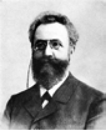
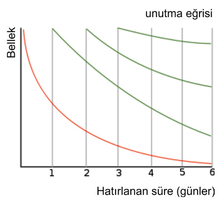
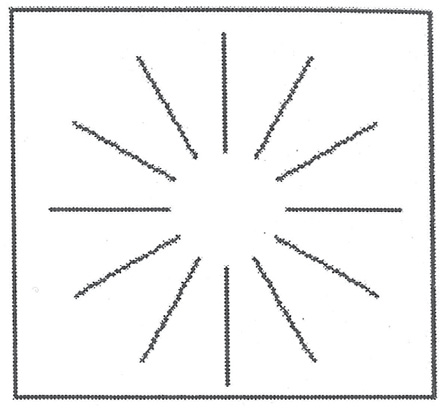
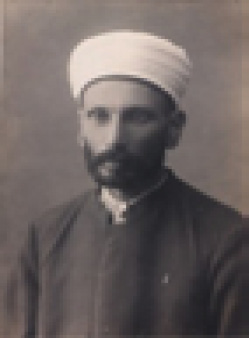
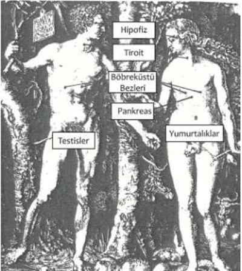
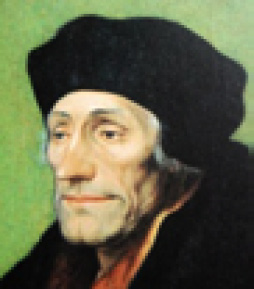
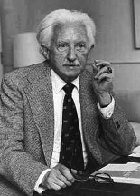
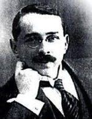
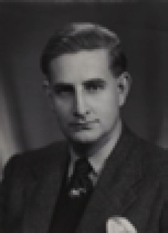

E
EBBİNGHAUS, Herman (1850-1909) Öğrenme ve bellek konularını ilk kez deneysel olarak inceleyen psikolog. Ebinghaus, Almanya’da Bonn yakınlarında doğdu. Burada başladığı tarih ve filoloji eğitimini Halle ve Berlin’de sürdürdü. Bu süreçte ilgisi, felsefeye yöneldi. 1873 yılında felsefeyi bitirdi. Sonraki yedi yılını bağımsız çalışmalara ve bilime adadı. Ebinghaus, öğrenme ve bellek konularını ilk kez deneysel olarak inceleme girişimiyle Wund’a meydan okumuş olmanın yanı sıra, çağrışım ve öğrenme konularıyla ilgilenme yollarını da köklü biçimde değiştirdi. Ebinghaus’a dek, daha önce oluşmuş olan çağrışımlarla ilgileniliyordu. Ebinghaus ise çağrışımların oluşumunu inceleyerek bunların hangi koşullar altında oluştuğunu denetleme yoluyla öğrenme araştırmalarını daha nesnel olarak gerçekleştirme olanağını yarattı. Ebinghaus’un öğrenme ve unutma araştırmaları, tümüyle psikoloji sorunlarından oluşan bir alanın ilk denemeleri oldu. Bu da deneysel psikolojinin etkinlik alanını önemli ölçüde genişletti. Ebinghaus, 1876 yılında, Wund’un laboratuvarını açışından üç yıl önce, Londra’da bir kitap sergisinden Fechner’in Elemente der Psychophysik adlı kitabının ikinci el bir kopyasını satın almıştı. Bu rastlantısal karşılaşma, onu ve yeni psikolojiyi derinden etkiledi. Fechner’in ruhsal görüngülere matematiksel yaklaşımı, Ebinghaus’u oldukça heyecanlandırdı. Fechner’in katı, düzenli ölçümlerle psikofizik için yaptıklarını, o da bellek çalışmaları için yapmayı düşledi. Deneysel yöntemi, yüksek düzeyli zihinsel süreçlere uygulamayı düşündü ve bellek alanında çalışmaya karar verdi. Tek başına, beş yıl süren kontrollü, titiz araştırmalar yaptı. Öğrenmenin ölçümü için anımsamanın bir koşulu olarak, çağrışımların sıklığı ilkesi üzerinde yoğunlaşan çağrışımcıların bir tekniğini uygulamaya koydu. Bu materyalin bir kez yetkin bir biçimde ortaya konulabilmesi için gereken yineleme sayısının hesaplanmasıyla öğrenme materyalinin zorluğunun ölçülebileceğini düşündü. Ebbinghaus, birbirinin aynı olmayan; ancak benzer hece listelerini, öğrenme aracı olarak kullandı. Kendi üzerinde gerçekleştirdiği deneylerinin doğruluğuna güvenmek için deneylerini sıklıkla yineledi. Ebbinghaus, araştırmalarında, öğrenme gereci için, günümüzde anlamsız heceler olarak bilinen, öğrenme ve çağrışım araştırmalarında devrim yapan bir dizi hece oluşturdu. Titcheener, anlamsız hecelerin kullanımını, çağrışım konusundaki ilk önemli ilerleme işareti olarak yorumladı. Bu çalışmalarda düzyazı ve şiir kullanımı, güçlük yaratıyordu. Anlamlar ve oluşan çağrışımlar, gerecin öğrenilmesini kolaylaştırıyordu. Bu çağrışımlar, denemelerde gerektiği gibi denetlenemiyordu. İki sessiz harfin arasına bir sesli harfin getirilmesiyle oluşturulan “yıt, keç, böt” gibi anlamsız heceler, anlamlı sözcüklerin oluşturduğu sakıncayı gideriyordu. Ebinghaus, bu yolla elde ettiği 2300 heceyi öğrenmek için, rastgele seçim yapmak üzere hazırladı. Ne ki bir Alman psikoloğu, yaptığı titiz bir tarih verisi araştırması ile Ebbinghaus’un oluşturduğu hecelerden kimilerinin dört, beş, altı ya da daha fazla heceden oluştuğunu ortaya çıkardı. Daha da önemlisi, Ebbinghaus’un “hecelerin anlamsız dizisi” dediği şey, İngilizceye yanlışlıkla “anlamsız heceler dizisi”olarak çevrildiğini saptadı. Ayrıca hecelerin tümü anlamsız da değildi; anlamsız heceler oluşturmak, oldukça zordu. Ebbinghaus, türlü koşulların, öğrenme ve anımsama üzerindeki etkisini belirlemek amacıyla birçok deney düzenledi. Bunlardan biri, anlamlı gereçlerin ezberlenme hızıyla anlamsız heceler listesinin ezberlenme hızı arasındaki farkı araştırıyordu. Bu amaçla Byron’un Don Juan’ından kıtalar ezberledi. Her kıtada 80 hece vardı. Ebbinghaus, bir kıtanın ezberlenmesinin dokuz okuma gerektirdiğini buldu. Daha sonra 80 anlamsız heceyi ezberledi ve bu ödevin hemen hemen 80 yineleme gerektirdiğini gördü. Buradan, anlamsız gereçlerin öğrenilmesinin, anlamlı gereçlere göre yaklaşık dokuz kat daha zor olduğu sonucuna vardı. Uzun öğrenme gereçlerinin daha fazla yineleme gerektirdiğini; dolayısıyla daha uzun zamanda öğrenildiğini buldu. Hece başına düşen ortalama süre, öğrenilecek hece listesinin uzunluğunun artmasıyla önemli derecede uzuyordu. Daha fazla öğrenme gereci, daha fazla zaman istiyordu. Ebbinghaus, öğrenme ve anımsamayı etkilediğini düşündüğü kimi değişkenleri de araştırdı. Örneğin, listeleri tam olarak öğrenmek için gerekenden fazla yineleme biçimindeki aşırı öğrenmenin, liste içindeki uzak, yakın çağrışımların, öğrenme yinelemelerinin ya da gözden geçirmenin ve öğrenme ile anımsama arasındaki sürenin etkisini araştırdı. Zamanın etkisine ilişkin yaptığı çalışmalarla, ünlü unutma eğrisini oluşturdu. Bu eğri ile öğrenme gerecinin öğrenme etkinliğini izleyen ilk birkaç saat içinde daha hızlı; daha sonra ise çok daha yavaş unutulduğunu gösterdi. Ebbinghaus, 1880’de Berlin Üniversitesi’nde akademik çalışmalarına başladı ve bellek üzerine çalışmalarını yinelemeyi, doğrulamayı sağlayan çalışmalarını burada sürdürdü. Bütün araştrırma sonuçlarını, Bellek Üzerine adlı kitabında topladı. Bu kitap, tümüyle yeni bir çalışma alanının başlangıcı oldu. Psikoloji tarihinde onun gibi tek başına çalışan, deneylerinde kendisini denek olarak kullanan; buna karşın çalışmalarını çok sıkı bir disiplin altında sürdüren ikinci bir araştırmacı yoktur. Onun çalışmaları, çağdaş psikoloji ders kitaplarında yer alacak derecede titiz, ayrıntılı ve düzenlidir. Ebbinghaus, 1885 yılından sonra, daha az yazı yazdı ve bir yıl sonra da Berlin’de yardımcı profesör olarak görev yapmaya başladı. 1890 yılında bir laboratuar açtı ve fizikçi Arthur König ile Duyu Organlarının Fizyolojisi ve Psikolojisi Dergisi’ni kurdu. Ebbinghaus, yayımlanan yapıtlarının yetersizliği neden gösterilerk Berlin’de yeniden görevlendirilmedi. 1894 yılında üniversitede daha küçük bir görev için gittiği Breslau’da 1905 yılına dek kaldı. 1897’de bir Tümce Tamamlama Testi geliştirdi. Bu test, olası yüksek düzeyli zihinsel süreçlere yönelik, bilinen ilk başarılı test niteliğini taşıyor ve bunun değiştirilmiş biçimi, günümüz genel zekâ testlerinin çoğunda kullanılıyor. Ebbinghaus, 1902’de Bir Psikolojinin İlkeleri’ni; 1908’de de Psikoloji Makale Özetleri’ni yayımladı. İki kitap da birkaç baskı yaptı. Bir bilim insanının konumunun ve ulaştığı sonuçların zamana karşı dayanabilirliği, onun tarihsel değerinin ölçütü olarak alındığında Ebbinghaus’un önemi, Wund’un önüne geçiyor. Bilimsel yöntemin de yardımıyla Ebbinghaus’un çalışmaları, çağrışım kavramının yönünü yalnızca bir kurgu olmaktan kurtarıp, araştırılabilir bir konu olmaya doğru değiştirdi. Öğrenme ve belleğe ilişkin ulaştığı sonuçların büyük bölümü, bunların yayımlanışından yüzyıl sonra bile geçerliliğini koruyor. Bkz. Ebbinghaus Unutma Eğrisi.

Ebbinghaus unutma eğrisi (Ebbinghaus curve) Bellenen (ezberlenen) anlamsız hecelerin unutulmasına ilişkin öğrenimi izleyen birkaç gün içinde unutmanın çok olduğunu; sonraki günlerde ise azaldığını gösteren eğri. Bkz. EBBİNGHAUS, Herman; öğrenme.

Ebbinghaus Unutma Eğrisi
ebleh Bkz. alık.
eblehlik Bkz. alıklık.
edebiyat (literature) 1. Duygu, düşünce, olay, olgu ve imgeleri güzel ve etkili bir biçimde anlatan söz sanatı. 2. Bu sanatın ilkelerini, kurallarını ve bu alanda oluşturulmuş ürünleri inceleyen bilgi dalı. 3. Herhangi bir çağda bir dilde yaratılmış sözlü ya da yazılı, sanat değeri taşıyan yapıtların tümü. 4. Herhangi bir bilim dalıyla ilgili yazı ve yapıtların tümü.
edilgin (passive) 1. Devinimi ve etkisi olmayan, durağan, dingin; pasif. 2. Dış etkileşimin yol açtığı türden davranışlar; kendinden çaba göstermeme durumu. 3. Cinsel davranışlarda başkalarına bağımlı, uysal rol. Bkz. edilgin dil; edilgin içedönüklük; edilginlik; edilginlik gereksinimi; edilgin öğrenme; edilgin öğretme; edilgin-saldırgan kişilik; edilgin sözcük dağarcığı.
edilgin dil ( passive language) Kişinin konuşma ve yazı dilindeki anlama gücünün sınırı; pasif dil. Bkz. dil; etkin dil.
edilgin içedönüklük (passive introversion) Jung’a göre, ruhsal etkinlikleri dış dünya gerçeklerine yöneltememekten doğan başarısızlık; pasif içedönüklük.
edilginlik (passivity) 1. Dış güçlere ya da başkasının istemine boyun eğme ve edilgin olma durumu; pasiflik. 2. Dinde, Tanrı’nın önünde boyun eğme ve istemini kullanmama durumu. Gizemcilikte bu, Tanrı ile birleşme koşulu sayılıyor.
edilginlik gereksinimi (passivity need) Gevşek ve eylemsiz durma ve başkalarını kendi haline bırakma gereksinimi; pasiflik ihtiyacı.
edilgin öğrenme (passive learning) Gerekli ve kimi zaman yeterli güdülenme ya da pekiştirmenin bulunmadığı durumlarda oluşan öğrenme; pasif öğrenme. Bkz. öğrenme.
edilgin öğretme (spoon feding) Eğitim ve öğretimde öğrenciyi edilgin bir durumda tutarak yetiştirmeye çalışma; pasif öğretme. Bkz. eğitim; öğrenci odaklı eğitim.
edilgin-saldırgan kişilik (passive-aggressive personality) Olaylar karşısında gerekli bağımsız davranışı gösteremeyen; kimilerinde kararsız ve başkalarının buyruğunu bekleyen; kimilerinde ise, aşırı öfkeli, kırıcı ve engelleyici davranışlar gösteren kişinin özelliklerinin tümü; pasif-saldırgan şahsiyet.
edilgin sözcük dağarcığı (passive vocabulary) Bir kimsenin okurken ya da dinlerken anladığı; ancak, yazarken ve konuşurken kullanmadığı sözcüklerin tümü; pasif kelime hazinesi. Bkz. etkin sözcük dağarcığıı
edim 1. (operation) Dile bağlı olmayan, işe yönelik yetenek; ana dili edimi ve ana dili edinci gibi uzun bir süreden beri edinilip elde tutulmuş şey ya da şeyler; kişinin belirli bir durumla karşılaştığında yapabildikleri; muktesebat, eylem. Chomsky, öğrenilenlere edim; doğuştan gelene de edinç diyor. Testteki temel dili konuşmayan ya da sözel yetersizlikleri olan bireylere engel oluşturmayacak biçimde edim testleri geliştirilmiştir. Bkz. edim hataları; edim psikolojisi; edimsel; edimsel koşullama; edimsel öğrenme; edim yitimi. 2. (act) Varlık, ilişki ya da niteliklerin gizilgüç olmaktan çıkıp gerçekleşmesi; akt.
edim hataları (parapraxis) Psikanalize göre, bilinçdışı istek, tutum ya da dürtüleri dışa vurduğuna inanılan dil; kalem sürçmesi; adların, yerlerin, önemli olayların unutulması; sakarlık gibi davranışsal hatalar ya da belirtisel eylemler. Bkz. simge.
edim psikolojisi (act psychology) Her ruhsal olay, kendi dışında bir nesneye dönük olduğuna göre psikolojinin konusunun da nesne ya da içerik değil; ruhsal olayın yönelişi olması gerektiğini; bu yönelmenin ise bilme-tanıma, hoşlanma-hoşlanmama ya da değerlendirme biçiminde olabileceğini savunan psikoloji yaklaşımı. Bu görüşü, özellikle bilincin yapısını parçalarına ayıran Wund’un psikoloji görüşüne bir tepki olarak ilk kez 1874’te F. Brentano savundu. Sonra Husserl ve Scheler’in de katıldığı bu görüş, Alman Okulu’na karşı, Avusturya Okulu’nun doğuşuna yol açtı. Bunun sonucu olarak da ABD’de işlevsel psikoloji akımı doğdu.
edimsel (actual) Gizilgüç ya da gizli olmaktan çıkmış, gerçekleşmiş. Bkz. edim.
edimsel koşullama (operant conditioning) Bir öğrenme yolu; bir davranış parçasının kendisinin doğurduğu sonuçlara bağlı olarak değişikliğe uğrama süreci; operant şartlanma. Edimsel koşullamayı ilk kez, sistemli biçimde B. F. Skinner (1938) geliştirdi. Ona göre davranışın bağımlı olduğu çevresel koşullar ayarlanarak, insanın davranışı denetim altına alınabilir. Davranışın çevresel belirleyicileri, yaşanmakta olan zamanda ve geçmişteki belirleyicilerdir. Tepkiler, evrim basamağının yüksek düzeyli organizmalarının davranışlarının ancak, çok küçük bir bölümünü oluşturuyor. Davranışların büyük bölümü, edimsel davranışlardır. Edimsel davranışın ilk nedeni, organizmanın içindedir. Organizma, edimleri biyolojik yapısından dolayı ortaya koyuyor. Bir davranımın yapılması sonucunda ortaya çıkan uyarıcı, o davranımın gelecekte yapılma olasılığını artırıyorsa, bu uyarıcı olumlu pekiştireçtir (positife reinforcer’dir). Bir davranım sonucunda bir uyarıcının ortadan kalkışı, o davranımın gelecekte yapılma olasılığını azaltıyorsa, o uyarıcı da olumsuz pekiştireçtir (negative reinforcer’dir). Davranışla sonuçları arasındaki ilişki, yalnızca davranışı etkilemekle kalmıyor; aynı zamanda, davranıştan önce ya da davranışla birlikte bulunan çevresel uyarıcıları da etkiliyor ve bu uyarıcıların da davranışı denetleme özelliği kazanmasını sağlıyor. Böyle uyarıcılar ayırt edici uyarıcılardır (discriminative stimuli’dir). Ayırt edici uyarıcıların olduğu yerde belirli bir davranış, belirli bir sonucu doğuruyor. Davranış ve davranışın sonucu arasındaki etkileşime, üç öğeli bağımlılık ilişkisi deniyor. Davranış sonuçlarının davranışlara etki edebilmesi, sonuçların, birey için önemli uyarıcılar olmasına bağlıdır. Örneğin, sonuçlar, yiyecek, su gibi önemli biyolojik uyarıcılar ise, bu uyarıcılar, koşulsuz pekiştirici uyarıcılardır (unconditioned reinforcement stimuli’dir). Koşulsuz pekiştirici uyarıcılar, bir öğrenim yaşantısı gerektirmeden bir davranışı pekiştirebiliyor. Para, saygınlık, beğenilme gibi toplumsal yönden önemli uyarıcılar da davranış sonuçları olabiliyor. Bu tür uyarıcılar da koşullu pekiştirici uyarıcılardır (conditioned reinforcement stimuli’dir). Koşullu pekiştirici uyarıcıların toplumsal yaşamdaki yeri daha önemlidir. Çünkü koşulsuz pekiştirici uyarıcıların pekiştirici özellikleri geçicidir. Koşullu pekiştirici uyarıcılar, pekiştirici özelliklerini, dayandıkları koşulsuz pekiştirici uyarıcılardan alıyor. Tepki ile Edimsel Davranışlar Arasındaki Farklar: (1) Tepkileri, belirli uyarıcılar kendiliğinden uyandırıyor. Bir uyarıcı ile karşılaşan organizma, ister istemez, söz konusu tepkiyi gösteriyor. Çünkü uyarıcılar ile tepkilerin görülmesi arasında bire bir ilişki vardır. Tepkiler, genellikle istem dışı çalışan düz kasları ilgilendiren kalıplaşmış davranışlardır. (2) Edimlerle uyarıcılar arasında kendiliğinden bir ilişki yoktur. Bir edimin gerçekleşmesine, ayırt edici bir uyarıcı, ortam hazırlıyor. Ayırt edici uyarıcının olduğu yerde bir edimin gerçekleşme olasılığı yüksektir. Edimlerin yapılış sıklığını, davranışın sonuçları denetliyor. Edimler, genellikle istencimizle çalışan çizgili kasları ilgilendiren ve türlü biçimlerde görülebilen davranışlardır. Pekiştirme tarifesi, hangi davranışların pekiştirileceğini belirten bir kuraldır. Basit Pekiştirme Tarifeleri: Bu tarifeler ikiye ayrılıyor. (1) Oranlı Tarife: Davranımın pekiştirilmesi, belli sayıda yineleme gerektiriyor. (2) Aralıklı Tarife: Bu, bir davranımın pekiştirilmesi için, belli bir sürenin geçmesi gerektiğini belirtiyor. Oranlı tarifede organizmanın gerekli davranımı yapmak için kullandığı zaman; aralıklı tarifede ise, davranımın sayısı önemsizdir.Oranlı ve aralıklı tarifeler de kendi içlerinde değişken ve değişmez olarak ikiye ayrılıyorlar. Buna bağlı olarak tüm basit ve olumlu pekiştirme tarifelerinin dört türü (varyasyonu) ortaya çıkıyor. (a) Değişmez Oranlı: Pekiştirilecek her davranım için toplam aynı davranım sayısı gerekiyor. Örneğin, bir işçinin ürettiği parça başına ücret alması gibi. (b) Değişmez Aralıklı: Davranımlar, hep aynı süre içinde pekiştiriliyor. Örneğin, 8 saatlik iş gününe aynı ücret veriliyor. (c) Değişken Aralıklı: Bir davranımın pekiştirilme süresi, pekiştirmeden pekiştirmeye değişiyor. Örneğin, bir kişi, mektup gelip gelmediğini öğrenmek için posta kutusuna bakıyor. (ç) Değişken Oranlı: Pekiştirme için gerekli davranım sayısı, şans oyunlarında olduğu gibi, düzensiz olarak değişiyor: En etkili tarifeler, değişken oranlılardır. Organizma, kaçıncı davranımından sonra pekiştirmeyi gerçekleştireceğini yordayamadığı için, örneğin, kumar alışkanlığından kolaylıkla vazgeçemiyor. Bunlar dışında çoklu ve karmaşık pekiştirme tarifeleri de vardır. Edimsel koşullamada yeni davranışların edinilmesi, aşamalı yaklaşım tekniği ile sağlanıyor. Aşamalı yaklaşım, her seferde davranışa biraz daha benzeyen davranışların sistemli bir biçimde pekiştirilmesi ile hedef davranışın, davranış dağarına katılımını sağlıyor. Örneğin bebek, dili bu biçimde öğreniyor. Biçim verme de denen bu olayda, var olan basit davranımları, yeni ve daha karmaşık davranışlar durumuna getirebilmek için, sirk hayvanlarının eğitiminde olduğu gibi pekiştirme ve pekiştirmeme çalışmaları birlikte kullanılıyor. Davranış ile onun sonuçları arasındaki ilişki, kimi zaman tümüyle rastlantıya dayanıyor. Bu tür davranışlar geçersiz davranışlardır. Çünkü pekiştirecin ortaya çıkmasının, bu davranışların yapılmasıyla bir ilgisi bulunmuyor. Davranışla onun sonucu arasında yalnızca bir izlerlik ilişkisi vardır. Davranış, rastlantı sonucu pekişmiştir; boşinanca dayanan davranışın sürüp gitmesinin nedeni, bu izlerlik ilkesidir. Örneğin, yağmur duaları yağmur yağdırmıyor; ancak, bu davranış, sürüp gidiyor; çünkü arada bir rastlantı sonucu yağan yağmurla davranış pekiştirilmiş oluyor. Edimsel koşullama, psikolojiye birçok terim ve kavram kazandırmıştır. İnsan anlayışından, tedavi yaklaşımına dek birçok konu, psikolojideki davranışçı akımın itici gücü olmuştur. Edimsel koşullama araştırmaları, tümüyle laboratuvarda deneylerle ve Skinner Kutusu (Skinne’s box) da denen edimsel kutu gibi özel araç gereçlerle gerçekleştiriliyor. Sonuç olarak edimsel koşullamanın, davranıştan sonra gelen ödül (olumlu pekiştireç) ve ceza (olumsuz pekiştireç) üzerine kurulmuş olduğu söylenebilir. Bkz. davranışçı psikoloji.
edimsel öğrenme (operant learning) Bir sonraki sınamada tepkinin olasılığını artırmak amacıyla canlının belli birtakım tepkiler yapması için pekiştirdiği öğrenme durumu. İstenen tepki türü yönündeki tepkileri giderek artıran pekiştirme yoluyla, çok karmaşık bir davranış örüntüsü öğrenilebiliyor. Bkz. edimsel koşullama.
edim yitimi Bkz. işlev yitimi.
edinç Bkz. edim.
edinilmiş değişinim (acquired mutation) Birey ana rahminde yaşama başladıktan sonra bir hücrede gerçekleşen genetik ya da kromozom değişikliği; edinilmiş mutasyon. Bu değişinim daha sonra, bu hücreden türeyen bütün hücrelere geçiyor. Kanserin gelişiminde, edinilmiş değişinim etken oluyor.
edinilmiş dürtü (acquired drive) Açlık gibi doğuştan gelen dürtülerin uzantıları olarak, deneme ve öğrenme ile kazanılan ve günlük yaşamda görülen güdüler. Örneğin, çocuk, doğduktan sonra anne babasının ve toplumun onaylayacağı davranışlara yöneliyor. Onay ve başarılara yönelten bu tür güdüler, edinilmiş dürtülerdir. Bkz. davranışçı psikoloji; doğal dürtü.
edinilmiş özelliklerin kalıtımı (of acquired characteristics) Yaşamı sürdürmeye katkıda bulunan becerilerin ve özelliklerin çabayla kazanıldığını; yaşam boyu kazanılan bu beceri ve özelliklerin, genetik olarak bir sonraki kuşağa aktarıldığını savunan öğreti. Lamarck’ın geliştirdiği bu öğreti, Darwin kuramından önceki ilk tutarlı evrim kuramıdır.
edinilmiş rol (acquired role) Doğuştan gelmeyen, sonradan kazanılan anne babalık, öğretmenlik, doktorluk gibi roller. Bkz. verili rol.
edinilmiş statü (acquired status) Kişinin doğuştan gelmeyen, kendi isteği, seçimi, çabaları ya da becerileri ile kazandığı toplumsal konumu.
edinmeci ruh (acquisitive spirit) Kişisel ya da toplumsal değere sahip para, mal ya da başka bir nesne edinip bunları biriktirme itkisi. Örneğin pul, para ya da resim koleksiyonu yapanlar edinmeci ruhu temsil ediyorlar. Bkz. dışkıl kişilik; istifçilik; toplama manyaklığı.
Edwards kişisel tercih envanteri ( Edvarts Personal Preference Schedule) Üniversite öğrencilerine ve yetişkinlere uygulanan, 225 maddeden oluşan, Murray’ın betimlediği 15 gereksinimi içeren ve Yıldız Kuzgun’un Türkçeye uyarladığı envanter. Bu araçtaki gereksinimler başarma, uyarlık (riayet etme), düzen, gösteriş (teşhir), özerklik (bağımsızlık), duyguları anlama, yakınlık, ilgi görmeyi isteme-yardım isteme, başatlık (baskın olma), kendini suçlama, şefkat gösterme-koruma, değişiklik (yenilik), dayanıklılık (sebat) karşıt cinsle ilişkiler, saldırganlıktır.
efemine Bkz. kadınsı.
egemen Bkz. baskın.
egemen işlev (dominant function) Jung’a göre, kişiliğin temel ruhsal işlevleri olan duyarlık, duygu, düşünce ve sezgiden birinin, genellikle öbürlerinden daha çok gelişmesi, bilinçli dünyada daha etkili olması. Bu durumda öbür işlevler, bu üstün işleve yardımcı görevler üstleniyor. Bkz. analitik psikoloji; JUNG, Carl Gustav.
egemen kültür (dominant culture) Siyasal ve iktisadi gücün de desteği ile bir toplumda dilini, davranış biçimlerini ve değerlerini öbür kültürlere kabul ettirebilecek düzeyde güç kazanmış olan kültür; baskın kültür.
egemenlik (sovereignty) (hakimiyet) 1. Söz geçirebilme, istediğini yaptırabilme gücü. 2. Ulusal ya da uluslar arası düzeyde siyasal karar alma ve bu kararları uygulama yetkisinin bir birey, grup ya da kuruma değil; yalnızca devlete ait olması. Bkz. egemenlik sıradüzeni.
egemenlik sıra düzeni (dominance hierarchy) 1. Sosyal psikolojide ve karşılaştırmalı psikolojide grup üyelerinin, grup içindeki egemenlik, güç ve saygınlıklarına; dolayısıyla kaynakları kullanma önceliklerine göre sınıflandırılması; hakimiyet hiyerarşisi. 2. Davranışların öncelik ya da önemlerine göre sıralanması.
ego Bkz. benlik
ego analizi Bkz. benlik çözümlemesi.
ego bölünmesi Bkz. benlik bölünmesi.
ego bütünlüğü Bkz. benlik bütünlüğü.
ego çekirdekleri Bkz. benlik çekirdekleri.
egoist Bkz. bencil.
egoizm Bkz. bencillik.
ego psikanalistleri Bkz. benlik psikanalistleri.
egosantrizm Bkz. beniçincilik.
ego savunma mekanizmaları Bkz. benliğin savunma mekanizmaları.
egotizm Bkz. özsevgi.
egzama (egzema) Alerji gibi dış; ruhsal olaylar gibi iç etkenler nedeniyle daha çok 1-15 yaş arasındaki çocukların derilerinde ortaya çıkan ve türlü biçimlerde görülen yara; mayasıl. Egzamalı ve astımlı çocuklar üzerinde yapılan araştırmalar, bu bozukluğun, özellikle tedirgin, saldırgan, özgüvensiz ve aşırı kaygılı çocuklarda görüldüğünü ortaya koyuyor. Bu çocukların annelerinin çoğu kez egemen, çocuklarına aşırı düşkün ya da baskıcı, kızgınlıklarını bastırmış kişiler oldukları görülüyor. Bu annelerin çocukları, kızgınlıklarını genellikle yalancı bir olgunlukla örtüyorlar. Anneye dokunmak, onunla ilişki kurmak, bu çocuklar için bir düş olduğu için bunlar, söz konusu eksikliklerini, bu hastalıklarla ödünlemiş oluyorlar.Tedavi için, doğal yatkınlık ve alerji oranına göre, çocuğa ve anneye önem verilmesi gerekiyor. Yüz yüze ve dışa vuran tedaviyle egzamada çok iyi sonuçlar alınıyor. Bkz. psikoterapi.
egzersiz Bkz. alıştırma.
egzistansiyalizm Bkz. varoluşçuluk.
eğilim (tendency) 1. Organizmanın belli bir uyarıcıya şu ya da bu biçimde tepki vermesini ya da belli şeyleri bir ölçüde daha kolay öğrenmesini sağlayan içsel durum. 2. Belli olay, puan ve benzerlerinin istatistik düzeyinde ağırlıklı olarak belli noktalarda kümelenmesi; ayrıca bu kümelenmenin anlattığı şey.
eğitbilim Bkz. eğitimbilim.
eğitici ceza Bkz. ceza; geliştirici ceza.
eğitici etkinlikler Bkz. eğitsel etkinlikler.
eğitilebilir zekâ geriliği (trainable mental retardedness) ZB 35-49 (kimilerine göre de 40-55) arasında değişen ve özel koşullar altında bile akademik eğitimden yararlanamayan; eğitimle ancak, kendine bakma, evdeki yaşama uyum sağlama, sürekli gözetim altında ve korunaklı atelyelerde basit işler yapma gibi belli becerileri kazanabilen bireyin zekâ düzeyini anlatan terim; orta derecede zekâ geriliği. Bkz. engelli; zekâ geriliği; zekânın derecelendirilişi.
eğitim (education) İnsan yavrusunun insanlaştırılması, insanın üretilmesi etkinliği; terbiye. 1. Yeni kuşakların, toplumsal yaşamda yerlerini almak için hazırlanırken gerekli bilgi, beceri ve anlayışları elde etmelerine ve kişiliklerini geliştirmelerine yardım etme süreci. 2. Önceden saptanan amaçlara göre bireyin kendi yaşantıları aracılığı ile davranışlarında belli gelişmeler sağlamaya yarayan planlı etkinlikler sistemi. 3. Belli bir konuda bir bilgi ya da bilim dalında gerçekleştirilen yetiştirme ve geliştirme. 4. Yeni kuşaklara, geçmişin bilgi ve deneyimlerini düzenli bir biçimde aktarma ya da kazandırma süreci. 5. Eğitim felsefesi, eğitim tarihi, eğitim psikolojisi, öğretim programları, genel öğretim yöntemleri, özel öğretim yöntemleri, öğretim uygulamaları, yönetim, denetim ve başka eğitim öğretim alanlarını kapsamak üzere öğretmen, yönetici ve uzman yetiştirmek için düzenlenen bütün kurslara ve bu kurslarla ilgili bilimsel çalışmalara verilen ortak ad. 6. Eğitimbilim. İnsan olmaya aday olarak dünyaya gelen bebek, yaşına ve kişisel ilgi ve yeteneklerine uygun olarak belli bir eğitim sürecinden geçiyor ve toplumdaki yerini alıyor. Ailede ve okulda yetişmesi, bir konuda yetkinleşmesi için gerekenleri, öğrenme ile elde ediyor. İnsan, dili, duyguyu, düşünceyi, bilimi, sanatı, tekniği, ahlakı öğrenerek içselleştiriyor ve kendini geliştiriyor. Kendine özgü sınırlılıkları olmakla birlikte, öğrenerek sürekli yeni, istendik davranışlar edinmeye ve davranışlarını değiştirmeye; kısacası, eğitilmeye elverişli bir doğaya sahip olan insana, soydaşlarının yüzyıllar boyunca edindiği kültürel birikim, eğitimle aktarılıyor. Eğitim, uzun, güç ve karmaşık bir süreçte gerçekleşebiliyor. Resmi yazışma ve söylemlerde “eğitim-öğretim” diye adlandırılan etkinliklerin özünü çağdaş eğitim yaklaşımında öğrenme (öğrenim) süreci; onun özünü de laiklik oluşturuyor. Laiklik, çağdaş eğitimin temel değerlerinden biridir. “Eğmek” kökünden türemiş olan “eğitim” ve “öğretmek” kökünden türemiş olan “öğretim” terimi, bugün ilk anlamlarından farklı birer anlam içeriği kazanmıştır. Eğitimci kavramı da öyledir. “Eğitimci”, bugün kendi alanında verimli çalışmalar yapmak için alanının gerektirdiği eğitimbilim yöntem ve tekniklerini, her öğrencinin gereksindiği algılamayı, ardından da kavram oluşturmayı sağlayacak olan öğrenim yaşantılarını uygun biçimde belirleme sorumluluğunu taşıyor ya da taşımalıdır. Buna göre “öğretim” kavramı da eğitimcinin “öğrenim sürecini, amacını, becerisini, hızını, etkinliğini, gelişimini yönetmesi” anlamını taşıyor. “Öğretici” (öğretmen) ise “öğrenim yöntem ve araçlarını yöneten, öğrenciye yol gösteren, danışmanlık yapan, onun destekleyicisi olan; kısacası, öğrenciyi bilinçlendirerek onun bir konuyu nasıl öğrenebileceğini öğrenmesine yardım eden” kişidir. “Öğrenci” de öğrenme sürecinin sorumluluğunu bilinçli olarak doğrudan doğruya üstlenip ele alınan konuyu öğrenmeye uğraşan bireydir. Çağdaş öğretim etkinliğinin sürdürülebilmesi, öğrenme işlevinin niteliği, oluşumu, süreci gibi özelliklerinin ne ve nasıl olduğunun yeterince kavranmış olmasına bağlıdır. Bunun gerçekleştirilemediği ortamlarda eğitim, öğreticinin öğrenciye bilgi yüklemesi yaptığı ezberci bir uygulamaya dönüşüyor. Oysa çağdaş eğitimcinin temel amacı, öğrencinin öğrenme sürecini yönlendirmek, öğrenim becerilerini geliştirme çabasında ona destek olmak, kendi kendine öğrenmeyi öğretmek ve onu yaşam boyunca kendi kendini eğitebilecek düzeye eriştirmektir. Çağdaş eğitimin, “öğretim-öğrenim sürecinin sonunda ortaya çıkan duygu, düşünce ve davranış değişikliği”ni gerçekleştirmek olarak anlaşılması gerekiyor. “Öğrenim”den söz etmeden, yalnızca eğitim-öğretim kavramının kullanımı, çağdaş eğitimin temelini oluşturan öğrenci odaklı yöntem yerine öğretmen odaklı aktarma yöntemiyle yürütülen geleneksel eğitimi çağrıştırıyor. Öğretmen odaklı yöntemle öğrenciye kuru bilgi yükleniyor; öğrenci, dar kalıplar içerisinde düşünmeye yöneltiliyor; onun yetenekleri ve zihinsel gelişimi köreltiliyor. Sonuçta bu yaklaşım, yaratıcılığı değil; yalnızca “bilgi yükünü ölçen süzgeçlere dönüşmüş bir sınav düzeni”ni oluşturuyor. Oysa çağdaş eğitim, öğrenci odaklı yöntemle deney, gözlem, çözümleme, bireşim ve yorum yapabilen araştırıcı, üretken ve yaratıcı bireyler yetiştirmeyi amaçlıyor. O nedenle “eğitim-öğretim” kavramları yerine ya “öğretim-öğrenim” kavramlarını ya da bunların ikisini de içeren “eğitim” kavramını kullanmak, doğru yaklaşım olarak beliriyor. Eğitimin özü olan “öğrenim sürecinin etkisini artırma” konusunda yapılan araştırmalardan yüz güldürücü bulgular elde edilmiştir. Bunlar, eğitimci, anne baba ve öğretmenlerin yıllardır sora geldikleri “Bu çocuk öğrenebilir mi?” sorusunun, yerini “Bu çocuk nasıl öğrenir?” sorusuna bırakmasını sağlamıştır. Bunun sonucunda eleyici eğitim anlayışı çağın dışında kalmış; onun yerini geliştirici eğitim almıştır. Bu araştırma bulguları, bir sınıftaki öğrencilerin yüzde 90’ından fazlasının, o sınıfın öğretim programında yer alan konuları, tama yakın düzeyde öğrenebileceğini gösteriyor. Öğrencileri yakından tanıyarak onların her birine uygun öğrenim ortamı, toplumsal-ruhsal ortam hazırlayıp kendilerine öğrenme fırsat ve olanaklarıyla birlikte, gereksindikleri kadar süre veren öğretmen, ele alınan konuyu tüm öğrencilerin, tama yakın düzeyde öğrenmesini sağlayabiliyor. Devrim niteliğindeki bu bulgudan sonra eğitimde öğretmen odaklı yöntemi kullanmak, çağın gereksinimlerini karşılamayan bir eğitimi sürdürmek anlamını taşıyor. Öğrencilerin Farklı Öğrenme Süresine Gereksinim Duymalarının Nedenleri: Birincisi, öğrencilerin öğrenim hedefine ilişkin yetenek farklılığıdır. Ortaya konulan öğrenme durumunu, düzenlenen öğrenim yaşantılarını kavrama gücü, öğrenciden öğrenciye değişiyor. Bu konuda özellikle sözel yetenek (doğru okuma, okuduğunu anlama; düzgün, akıcı konuşma ve yazma) etkili oluyor. Üstün yetenekliler, az yeteneklilere göre daha kısa sürede öğreniyorlar. İkincisi, öğrencilerin öğrenmeye gösterdikleri istek, kararlılık ve direnç demek olan güdülenme derecelerinin farklılığıdır. Üçüncüsü, öğretilenlerin açık, anlaşılır olup olmamasıdır. Öğrenme ancak, öğretilenleri her öğrencinin uygulama düzeyinde kavraması sağlandığında gerçekleşiyor. Dördüncüsü, öğrenciye normal öğrenme koşulları içinde yeterli zaman ayırma ve ona tam öğrenme fırsatı verme zorunluluğudur. Konunun öğrenilmesi için yeterli süreyi ayırmamak; birçok araç gereci kısa süre içinde bir arada öğrenciye sunmak; bir konuyu pekiştirmeden öbür konuya geçmek, öğretimi hızlandırmak ve yaşantıları sıkıştırmak ya da eksik bırakmak, öğrencilerin büyük bir çoğunluğunun öğretim hedefine erişmesini engelliyor. Beşincisi, öğretimin niteliğidir. Öğretimde nitelik de öğrenim hedefine ulaşmak için en uygun yaşantıları belirleme, örgütleme ve her öğrencinin gereksinimine göre düzenleme ile sağlanabiliyor. “Yetenek, güdülenme ve öğretimi anlama”nın oluşturduğu ilk üç etken, öğrenim sürecinin ta başlangıcında öğrenciler arasında farklılıklar bulunduğunu; bu nedenle her öğrenciye farklı süreler verilmesinin zorunlu olduğunu gösteriyor. Son iki öğe ise her öğrencinin gereksinimine uygun süreyi ve yöntemleri içeren öğrenim yaşantılarının ve öğrenim ortamının hazırlanmasının gerekliliğini vurguluyor. Böylece bireysel öğretimin, eğitimde en etkili öğretim-öğrenim yöntemi olduğu ortaya çıkıyor. Özetle bireysel öğretim amacıyla öğretmen, öğrenme konusunu açık bir biçimde ortaya koyuyor. Her öğrenciyi yeterince güdülüyor. Seçtiği öğrenim yöntemlerini her öğrenciye göre ayarlıyor. Öğrencilerin öğrenmelerini izleyip karşılaştıkları zorlukları gideriyor. Bu çabanın sonunda onlara, tama yakın düzeyde bir öğrenme olanağı yaratmış oluyor. Öğrenciler arasındaki öğrenme ve başarı farklılıklarına yol açan önemli bir etkeni de başarının ölçülmesi ve değerlendirilmesinde benimsenen tutum ve kullanılan yöntemler oluşturuyor. Her öğrencinin öğrenebileceğine inanılan bir okulda ölçme ve değerlendirme, geleneksel eğitim anlayışından tümüyle farklı bir yaklaşımla gerçekleştiriliyor. Çağdaş okulda öğretmen, her öğrencinin beklenen davranış hedefine ulaşabileceğine inandığı için öğrencileri birbiriyle karşılaştırmayı, değerlendirme ölçütü olarak kullanmıyor. Bu uygulamada değerlendirmenin ölçütünü, öğrenim hedefleri oluşturuyor. Bağıl değerlendirme yerine mutlak değerlendirmeye başvuruluyor. Öğrenim hedeflerine farklı yöntemlerle ve farklı sürelerde ulaşsalar bile, bu yaklaşımda öğrencilerin tümü pekiyi alabiliyor. İstenilen standarda yaklaşmak, başarının dağılımından daha önemli görülüyor. Beklenen gerçek başarıyı, yalnızca bireysel ayrılıklar gerçeğinden yola çıkan eğitim sistemi yakalayabiliyor. Özel öğretmenlerin gösterdiği başarının gizi, onların öğrenime öğrencinin bulunduğu yerden başlamalarıdır. Çağdaş eğitim sistemi, başarısızlığın nedenlerini farklı ilgi, yetenek, çevre ve yaşantı birikimine yükleme yanlışlığına düşmüyor. Bu nedenleri kendinde, kendi etki sisteminin öğelerinde arıyor. Zekâ testlerine de doğuştan getirilen zihinsel gücü ölçen birer araç olarak bakmıyor. Bunları, bireyin geliştirmiş olduğu yetenekleri ve gücü ölçen araçlar olarak değerlendiriyor. Bu gelişmelerle 20. yüzyılın son çeyreğinde, daha etkili olan ve hümanist (insancı) yaklaşımın da desteklediği tanım ortaya çıkmıştır. Buna göre eğitim, “bireyin doğuştan getirdiği gizilgüçlerini keşfetmesi, ortaya çıkarması ve geliştirmesi sürecidir.” Eğitimin amacı da “bireyin kendini gerçekleştirmesi”ni sağlamak olarak belirmiştir. Yaşamanın amacı ise kendini gerçekleştirme yoluyla mutlu olmak ve mutlu etmektir. Bireyin sağlıklı ve mutlu bir yaşam sürdürmesi, duyduğu gereksinimleri doyurucu düzeyde ve dengeli bir biçimde gidermesine bağlıdır. Bireyin gereksinimlerini aşama sırasına göre; beslenme, barınma, etkinlik, dinlenme, cinsellik gibi bedensel gereksinimler ile güvenlik, sevgi, ait olma, saygınlık ve kendini gerçekleştirme gibi gelişim gereksinimleri oluşturuyor. Bireyin insan olmasını sağlayan gelişim gereksinimlerini duyması için önce bedensel gereksinimlerini doyurucu düzeyde ve dengeli bir biçimde gidermesi gerekiyor. Birey, bir önceki gereksinimi doyuma ulaştıramadığında, gücünü ve zamanını o gereksinimi doyurma yolunda harcamayı sürdürdüğü için bir üst gereksinimi duymuyor. Örneğin, temel gereksinimlerini giderebilecek ekonomik olanaklardan yoksun bir birey, sırasıyla doyurucu bir sevgi, saygınlık ve kendini gerçekleştirme gereksinimi duymuyor. Bireyde tam verimlilik, kendini gerçekleştirme aşamasına ulaştığında başlıyor ve bu yetkin insan olma savaşımı, yaşam boyu sürüyor. Bütün yönleriyle gelişmiş bir bağımsız kişilik, bu aşamaya ulaşıldığında var oluyor. Gerçekten mutlu olma ve mutlu etme olanağını, bu aşamaya ulaşabilen kişi elde ediyor. Bu aşamanın en başarılı temsilcileri, ürettiği ya da yarattğı ürünlerden bütün insanlığı yararlandıran bilim insanları ve sanatçılardır. Az gelişmiş ülkelerde bu aşamaya, ekonomik olanaksızlıklar ve eğitimsizlik nedeniyle çok az sayıda insan ulaşabiliyor. Sonuç olarak çağdaş eğitimden, her bireyin gereksinimlerini doyurucu düzeyde ve dengeli bir biçimde gidererek, kendi ilgi ve yetenekleri doğrultusunda ve oranında gerekli bilgi, beceri ve değer duygularını öğrenip içselleştirmesine yardım etmesi bekleniyor. Bu edinimlerle birey, güçlü bir benlik, bağımsız bir kişilik geliştirme, kendini gerçekleştirme, insanlaşma aşamasına ulaşma ve toplumda etkin bir yer edinme olanağına kavuşuyor. Bunun için de “kendini, çevresindeki olanakları tanıması, gizilgüçlerini geliştirmesi, sorunlarını çözmesi ve kendini gerçekleştirmesi için kişinin, bu işi kendine meslek edinmiş uzmanlarca gerçekleştirilen düzenli bir yardım süreci” olan rehberlik ve psikolojik danışma hizmetlerinden etkin bir biçimde yararlanması gerekiyor. Bkz. Batı’da eğitimin gelişimi; çocuk eğitimi; dizgeli (programlandırılmış) bilgisayarlı eğitim; dizgeli (programlandırılmış) eğitim; dizgeli öğretimde ders planı düzenleme; eğitim akımları; eğitimbilim; eğitim bilimcisi; eğitim bilimi; eğitim bilimleri; eğitimci; eğitimde fırsat eşitliği; eğitim dersleri; eğitim ekonomisi; eğitim felsefesi; eğitim güçlükleri; eğitim hakkı; eğitim iletişim araçları; eğitim ilkeleri; eğitimin amacı; eğitimin biyoteknolojik temelleri; eğitimin ekonomik temelleri; eğitimin felsefi temelleri; eğitimin psikolojik temelleri; eğitimin tarihsel temelleri; eğitimin temel görevi; eğitimin toplumsal temelleri; eğitim kursları; eğitim mesleği; eğitim ortamı; eğitim planlaması; eğitim programları; eğitim psikolojisi; eğitim radyosu; eğitim sistemi; eğitim siyasası; eğitim sosyolojisi; eğitim süreci; eğitim tarihi; eğitim teknolojisi; eğitim televizyonu; eğitim testleri; eğitim uzmanlığı derecesi; eğitim yaşı; eğitim yönetimi; eğitim yöntemi; eğitsel etkinlikler; eğitsel kol çalışmaları; eğitsel oyunlar; eğitsel ölçme; eğitsel radyo; eğitsel rehberlik; eğitsel tanılama; eğitsel test; eğitsel yöntem; eşit eğitim; gereksinimler aşama sırası; meslek rehberliği; öğrenme; öğrenme kuramları; öğrenme-öğretme yaklaşımları; psikolojik danışma; tam öğrenme; Türklerde eğitim.
eğitim akımları Bkz. daimicilik; dinsel eğitim; esasicilik; idealizm ve eğitim; ilerlemecilik; natüralizm ve eğitim; olabilirlik ve dizgeli eğitim; politeknik eğitim; postmodernizm; realizm ve eğitim; varoluşçuluk ve eğitim; yeniden kurmacılık.
eğitimbilim (pedagogy) Eğitimin bilimsel temellerini ortaya koyan bir bilim dalı; pedagoji, eğitbilim; eğitim bilimi. 1. Toplumun eğitim sistemine göre oluşturulmuş olan okul örgütüne; eğitim programına, amaçlarına, yöntemlerine ve araçlarına ilişkin bilgi veren ve eğitim çalışmalarını kurallara bağlayan disiplinler arası uygulamalı bir bilim dalı. 2. Öğretmenlik sanatı, uygulaması ya da öğretmenlik mesleği için gerekli bilgi, beceri ve değer duygularını kazandıran bilim dalı. Bkz. eğitim; eğitim bilimleri.
eğitimbilimci Bkz. eğitimci.
eğitim bilimi Bkz. eğitimbilim.
eğitim bilimleri (educational sciences) Eğitim olay ve durumlarının doğuş koşullarını, bunların oluşup gelişmesini inceleyen bilimler demeti. Bilimler arası bir bilim olan eğitim bilimleri, yaklaşık 15 kadar bilim dalından yararlanıyor. Eğitim bilimleri üç grupta toplanıyor: (1) Eğitim kurumlarının genel ve yerel durumlarını inceleyen bilim dalları: (a) Eğitim tarihi. (b) Eğitim sosyolojisi. (c) Okul nüfusu incelemeleri. (ç) Eğitim ekonomisi. (d) Karşılaştırmalı eğitim. (2) Eğitim olayı ile bu olayın türlü durum ve ilişkilerini inceleyen bilimler: (a) Eğitim fizyolojisi, eğitim psikolojisi, küçük grupların psikolojisi ve sosyolojisi, iletişim bilimleri. Bunlar, eğitim olay ve konularını doğrudan inceleyen bilimlerdir. (b) Türlü bilim dallarını öğreten ve değerlendiren bilimler. (3) Düşünme bilimleri ve yarınla ilgili bilimler: Eğitim felsefesi, eğitim planlaması ve model kuramları. Bkz. eğitim; eğitimbilim.
eğitimci (educator, educationist) 1. Eğitimbilimde uzmanlaşmış kişi; pedagog, terbiyeci, eğitimblimci. 2. Öğretmenlik, eğitim yöneticiliği ya da eğitim uzmanlığı yaparak eğitim çalışmalarına katkıda bulunan kimse. 3. Kendini eğitim çalışma ve sorunlarına adayan ve bu alanda yapıtları olan kimse. 4. Eğitimin kuramsal ve uygulamalı bir alanında yaptığı öğrenimle akademik yeterlik elde eden ve özellikle üniversitelerin eğitim bölümlerinde öğretim üyeliği görevinde bulunan kişi. Bkz. eğitim.
eğitimde fırsat eşitliği (equality of educational opportunity) Cinsellik, anne babanın ekonomik ve toplumsal durumu, yaşanılan çevre, din, mezhep, ırk gibi dış etken özelliklerine bakılmadan bütün çocukların, eğitim olanaklarından ilgi ve yetenekleri yönünde ve oranında istedikleri kadar yararlandırılması; eğitimde olanak eşitliği. Eğitimde fırsat eşitliği yaratmak, aynı zamanda eğitimin demokratikleştirilmesi demektir. Eğitimde fırsat eşitliği, İnsan Hakları Evrensel Bildirisi’nde ve Çocuk Haklarına Dair Sözleşme’de yer aldıktan sonra, insanın temel haklarından biri olan bu ilke, birçok ülkenin anayasasına girmiş oldu. 1960’larda önem kazanan ve birçok Avrupa ülkesinde bile sağlanamamış olan bu eşitlik, pek çok iyileştirme çalışmalarında yer almaya başladı. Eğitimde fırsat eşitliğinin liberal demokrat yorumuna göre, türlü nedenlerden ileri gelen eğitim eşitsizliğine kökten çözüm bulma yerine, bu eşitsizliğe yol açan engelleri ortadan kaldırma ve bu yolla eşitsizliği giderme önlemleri öneriliyor. Eleme sınavlarını buna göre yapma, adayları ek önlemlerle bu sınavlara hazırlama, okulları yapı, araç-gereç, öğretmen ve benzerleri açısından eşit duruma getirme, ilköğretimde herkesin gitmek zorunda olduğu tek okul türünü benimseme, orta öğretimde okul türlerini azaltıp çok amaçlı okullar açma, önerilen bu önlemlerin başlıcalarıdır. Söz konusu kavramın toplumcu yorumuna göre ise eşitsizlik, daha çocuk dünyaya geldiğinde başlıyor. Toplumda kökleşmiş olan sınıf ve katmanlara göre değişik olanak ve fırsat eşitsizlikleri bulunuyor. Örneğin, toplumsal dilbilimciler, araştırmalarında şunu görmüşlerdir: Okullarda kullanılan dil, ayrıcalıksız toplumsal sınıfların çocuklarından çok, ayrıcalıklı sınıfların kullandığı dile daha yakındır. Bu nedenle bunları yaratan toplum düzeni değiştirilmedikçe alınacak bütün önlemler, “eşitsizlikleri çoğaltmak”tan başka bir işe yaramayacaktır. Bu konuda, başta “İyi başlangıç Tasarımı” olmak üzere, ABD’de birçok deney yapılmıştır. Bu konuda gözden kaçırılmaması gereken önemli bir nokta vardır: Eşit eğitim olanağı sağlamak, kişiler arasındaki doğal bireysel ayrılıkları yok saymak demek değildir. Bkz. eğitim; eleştirel pedagoji; FREIRE, Paulo; ILLICH, Ivan; .
eğitimde olanak eşitliği Bkz. eğitimde fırsat eşitliği.
eğitim dersleri Bkz. öğretmenlik bilgisi dersi.
eğitim ekonomisi (economics of education) Eğitim sistemlerini ekonomik büyümeye katkısı açısından inceleyen; eğitimin akçasal yönleri, verimliliği ve etkililiği gibi konular üzerinde duran; insan gücü kestirimine ilişkin sorunlarla uğraşan bilim alanı. Üretici ve tüketici olan insanoğlunun niteliklerini, tutum ve davranışlarını değiştirdiği ölçüde eğitim, ekonomik yönden önem taşıyor. Her değerli kaynak gibi insan da hem yatırım hem de tüketim konusu olabiliyor. Yakın geçmişte yapılan araştırmalar, eğitime yapılan parasal yatırımların ekonomik gelişim için gerekli ve yararlı olduğunu gösteriyor. Eğitime harcanan paralar, özellikle mal oluş ve verim konuları, eğitim ekonomisi açısından üzerinde durulması gereken konular olarak öne çıkıyor. Ekonomi uzmanları ile öbür bilim dalları uzmanları arasında bu konuda daha sıkı bir işbirliği öneriliyor. “Nasıl ve kimin için eğitim?” ve “Nasıl bir ekonomik gelişim için eğitim?” gibi konular üzerinde durulması bekleniyor. Bkz. eğitim.
eğitim felsefesi (philosophy of education,educational philosophy) 1. Eğitimi bir bütün olarak ele alan ve kültürün vazgeçilmez öğesi olarak düşünen özenli, eleştirici ve yöntemli çalışmaların bütünü. 2. Örgün ve yaygın eğitimle ilgili sorunların belirlenmesi, incelenmesi, yorumlanması ve değerlendirilmesine temel oluşturan amaç, ilke ve öğretiler üzerinde duran felsefe dalı. Her tür eğitim felsefesi, bu alanın amaçları, uygulaması, sonuçları; çocukların, gençlerin, toplumun gereksinimleri ve eğitimin öbür tüm konularıyla ilgilenmek zorundadır. Bkz. eğitim; eğitimin felsefi temelleri.
eğitim güçlükleri (educational diffculties) Çocuğun, anne babanın, öğretmenin ya da bunların tümünün karşılaştığı eğitim zorlukları. Araştırmalar, eğitim güçlüklerinin, özellikle aile çevresinden; çoğunlukla anne babadan ve toplumsal-ekonomik çevreden kaynaklandığını gösteriyor. Temel gereksinimlerden olan beslenme yetersizliği ve bedensel sağlık sorunları gibi biyolojik güçlüklerin birincil gereksinimler oluşunu unutmadan eğitim güçlüklerine bakıldığında küçük yaşlarda uyku bozuklukları, altını ıslatma, yalnız kalmaktan ve kimi hayvanlardan korkma, yemek seçme; okul çağında evden ya da okuldan kaçma, yalan söyleme, kavga etme, çalma, tırnak yeme, derslerde başarısızlık gösterme, uyumsuzluk, kırıcılık ve yıkıcılık gibi istenmeyen davranışların ortaya çıktığı görülüyor. Bu tür sorunlarla karşılaşıldığında gerekiyorsa öğretmene, hekime, özellikle rehberlik ve psikolojik danışma görevlisine başvurulmalıdır. Bkz. çocuk ve ergende görülen uyumsuzluklar; eğitim.
eğitim hakkı (right to education) Eğitim görme ve eğitim verme hakkı. Herkesin eğitimden eşit koşullarda yararlanması anayasalarla bireye tanınmış doğal ve temel insan haklarından biridir. İnsan Hakları Evrensel Bildirisi’nin 26. maddesinde, “Herkes eğitim hakkına sahiptir.” denilerek bu evrensel hak vurgulanmıştır. Çocuk Haklarına Dair Sözleşme’nin 28. ve 29. maddeleri, çocuğun eğitimine ilişkin gerekli tüm güvencelerin alınmasını öngörüyor. Örneğin, 28. maddede taraf devletlerin, çocuğun eğitim hakkını kabul ettikleri ve bu hakkın fırsat eşitliği temeli üzerinde tedricen geliştirilmesi gerektiği belirtilerek bu konuda yapılması gerekenlerin ayrıntıları belirtiliyor. 29. Maddede de çocuğun eğitiminin hangi amaçlara yönelik olması gerektiği beş madde kapsamında sıralanıyor ve şunlar vurgulanıyor: Çocuğun kendini yetiştirme özgürlük ve olanağı, eğitim ne oluruna bırakılarak ne de baskı yapılarak gölgelenebilir. Devlet, herkesi çağdaş eğitim uygulayarak yetiştirmek zorundadır. Eğitim alma ve eğitim verme hak ve yetkisi, her şeyden ve herkesten önce anne babalara aittir. Zorunlu eğitim çağı ve daha yukarı yaşlarda ise bu amaçla yetiştirilmiş ve kendisine yetki verilmiş öğretmen ve öbür eğiticilere tanınan bir hak ve sorumluluktur. Bkz. çocuk hakları (Çocuk Haklarına Dair Sözleşme); eğitim.
eğitim iletişim araçları (educational media) Eğitim amaçlarını gerçekleştirmeye yarayan canlı ve cansız tüm araçlar. Okulların birçoğunda başta gelen iletişim aracı sınıf ya da ders öğretmenidir. Onu, öğrencilerin sınıf arkadaşları ve öteki insan kaynakları izliyor. Daha sonra da film, televizyon, bilgisayar, basılı araçlar, slaytlar, fotoğraflar, çizelgeler, grafikler, seslendirme araçları ve üç boyutlu nesneler geliyor.
eğitim ilkeleri (principles of education) Eğitime yön veren, eğitimin ana çizgilerini belirleyen temel öneriler demeti. Eğitim ilkeleri; eğitim felsefesi, eğitim kuram ve uygulamaları ile yakından ilgilidir. Eğitim felsefesi ve eğitim kuramlarından doğan ve birbirine karşıt olan tartışmalı eğitim ilkeleri de vardır. Bunlar, “Eğitimde kalıtım mı çevre mi daha önemlidir?”, “Birey mi toplum mu öncelik taşımalıdır?”, “İş mi söz mü daha önemlidir?”, “Bilgi verme mi yetenek geliştirme mi önemlidir?”, “Çocuk eğitiminde baskı mı özgürlük mü daha etkilidir?” gibi sorularla dile getiriliyor. Bir de gerçekleştirilen deney ve araştırmalardan çıkan bilimsel temelli çağdaş eğitim ilkeleri vardır. Çağdaş Eğitim Etkinliklerinin Düzenlenmesinde Uyulması Gereken İlkeler: (1) Öğretmen, öğrencilerini yeterince tanıyabilmek, onlara yardımcı olabilmek, rehberlik ve psikolojik danışma uzmanları ile yararlı bir işbirliği yapabilmek için biyoloji, psikoloji, sosyoloji ve sosyal psikoloji alanında yeterince yetişmiş olmalıdır. (2) Ulaşılmak istenen amaçlarla o amaçlara ulaşmak için kullanılan araçlar arasında tutarlılık bulunmalıdır. (3) Eğiticiler ve öğrenciler, ulaşılmak istenen amaçlarla o amaçlara ulaşmak için izlenecek yolları, önceden açık seçik bilmelidirler. (4) Öğrenme yöntemlerinin tümü, her öğrencinin kendi girişim ve inceleme isteğine dayanmalı ve onların zihinsel gelişim düzeylerine uydurulmalıdır. (5) Öğrencilerin, sağlıklı bir zihinsel, toplumsal ve duygusal gelişim göstermeleri için küçük gruplarla çalışmalarının sağlamasının yanı sıra, kendilerine özgü gelişimlerini gerçekleştirmeleri için bireysel çalışmalar yapmalarına da olanak sağlanmalıdır. (6) Uygulanan öğretim ve öğrenim program ve yöntemleri, öğrencilerde daha çok öğrenme ve sürekli gelişme gereksinimi yaratmalıdır. Uygulamaya Dönük Eğitim İlkeleri: Bunların başlıcaları şöyle sıralanıyor: (1) Çocuklara sevgi ve saygı gösterilmelidir. (2) Çocukların ilgi ve yetenekleri sürekli olarak göz önünde tutulmalıdır. (3) Öğrenme etkinliklerinde her zaman yakından uzağa, somuttan soyuta, bilinenden bilinmeyene, kolaydan zora gidiş gerçekleştirilmelidir. (4) Yaparak öğrenme ile öğrencilerin öğrenmeyi öğrenmeleri sağlanmalıdır. Bkz. eğitim.
eğitimin amacı (aims or goals of education) Sürekli ya da geçici olarak eğitimle uğraşan anne, baba, usta, öğretmen, profesör gibi kişilerden bir bölümünün bilinçsiz ya da az çok bilinçli; bir bölümünün ise tam bir bilinçle izledikleri birtakım amaçlar. Bu kişiler, bu amaçların kimisini kendi deneyimlerinden, toplumun gelenek ve göreneklerinden çıkarıyor; kimisini de dünyanın ve kendi toplumlarının düşünürlerinin bu konuda ortaya koydukları düşünceler ile öğretim programlarında yer alan eğitim amaçlarından öğreniyorlar. Bilincine varılmamış olan eğitim amaçları, içinde yaşanılan sınıf, din, meslek ya da ulustan, farkında olmaksızın etkilenerek içselleştirilen toplum kuralları ya da normlarından eğitimle ilgili olanlardır. Bunlar, eğitimi dolaylı olarak etkiliyor; çoğu kez, bilinçli amaçlar kadar güçlü oluyor; arada bir de onlarla çelişiyor. Örgün eğitim kurumları bulunmayan toplumlarda, yalnızca bu tür amaçlar egemen oluyor. Örgün eğitimi tam olarak yaygınlaştıramamış toplumlarda ise bu amaçlar, çağdaş eğitimi zorlaştıran bir engel olarak varlık gösteriyor. Çağdaş toplumlardaki eğitim amaçları, örgün ve yaygın eğitim için devletin, bilimin ya da meslek kuruluşlarının saptadığı açık seçik, bilinçli eğitim amaçlarıdır. Bunlar, ülkenin siyasal yönetimine, zamanın temel görüşlerine göre bir ölçüde değişebiliyor. Sayılamayacak kadar çok ve değişik olsalar da bunların içinden eğitimin değişmez amaçları saptanabiliyor. Eğitimin zamana ve topluma göre değişmeyen amacı, bireyde istenen davranış değişimini sağlamaktır. İstenen davranış değişikliklerinin neler olacağı ise her toplumun kendi değer yargıları ve ulusal amaçları doğrultusunda belirleniyor. Bu davranış değişiklikleri, evrensel düzeyde bilgi, beceri ve tutum diye üç kümede toplanıyor. Eğitim amaçlarını bilinçli olarak saptama gereği, genellikle toplumun bunalım dönemlerinde duyuluyor. Yürürlükteki toplumsal ve kültürel değerlere karşı önce kuşku doğuyor; sonra da bunların artık yetmediğine inanılıyor. Bu gereksinimi karşılamak için düşünürler, ortaya yeni birtakım amaçlar koyuyorlar. 19. yüzyıl sonuna dek düşünür ve eğitim kuramcılarının ileri sürdükleri eğitim amaçları, genellikle toplumların bağlı oldukları inanç ve felsefeye göre, zaman aşımı tanımayan uzun ömürlü ve hemen her topluma uyacak biçimdeki amaçlardı. Toplumlar gelişip ilerledikçe ya da devrimler gerçekleştikçe önerilen yeni eğitim amaçları yürürlüğe girmeye başladı. Her iki durumda da eski amaçlara bağlı olan tutucularla yeni amaçları yaşama geçirmek isteyen ilericilerin güç dengesine göre bir başarı ortaya çıkıyordu. Çoğu kez de bu karşıt görüşler bir kenarda kalıyor; ortalama bir yol izleniyordu. Bugün, demokratik toplumlarda eğitim amaçları bilinçli olarak partilerin; dinsel, ekonomik ve toplumsal kuruluşlar gibi toplumda eğitim ve eğitim kurumları üzerinde önemli etkisi olan kişi ve kurumların görüşlerinden yararlanılarak devletçe saptanıyor. Amaç saptamada eğitim kuramcı ve uygulamacıları, yer aldıkları kuruluşların etkililiği ve ileri sürdükleri görüşlerin bilimselliği ve evrenselliği ölçüsünde rol oynuyorlar. Eğitim bilimleri ve psikoloji, sosyoloji, sosyal psikoloji gibi eğitim bilimlerine komşu olan bilimler geliştikçe, toplumda eğitim amaçlarını saptama, daha nesnel ve gerçekçi bir nitelik kazanıyor. Eğitim bilimleri, günümüzde her topluma uygun bilimsel ve akılcı eğitim amaçları saptamaya yardımcı olabilecek bir düzeye ulaşmıştır. Bkz. eğitim.
eğitimin biyolojik temelleri (biological foundation of education) Eğitimde göz önünde tutulması gereken biyolojik ve fizyolojik bilimsel veriler. Çağdaş toplumlarda öğretmen yetiştiren kurumlarda öğretmen adaylarına, yeni doğan çocuğun beslenmesi ve bakımı, çocuk hastalıkları ve bunlardan korunma yolları; duyu organlarının gelişimi, iskelet yapısı, devinim ve oyun gereksinimi, yorgunluk, uyku ve dinlenme; çocukların zihinsel gelişiminde beynin, sinir sisteminin, duyu organlarının rolü; büyüme ve olgunlaşma; beden ve ruh sağlığının başlıca kuralları öğretiliyor. Bkz. eğitim.
eğitimin biyoteknolojik temelleri (biotechnical foundation of education) Sönmez’in belirlediği eğitime ilişkin biyoteknolojik temeller. Yazarın Gelecekteki Olası Eğitim Sistemleri (2008) adlı yapıtında yer alan makalesinde bu temeller özetle şöyle belirtilmiştir: Öğrenme, beyinde fiziksel uyarımlar sonucu oluşan biyokimyasal bir değişim olarak gerçekleşiyor. Organizmanın çevresinde istendik davranışları sağlayacak belli uyarıcılar oluşturmak için çevre ayarlanıyor. Bu uyarıcılar, organizmanın sinir sisteminde, öğrenme olarak tanımlanabilen belli biyokimyasal değişimlere yol açıyor. Sağ ve sol yarımkürelere ayrılan asıl beyin (cerebrum); alın (ön), şakak, yankafa ve artkafa olarak dört lopa ayrılıyor. Arka ve alt tarafta beyincik yer alıyor. Beynin altında bulunan ve beynin kökünü oluşturan pons ve omurilik soğanı (medulla), talamus ve hipotalamus, hipokampus, nasırsı madde ( corpus collosum) bulunuyor. İnsanda asıl beyin, oransal olarak öbür hayvanlara göre daha büyüktür. Beynin ve beyinciğin dış yüzeyleri, ince ve gri madde denen beyin kabuğu (beyin korteksi); geniş iç bölgelerde ak madde denen beyincik kabuğu (beyincik korteksi) yer alıyor. Çeşitli hesap işlerini gri madde yapıyor. Ak madde, beynin bir yanından öbür yanına sinyalleri taşıyan uzun sinir tellerinden oluşuyor. Beynin sol yanındaki eylemlerden, beynin sağ yarımküresi; sağ yanındaki eylemlerinden de sol yarımküresi sorumlu bulunuyor. Sinirlerin tama yakını beyinden giriş çıkışlarında bir yandan öbürüne geçiyor. Görme duyumu bölgesi olan artkafa lopu, görsel algılama ve yorumlama işlevini yapıyor. Bu bölgede beynin sağ ve sol yanı, her iki gözün görüş alanıyla da ilgili bulunuyor. Sağ şakak lopunun büyük bölümü sol kulaktan gelen sesleri; sol şakak lopu da sağ kulaktan gelenleri algılıyor. Sağ alın lopundaki koklama duyumu bölgesi, sağ burun deliğinden gelen kokuları; sol alın lopundaki bölge de sağdakinden gelen kokuları algılıyor. Dokunma duyumlarını yankafa lopundaki beden duyumu bölgesi algılıyor. Hareketi, alın ve yankafa loblarının arasındaki yarığın önünde yer alan bölge yönetiyor. Beynin bu bölgeleri, birincil bölgedir. Bu bölgelerin yakınında yer alan ve daha nazik, karmaşık soyut olarak oluşan duyumlarla ilgili olanlar ikincil bölgeler; bunların dışında kalanlar da üçüncül bölgedir. Bütün duyumlar, öbür alanlarla ilişki kurularak burada çözümleniyor; anılar yerlerine yerleştiriliyor. Dış dünya tanımlanıyor; genel planlar algılanıp değerlendiriliyor; konuşmalar anlamlandırılıyor ya da biçimlendiriliyor. Beynin sol yanı çoğunlukla konuşma merkezleridir. Alın lopunun arkasındaki Broca alanı ile şakak lopunun üst arkasındaki Wernicke alanları, konuşma ile ilgili asal bölgelerdir. Broca alanı tümce kurmayı, konuşmayı; Wernicke alanı ise anlamlandırmayı, anlamayı sağlıyor. Bu iki alan, yay demeti ile birleştiriliyor. Girdiler, önce beyindeki görme, işitme, koklama, dokunma ve tatmanın algılandığı birincil bölgelere kaydediliyor. Beyindeki çıktıları (bedeni çalıştıran komutları) ise beynin alın loplarının birincil bölgeleri oluşturuyor. Hareketin genel planları da üçüncü bölgelerde oluşturuluyor. Beyincik, bedenin eşgüdümünü ve denetimini gerçekleştiriyor. Anıların uzun dönemli yerleştirilimini ve dikkati hipokampus sağlıyor. Nasırsı madde, sağ ve sol yarımkürelerin iletişim görevini üstleniyor. Korku, öfke, haz hipotalamus bölgesinde beliriyor. Talamus, önemli bir işlem merkezliği ve yansıtıcı istasyon görevi yapıyor. Dış dünyadan gelen sinir girdilerinin birçoğunu beyin kabuğuna o iletiyor. Beynin genel uyanıklılığını ve bilinçlilik durumlarını ise ağ yapısı sağlıyor. Bilincin, beynin neresinde olduğu, nasıl oluştuğu, hâlâ tartışmalıdır. Bilinçliliğin, üst beyin kökü diye adlandırılan ve çoğunluğu talamus ile orta beyinden oluşan bölgeyle ilgili olduğunu; ağsı yapıda; hipokampusta oluştuğunu; beyin kabuğuyla, konuşma diliyle ilgili olduğunu savunanlar vardır. Organizmalarda genetik öğeler kuşaktan kuşağa kromozomlarla geçiyor. Kalıtsal moleküller, nükleik asitler; kalıtsal nükleik asit ise genelde DNA’dır. İnsan kromozomunda, çok uzun bir yay biçiminde sıralanmış DNA molekülü bulunuyor. Bu molekül, bir ip merdivenin kenarları ile küçük basamakları gibi küçük yapı bloklarından oluşuyor. Dört tür nükleotid vardır. Adenin ve guanin, purin bazlarından; sitozin ve timin de primidin bazlarındandır. Adenin (A) Timinle; Guanin (G) de Sitozin (S) ile DNA’da kovalent olmayan bir birlik oluşturuyor. Tüm hücrelerde aynı miktarda DNA ve histon bulunuyor. Kalıtsal bilgiyi bu farklı dört nükleotidin belli bir biçimde sıralanması oluşturuyor. İnsan beyni, devre elemanı olan yaklaşık 10 milyar nöronu içeriyor. Serebral korteksin altında, kafanın arkasında yer alan ve 10 milyar nöronu içeren serebellumun, bilme işlemine katılmadığı görülüyor. Beyindeki her nöron için 10 kadar yapışkan (Glial) hücre bulunuyor. Bu yapışkanlar, nöronların kuruluşunda yapı iskeleti gibi görev yapıyorlar. Beyindeki ortalama bir nöron, bin ile on bin arasında değişen sinapsa (bitişik nöronlarla bağlantıya) sahip bulunuyor. Her sinaps, bir soruya EVET (1) ya da HAYIR (0) yanıtı verse 10 milyar nöron, 10 üzeri 3 sinapsla çarpılınca 10 trilyon BİT’lik; 10 üzeri 4 sinapsla çarpılınca da 100 trilyon BİT’lik bir kapasiteye sahip oluyor. İnsan beyni yaklaşık olarak 10 üzeri 13 sinapslık bir rakamla nitelendirildiğine göre, insan beyninin alacağı farklı durumlar da (evet-hayır’lar da) olduğu için 2’nin 10 trilyon kez kendisiyle çarpılmasıyla hesaplanabiliyor. Bu sayı, elektron ve netronlardan daha fazladır. Buna karşılık insanın ortalama veri işleme hızı ise saniyede 100 BİT’tir. Bu, 60 yılda 2X10 üzeri 11: 200 milyar BİT’tir. Bu sonuç, insan beyninin çok küçük bir bölümünün kullanıldığını gösteriyor. Mc Lean, beyni birbirine bağlı üç bilgisayar olarak ele almış ve bunların kendi özel zekâsının, öznelliğinin, kendi yer ve zaman kavramının, belleğinin, devinim ve öbür işlevlerinin bulunduğunu ortaya koymuştur. Beynin bu bölümlerini sinirsel (nöral) şase ve r kompleksi (sürüngen), organsal sistem, neokorteks (yeni kabuk) olarak adlandırıyor. Beynin İşleyişi ve Bilginin Taşınması: Canlı, yaşamak için girdi’ye (ileti, besin ve (benzerlerini almaya), işlem’e (karar verme, verileri işleme ve benzerlerine), çıktı’ya (ürün ya da davranış ortaya koymaya) ve dönüt’e (feedback’e) gereksinim duyuyor. Bu işi büyük oranda beyin ve sinir sistemi yürütüyor. Beyinde serebellumla birlikte 20 milyar dolayında sinir hücresi olduğu sanılıyor. Sinir sistemini, son derece farklılaşmış özel yapı biçimleri ve davranışları olan milyarlarca sinir hücresi; bunları belli bir düzende tutmakla, beslemekle, oluşan elektrik akımının gereksiz kaçaklar yapmasını önlemekle görevli destek doku oluşturuyor. Her sinir hücresi, çeşitli uzantılardan ve bir gövdeden oluşuyor. Çevresinde bir zar bulunan ve içi stoplazma adı verilen sıvıyla dolu olan sinir hücresinin çapı en az 4-5; en çok da 10 mikrondur. Sinir hücrelerinde bir de Nisal cisimcikleri ve Nörofibrik denen lifler bulunuyor. Çevreden gelen haberleri sinir hücresine dendritler ulaştırıyor. İletileri (mesajları, bilgileri, sonucu) başka bir organa, bir sinir hücresine ya da çevreye, hücre gövdesinden daha kalın bir uzantı olarak çıkan aksonlar ulaştırıyor. Hücreye pek çok ileti geliyor; bunlar, hücre içinde değerlemdirilerek tek ileti biçiminde çıkıyor. Aksonla sinir hücresi ya da sinir dendritinin temas ettiği, bağlantı yerine sinaps deniyor. Akson, iletiyi götüreceği yere vardığında, kimi yapı değişikliklerine uğruyor. Örneğin, buyrukları bir kasa götürmüşse sonunda dallara ayrılıyor ve sinir hücresi, her dal ve kas lifiyle bağlantı kuruyor. Başka sinir sistemine buyruk götürdüğünde ise, sonunda oluşturduğu düğme ya da pabuç gibi bir şişkinlikten yararlanarak öbür sinir gövdesi ya da dendriti ile bağlantı kuruyor. İleti (bilgi), dış yüzeyleri (+); iç yüzeyleri (-) elektrik yüklü olan sinir hücrelerinde bulunan 60-70 milivoltluk elektrik akımı ile iletiliyor. Sinir hücresi, dinlenme durumundan etkin duruma geçince sodyum (Na+) iyonları dışarıdan hücrenin içine akıyor ve uyarılan nokta negatif olduğunda oluşan yeni elektrik akımı onu, hücrenin aksonuyla gerekli yere taşıyor. Uyarılma sona erdikten sonra sodyum iyonları dışarı atılıp potasyum (K+) iyonları içeri alınıyor ve hücre eski durumuna dönüyor. Hareket etmekte olan bir sinir hücresi, gelen iletiyle dinlenmeye çekilebiliyor ya da dinlenmekteyken harekete geçebiliyor. Ancak, her ileti, öbür sinir hücresine taşınmayabiliyor. Çünkü her sinir hücresinin bir uyarılma eşiği bulunuyor. Uyarılma eşiğini aştığında, sinir hücresi harekete geçiyor. Presinaptik hücrenin aksonu, postsinaptik hücrenin zarında oluşan boşluğun ya da çubuğun içine, o hücrenin zarına değmeyecek; ama çok yaklaşak biçimde yerleşiyor. Bu aralık hiç değişmiyor. Aksonun ucundaki vezikül ve granül’de asetilkolin (ACH) ya da nöropinefrin (NE) adlı bilgi taşıyan nöyrotransmitter maddeler bulunuyor. Aksonla gelen elektrik akımı biçimindeki ileti (bilgi), sinapsa ulaştığında ACH ya da NE, iletiyi alıp dışarı çıkıyor ve aralığın karşı tarafına geçerek uygun alıcı (reseptör) bölgeye yerleşiyor. Bunların yapışması, ikinci sinir hücresinin zarında elektrik değişimine yol açıyor. Kimi sinapslardaki ACH ya da NE kimyasalları, ikinci sinir hücresinin zarındaki pozitif elektrik yükünü negatif elektrik yüküne çeviriyor (sinir hücresini uyarıyor). Kimisi de iletiye göre sinir hücresinin etkinliğini durduruyor. Görüldüğü gibi kimyasal madde salgılayan bu damlacıklar, hem uyarma hem de durdurma işini yapıyor. İletiyi gerçekleştiren kimyasal maddelerin bir bölümü sinapsa geri dönüyor; bir bölümü de parçalanarak kana karışıyor. Bu verilerden, öğrenmenin fiziksel uyarılar sonucu beyinde biyokimyasal bir değişimin oluştuğunu gösteriyor. Bunun için proteinle RNA moleküllerinin sentezi gerekiyor. RNA’da deoksiribozun yerini RİBO; timin yerini de URASİL alıyor. Öğrenmeyi, mRNA, rRNA ve tRNA olarak üç tür RNA’nın etkilediği biliniyor. Bu verilerin ışığında öğrenme, “fiziksel uyarılar sonucu beyinde oluşan biyokimyasal bir süreç” olarak tanımlanabiliyor. Öğrenmeye bu açıdan bakınca gelecekteki okul sistemlerinin değişeceği olasılığı ortaya çıkıyor. Bunun gerçekleşmesi için insanın genetik yapısının tüm boyutlarıyla bilinmesi; hangi fiziksel uyarıcının hangi tür öğrenmeyi gerçekleştirdiğinin bilinmesi gerekiyor. Bunlar var edildiğinde öğrenme, ya fiziksel uyarının denetimiyle ya yapay olarak üretilmiş beyin hücrelerinin ekilmesiyle ya da biyokimyasal olarak hazırlanan bilginin enjekte edilmesiyle sağlanabilecek demektir. Ancak bunun, tek tip insan yetiştirme; canavarlar, katiller ve başka canlılar oluşturma biçiminde tehlikeli sonuçları olabileceği gibi, daha doğmadan bütün bilgi, beceri, sezgi ve duygularla donanmış; evrendeki varlıklarla doğrudan iletişim kurabilecek sağlıklı insanlar yetiştirme olasılığı da bulunuyor. Bunların yanı sıra genetik harita da çıkarılacağından, istenmeyen özellikler, çocuk, daha doğmadan ortadan kaldırılabilecektir. Genetik mühendisliğinin yardımıyla kimi canlılar yok edilebilecek; yeni canlılar, doğal dengeyi sağlayacak yapılar; insan, hayvan ve bitki kopyaları, prototipleri oluşturulabilecek; dahası, insan, anne babasını, doğacağı zamanı, yeri ve yeteneklerini seçme hakkına ve özgürlüğüne kavuşabilecektir. İnsanın genetik yapısına uygun hedef davranışları bireye kazandıracak biyokimyasal ve fiziksel yapı hazırlanarak bireye enjekte edilip beyne kodlanabilecek ya da biyolojik olarak ekilebilecektir. Bu eğitim sisteminde yetişen insan, evrenin tüm gizlerini çözebilecek, geçmişe ve geleceğe gidebilecek, yeni gelecekler hazırlayabilecek, evrenin efendisi olabilecek, Hallac-ı Mansur’un dediği “enelhak” gerçekleşebilecek; dahası o da aşılabilecektir. Sönmez, bu olası eğitim sisteminde Eğitim Bakanlığının, Yüksek Eğitim Şurası, Eğitim Kurmayı Enstitüsü, Sınav Yüksek Kurulu Başkanlığı ve Eğitim Yüksek Kurulu Başkanlığı olmak üzere, dört özerk kuruluştan oluşturulabileceğini belirtiyor. Bkz. gelecekteki olası eğitim sistemleri.
eğitimin ekonomik temelleri (economical foundation of education) Eğitime ayrılan başlıca gelir kaynakları, toplumun ve bireylerin eğitim için yaptıkları türlü harcamalar, eğitimin ekonomik temellerini oluşturuyor. Eğitimin bir yandan bir tüketim; öte yandan da uzun süre için önemli bir yatırım olduğu bilimsel olarak türlü yönleriyle ortaya konulmuştur. Eğitim kurumlarında bu iki kaynaktan edinilen veriler, eğitime temel oluşturma açısından ele alınıyor.
eğitimin felsefi temelleri (philosophical foundations of education) Değişik felsefelerin eğitime bakışlarını bir bütün olarak inceleyen eğitim felsefesinin ortaya koyduğu temel veriler. Öğretmen yetiştiren kurumlarda öğretmen adaylarına eğitim felsefesi aracılığı ile eğitim kuramları, bunların amaç ve ilkeleri üzerinde temel bilgiler kazandırılıyor.
eğitimin psikolojik temelleri (psychological foundation of education) Kalıtım ve bireysel ayrılıklar psikolojisi, çocuk ve gençlik psikolojisi, eğitim psikolojisi, psikanaliz, kişilik gelişimi gibi çeşitli psikoloji dallarının ortaya koyduğu temel bilimsel veriler. Bunlar, değişik dersler aracılığı ile bir bütün olarak eğitilenlere kazandırılmaya çalışılıyor. Öğretmen adaylarının özellikle çocuk ve genç eğitiminde yeterli duruma getirilmesine önem veriliyor.
eğitimin tarihsel temelleri (historical foundation of education) Örgün ve yaygın eğitim kurumları ile eğitim meslek, kuram ve uygulamalarının dünyada ve ülkemizdeki gelişim aşamalarını ve geçirdikleri değişiklikleri ortaya koyan bilgi ve kavramlar. Eğitimin tarihsel temelleri; çağlara, uluslara, tarihin akışına göre, ilköğretim, ortaöğretim, öğretmen yetiştirme, yüksek öğretim gibi çok değişik açılardan ele alınıyor. Bkz. eğitim tarihi.
eğitimin temel görevi Bkz. bilişsel alan kuramı.
eğitimin toplumsal temelleri (sociological foundation of education) Bir kültürün toplumsal güçleri, siyasası ve sorunlarını çözümleme yolu ile elde edilen bilimsel veriler. Bu tür konulara ilişkin incelemelerde, okulun gerçek işlevleri üzerinde duruluyor; eğitim programları ile eğitim politikaları, bilimler arası açıdan gözden geçiriliyor ve felsefe, tarih, toplumbilim, antropoloji ve psikoloji alanında bir toplu anlayış oluşturulmaya çalışılıyor.
eğitim kursları Bkz. öğretmenlik bilgisi dersleri.
eğitim mesleği (profession of education) Resmi ya da özel öğretim ve öğrenim alanında yetişmiş, yaşamını bu alanda çalışmakla sürdürenlerin oluşturduğu bir uğraşı. Eğitim mesleği, dünyanın en kalabalık uzmanlık alanlarından biridir. Bu meslekte çok değişik yaş, öğrenim düzeyi ve öğrenim alanı bulunan kişiler yer alıyor. Bu meslek, eskiden öğretmenlikle sınırlı iken, bugün, eğitim mesleğinden olanların yaklaşık yüzde 75-80’i öğretmen; yaklaşık yüzde 10-15’i eğitim yöneticisi; kalanı da değişik eğitim uzmanı olarak görev yapıyor. Başlangıçta, “Bilen öğretir.” anlayışı egemendi ve bu işi hemen her ülkede din adamları yürütüyordu. Şimdilerde ise eğitimcilik, yüksek öğretim gerektiren bir bilim ve uzmanlık işi durumuna gelmiştir. Öğretmenlik, ülkemizde de çağdaş konumuna getirilmek için üzerinde sıkça durulan bir meslek görünümündedir. Bkz. eğitim tarihi; meslek.
eğitim ortamı (educational milieu) Eğitimin (öğrenme ve öğretme etkinliklerinin) gerçekleştirildiği fiziksel ortam ve toplumsal-ruhsal ortam.
eğitim planlaması (educational planning) Siyasal ve ekonomik koşullar ile ülkenin ve öğrencilerin gereksinimleri göz önünde tutularak bir eğitim sisteminin siyasasını, önceliklerini ve harcanacak parayı belirleme konularında ileriye dönük programlar geliştirilmesi ve hazırlıklar yapılması.
eğitim programı Bkz. okul programı.
eğitim psikolojisi (educational psychology) Eğitim uygulamalarında ve bunlarla ilgili sorunların çözümünde yararlanılan psikoloji bulgu ve ilkelerini içeren; bu konuda kuramsal ve uygulamalı araştırmalar yapan psikoloji dalı; eğitim ruhbilimi Eğitim psikolojisi, genelde gelişim psikolojisi ve öğrenme psikolojisinin oluşturduğu bir alan olarak biliniyor.
eğitim radyosu (educational radio) 1. Ticaret amacı güden yayınları da kapsamak üzere eğitsel bir iletisi olan her tür kültür yayınları. Bu tür radyo programları daha çok yığınları eğitmeyi amaçlıyor. Özellikle gelişmekte olan ülkelerde okuma yazma çalışmalarıyla halk eğitiminde bu yayınlardan çok yararlanılıyor. Kitlelere yönelik radyo konuşma ve görüşmeleri, radyo oyunları, her tür müzik ve eğlence programları bu gruba giriyor. 2. Okul ve sınıflarda yararlanmak üzere özel olarak hazırlanan radyo yayınları; okul radyosu, eğitsel radyo. Bu türden radyo programları okul ve öğretmenlere yönelik bir öğretim aracı olarak kullanılan yayınlardır. Öğretim üyelerince hazırlanıp ders saatleri içinde yapılan bu yayınlar, öğretmenin görevini destekleyen yayınlar olduğu için öğretim çalışmalarının bir parçası sayılıyor. Bu yayınlar da öğretim programlarında yer alan ders ve işleri tamamlayıcı niteliktedir. Bunlar, yazılı yardımcı araçlarla da desteklenebiliyor. Özellikle müzik eğitiminde, ana dili ve yabancı dil öğretiminde, şiir okumada çok yararlı oluyor. Daha çok, programa bağlı derslerin konuları önceden hazırlanıyor ve ders sonunda konu, öğrencilerle tartışılıyor. Dil ve içerik yönünden öğrencilere uygun olması durumunda, okul radyo yayınları, 6-8 yaş ve yukarısındaki çocuklar için yararlı oluyor. Radyo programı ayrıca banda alınarak, gerektiğinde yinelenebiliyor, üzerinde inceleme ve tartışmalar yapılabiliyor.
eğitim ruhbilimi Bkz. eğitim psikolojisi.
eğitim sistemi (educational system) 1. Örgün ve yaygın eğitim kurumları ile bu kurumların uygulamalarından oluşan sistem. 2. Eğitim örgütü. 3. Eğitim düzeni.
eğitim siyasası (educational policy) 1. Bir toplumun, bir eğitim kurumunun ya da bir kuruluşun saptanan eğitim amaçlarına ulaşmak için alacağı kararlara temel olmak üzere hazırlanan; değişen toplumsal ve ekonomik etkenlere uygun olarak belirlenen görüş ve yargıları da kapsayan genel plan. 2. Eğitim çalışmalarını düzenli olarak yürütmek için tutulan ölçülü yol.
eğitim sosyolojisi (educational sociology) Toplumbilim ilke ve kurallarını, ulusal ve çevresel düzeydeki eğitim sorunlarına uygulayan; genellikle çevre-okul ilişkileri, öğretmenin toplumsal görevi, okulun toplumdaki yeri, okul etkinliklerini biçimlendiren toplumsal etkenler, grup çalışmasının önemi gibi konular üzerinde inceleme ve araştırma yapan toplumbilim dalı; eğitim toplumbilimi.
eğitim süreci (education process) Her zaman ve her yerde olagelen; insanlık kadar eski ve çok yönlü bir olay; eğitim prosesi. 1. Birey açısından eğitim, belli bir amaca göre bir insanın başkası üzerinde, öğrenme sonucu ortaya çıkan bir davranış değişikliği oluşturmak üzere yaptığı etki ve bunun ürünüdür. Söz konusu çocuk olduğunda bu etki, en azından ergin oluncaya dek bir yetişkinin yaptığı etkidir. Bu etkinin ve onun oluşturduğu davranış değişikliğinin yönünü toplum ve onun bir üyesi olan kişilik sahibi yetişkin belirliyor. Bu karşılıklı ilişki; içtenlik, güven ve sevgi temeline dayanıyor. 2. Toplum açısından eğitim ise genç kuşaklara, içinde yaşadıkları toplumsal kalıtımı (kültürel birikimi) aktarmak ve onlarda bu yönde gerekli davranış değişikliği oluşturarak toplumun varlığını korumaktır. Bkz. eğitim.
eğitim tarihi (history of education) İlk çağlardan günümüze dek etkinlik gösteren eğitim kurumlarının ve buralardaki eğitim uygulamalarının gelişimini inceleyen bilim dalı; pedagoji tarihi. Okulun doğuşundan önce kültürel birikim, yeni kuşaklara aile, iş yaşamı, din, gelenek ve görenekler, sözlü edebiyat, toplumdaki siyasal ve ekonomik ilişkiler aracılığı ile aktarılıyordu. Daha sonra oluşturulan okul, içine doğduğu kültüre göre biçimlenmeye başladı; onun etkisiyle gelişti; sonra da onu etkileyen bir kurum oldu. Eski eğitim, yeni eğitimden farklı olarak, “yetişkinlerin çocuk ve gençlere bazı bilgiler ve alışkanlıklar kazandırmak için başvurdukları zorlayıcı, disiplinli, baskılı öğretim yolları” kullanılarak gerçekleştiriliyordu. Eski eğitim anlayışı, gelişmemiş ve az gelişmiş ülkelerde bugün de büyük ölçüde egemenliğini sürdürüyor. İlkçağ’da olduğu gibi Ortaçağ’da da eğitimin en yaygın biçimi çıraklıktı. Herhangi bir meslek ya da zanaat dalının gerektirdiği bilgi ve beceri, bireye çıraklıkla kazandırılıyordu. Çıraklık, eski Mısır ve Babil’e dek uzanıyor. Kral Hammurabi, İ. Ö. 18. yüzyılda çıkarttığı yasada zanaatçıların zanaatlarını gençlere öğretmelerini istiyordu. Çıraklık sistemi, okullar açıldıktan sonra da etkili bir öğrenim süreci olarak süregelmiştir. Bkz. Atinalılarda eğitim; Babil, Asur ve Sümerlerde eğitim; Batı’da eğitimin gelişimi; Çinlilerde eğitim; eğitim (Geleneksel Eğitim, Çağdaş Eğitim); Fenikelilerde eğitim; Hintlilerde eğitim; İran’da eğitim; İsraillilerde eğitim; Mısırlılarda eğitim; Türklerde eğitim (Eski Türk Boylarında Eğitim; Medreseler, Sıbyan Okulları (Mahalle Mektepleri) ve Enderun Okulunda Eğitim; I. Meşrutiyet ve İstibdat Döneminde Eğitimin Durumu; II. Meşrutiyet Dönemindeki Eğitim Çabaları; Türkiye Cumhuriyeti’nde Eğitim Devrimi ve Sonrası).
eğitim teknolojisi (educational technology) Eğitim kurumlarının ve öğretim programlarının en etkili ve olumlu bir biçimde uygulama olanağı bulabilmesi için derslik, deney odası ve işliklerin donatımı, düzenlenmesi; öğrenim çevresinin iletişim bakımından etkili duruma getirilmesi; ders araç ve gereçlerinin yapımı, kullanımı, geliştirilmesi gibi konuların ve bu konulara ilişkin sorunların çözümü ile uğraşan eğitim alanı.
eğitim televizyonu (educational television) Görsel-işitsel araçların en yenisi ve en güçlüsü olan televizyon adlı aracın, genel olarak büyük yığınlara yönelik önemli bir kültür ve eğitim aracı olarak kullanılanı. Özellikle gelişmekte olan ülkelerde okur yazarlıkta ve meslek eğitiminde eğitim televizyonculuğundan çok yararlanılıyor. Televizyon, bu önemli nedenle eğitim kurumlarına girmiş oldu. İkinci Dünya Savaşı’ndan sonra ABD, Avrupa ve Japonya başta olmak üzere, tüm dünyada artan bir hızla yayıldı. İlk eğitim televizyonu, 1948’de ABD’de Philadelphia’da; 1949’da Avrupa’da Fransa’da; 1957’de İngiltere’de yayına başladı ve 1950’li yıllarda Avrupa’nın öbür ülkelerine yayıldı. Eğitim televizyonu denildiğinde genellikle şu tür eğitim programları akla geliyor: (1) Eğitsel sayılan her tür televizyon programı. Güncel ve somut olan bu programlardan her yerde yararlanılıyor. (2) Okul ya da eğitim kurumları için özel olarak hazırlanmış öğretim ya da okul televizyonu. Eğitim televizyonuyla yalnızca eğitim ya da öğretim yapılmıyor; en geniş anlamda eğitsel amaçlı programların belli bir merkezden özel, kamusal televizyon ya da kapalı devre televizyonu olarak hazırlanıp yayımlanıyor. Eğitim televizyonları günümüzde ayrı bir uzmanlık alanı durumuna gelmiştir. Eğitim Televizyonunun Amaçları: Eğitim kurumlarının yapısı ve gelişme durumuna göre bu televizyon, şu üç amaçla kullanılıyor: (1) Öğretimi Zenginleştirme: Öğretici filmlerde olduğu gibi, televizyon, yalnızca ders konularını zenginleştirip somutlaştırarak öğretime yardımcı oluyor; öğretmenin işlevi değişmiyor. (2) Öğretimle Bütünleşme: Öğretmenin işlevi sınırlanıyor. Ders konusu televizyonla destekleniyor; öğretmen yardımcı oluyor. (3) Öğretimi Üstlenme: Sınıftaki öğretmenin yerini televizyon öğretmeni alıyor. Öğretmenin öğrencileri ile diyaloğu kalmıyor. Bu televizyon, yeter sayıda yetişmiş öğretmeni olmayan ülkeler için önem taşıyor. İstenirse her üç televizyon programı da banda alınarak istendiğinde yinelenebiliyor ve üzerinde tamamlayıcı çalışmalar yapılabiliyor. Bu yolla eğitim televizyonunun, öğrencileri edilgin kılma ve bireyselleşmesini sağlayamama sakıncası da azaltılmış oluyor.
eğitim testleri Bkz. öğretmen yapımı başarı testi; standart başarı testi.
eğitim toplumbilimi Bkz. eğitim sosyolojisi.
eğitim uzmanlığı derecesi (Master of education degree-M.Ed.or Ed.M) Eğitimde uzmanlık hazırlığı yapmış olanlara verilen bir derece; master derecesi. Bu derece, genellikle belli bir dalda 5 yıllık ya da öğretmen yetiştiren kurumların birinde, üniversiteyi bitirdikten sonra eğitim alanında ya da öğretim alanlarının birinde en az bir yıllık bir mezuniyet sonrası eğitimi görenlere veriliyor. Alınması gereken kredi saati, yabancı dil ve tez gerekleri kurumlara göre değişebiliyor.
eğitim yaşı (educational age) Bir öğrencinin değişik derslerde uygulanan başarı testlerinden yaş normlarına göre elde ettiği ortalama başarı. Bkz. başarı yaşı.
eğitim yönetimi (educational administration) 1. Bir eğitim kurumuna ilişkin bütün işlerin denetimi ve yürütülmesi. 2. Okulun mal ve işletmeyle ilgili konuları dışındaki öğretmen ve öğrenciler, öğretim program ve yöntemleri, ders araç ve gereçleri, rehberlik ve psikolojik danışma, eğitici etkinlikler gibi doğrudan doğruya öğretimle ilgili çalışmalarının denetimi ve yürütülmesi.
eğitim yöntemi (educational method) Öğretim ve öğrenimin ürünü olan bilgi ve beceriyi değil de özellikle tutumları (değer duygularını) kazandırmada başvurulan yol. Bu amacın gerçekleşmesinde en etkili yöntemlerin bireyler arası ilişkiler, örnek olma, karşılıklı konuşma, dertleşme ve söyleşiler olduğu ileri sürülüyor. Bkz. eğitim; öğretim yöntemleri.
eğitsel etkinlikler (educational activities) 1. Okul içinde ya da dışında düzenlenen; eğitici bir yönü ya da özelliği olan; öğrencilerle öğretmenleri yakından ilgilendiren etkinlikler; eğitici etkinlikler. 2. Okullarda ders saatleri dışında yapılan ve genellikle ya öğrenci derneği ya da eğitsel kollarca yürütülen çalışmalar; eğitsel kol çalışmaları.
eğitsel kol çalışmaları Bkz. eğitsel etkinlikler.
eğitsel oyunlar (educational games) Oyuncuların eğlenmelerini ve hoş vakit geçirmelerini; bedensel, zihinsel, toplumsal ve duygusal gelişimlerini sağlayan eğlendirici, öğretici ve eğitici her türden oyun. Bunlar, güçlük ve ilgi çekme açısından, oynayanların yaşlarına göre düzenleniyor ve hem tek başına hem de birkaç kişiyle birlikte sınıfta ya da dışarıda oynanabiliyor. Bu oyunlar, dikkatin, gözlem gücünün ve algılamanın gelişiminde; özellikle belli kurallara uyma alışkanlığının kazanılmasında önemli bir etken oluyor. Eğitsel oyunlardan en çok okul öncesi çağ ile ilköğretim sınıflarında yararlanılıyor. Ağaç, mukavva, metal, plastik gibi her türlü yap-boz oyunları; sözcük tombalası, sökülüp takılan bloklar, kart oyunları, lego, mekano, rol yapma gibi oyunlardan bu amaçla yararlanılabiliyor. Bilgisayar, bu etkinlikler için çok büyük olanak kapıları açmıştır. Bunlara çoğu kez gerçek yaşamı örnek alan benzetim oyunları da (simulation’lar da) katılıyor. Bunlara son zamanlarda bir de “düşle, işle, oyna” yönergesiyle başlatılan ve bitmeyen oyuncaklar (K’nex’ler) eklenmiştir.
eğitsel ölçme (educational measurement) 1. Ölçüleri bulunan eğitsel süreç ile bu süreçten geçen bireylerin türlü yönlerden test edilmesini, ölçeklendirilmesini ve uygulamaları kapsayan terim. Bu terim, test ve ölçek hazırlama, bunların geçerlik standartlaştırılmasını sağlama, nesnel ve öznel değerlendirmeler yapma, elde edilen ölçülerin yorumlanmasında istatistik tekniklerini kullanma gibi kavramları içeriyor. 2. Eğitim sürecine ya da bu süreçten geçen bireylerin herhangi bir yönüne bir ölçü uygulamaktan elde edilen sonuç. Buna göre bir okul binasının amaca elverişli olup olmadığının değerlendirilmesi ya da öğrencilerin ağırlıklarını ölçme de birer eğitsel ölçmedir. Bkz. değerlendirme; ölçme.
eğitsel radyo Bkz. eğitim radyosu.
eğitsel rehberlik (educational guidance) Kişinin yetenek ve ilgilerine uygun bir eğitim türünü seçmesi ve bu alanda başarılı olması, dolayısıyla kişiliğini geliştirmesi için ona götürülen düzenli ve sürekli yardım. Eğitsel rehberlik hizmetleriyle; öğrencilerin okula ve yakın çevreye alışmaları, verimli çalışma ve öğrenme yollarını öğrenmeleri, verimli çalışmayı alışkanlık durumuna getirmeleri, üst eğitim kurumlarını tanımaları, bunlarla ilgili doğru seçim yapmaları ve karar vermeleri sağlanıyor. Çok önemli bir eğitsel yardım da öğrencilerin öğrenmeyi öğrenmelerini sağlamaktır. Bkz. kişisel rehberlik; meslek rehberliği; öğrenci kişilik hizmetleri; rehberlik ve psikolojik danışma.
eğitsel tanılama (educational diagnosis) Öğrenme güçlük ve bozukluklarının niteliğini belirleme.
eğitsel test (educational test) 1. Başarı testi. 2. Eğitsel çalışmalarla ilgili olarak kullanılan her tür test. Okul öğretimi ya da okuldaki öğrenmenin sonucunu ya da etkilerini ölçmeye yarayan test; pedagojik test.
eğitsel yöntem Bkz. eğitim yöntemi.
Ehrenstein yanılsaması (Ehrenstein illusion) Şekildeki gibi, merkezden dışa doğru uzanan çizgiler, zeminden daha parlak gibi görünen bir daire oluşturuyor. ekin Bkz. kültür.

Ehrenstein Yanılsaması
eklektik (eclectic) Bir ekole, sisteme, kurama ya da tekniğe bağlı kalmak yerine, duruma göre en yararlı ya da eldeki soruna en uygun düşen, en iyi sonuç veren ekolü, sistemi, kuramı ya da tekniği seçen. Bu tutum, psikoloji gibi her olayı, davranışı açıklayabilecek genel kuramların bulunmadığı alanda, özellikle klinik psikolojisinde yaygın olarak seçilen bir yoldur. Bu yaklaşımda, ele alınmış olan olaya uygulanabilecek en iyi teknik ya da kuram aranıyor. Örneğin, eklektik tutumu benimseyen bir terapist, basit fobileri, davranışçı yöntemle; kimlik bunalımı, kimlik arayışı ve benzeri bozuklukları varoluşçu yaklaşımla; kimi histerik belirtileri psikanalitik yöntemlerle; depresyon belirtilerini de farmakolojik yöntemlerle tedavi yoluna gidiyor.
eklektisizm Bkz. seçmecilik.
ekolali Bkz. yankıca.
ekoloji Bkz. çevrebilim.
ekonomi (economy) Üretim, ürün ve tüketime ilişkin bilgiler sağlayan, kişinin toplumsal yaşamdaki rol ve statüsünü belirleyen bilim dalı.
ekonomik görüş Bkz. ruhsal ekonomi kuramı.
ekonomik ruhbilim Bkz. ekonomi psikolojisi.
ekonomi psikolojisi (economic psychology) Ekonomik yaşamın psikolojik koşullarını inceleyen ve buna göre gereken önlemleri üreten uygulamalı bir psikoloji alanı; ekonomik ruhbilim. Çalışma, işletme ve ticaret psikolojisi, bu dalın çalışma alanına giriyor.
ekosistem (ecosystem) Bir alandaki farklı türler arasında bir ölçüde istikrarlı bir dengeyle tanımlanan kendine yeterli ekolojik bir birim. Kendini genellikle döngüsel sürdüren bir beslenme zinciri. Bkz. çevrebilim.
eksiklerini tamamlama ve kusursuz olma dürtüsü Bkz. bireysel psikoloji (üstün olma çabaları)
eksiklik duygusu (inferiority feeling) Adler’e göre, bireyin ölümüne dek değişmeden, aralıksız varlığını sürdüren, bireyi güdüleyen ve eyleme geçiren evrensel duygu; aşağılık duygusu. Çocuk, kendisine göre güçlü yetişkinler arasında yaşayan çaresiz bir varlık; yetişkin de doğa güçlerinin ve kimi hayvan türlerinin yanında zayıf bir varlıktır. İnsanoğlu, çocukluk dönemindeki bağımlılığı ve evrenle ilişki zorlukları nedeniyle, yaşamına olağan bir çaresizlik ve eksiklik duygusu ile başlıyor. O nedenle bireyin yaşamı, önceleri kendisine egemen olan insana; daha sonra da doğal güçlere karşı gücünü kanıtlama ve onlar üzerinde egemenlik kurma çabası içinde geçiyor. İnsanın davranışlarını belirleyen, Freud’un sandığı gibi, hazzı yaşama duygusu değildir; onun da nedeni olan, üstün olma isteğidir. Başka nedenlerle de oluşmakla birlikte, eksiklik duygusunu doğuran, özellikle organ yetersizliğidir. Doğuştan gelen ya da sonradan olan organ yetersizlikleri ve öbür yetersizlikler, benliğin savunma mekanizmalarıyla giderilerek dengeye kavuşturuluyor. Kimi zaman, eksiklik duygusuna karşı, bir üstünlük duygusu da gelişebiliyor. Bu duygu, eksiklik duygusunu örtüp gizlemeyi amaçlayan bir tür üstünlük çalımıdır. Normal bir duygu olan eksiklik duygusu, olumsuz bir aile ortamında yetişen insanlarda daha yoğun yaşanıyor ve eksiklik karmaşasına (aşağılık kompleksine) dönüşebiliyor. Adler’in bu kuramı da Freud’un psikanalizi ve öteki kişilik kuramları gibi tek yanlı olarak nitelenmiş; bu nedenle yaptığı genellemeler yersiz sayılmıştır. İnsanlık tarihi, Adler’in ileri sürdüğü gibi, yalnızca eksiklik duygusunu gidermek için yapılan davranışların tarihi değildir. Bkz. bireysel psikoloji.
eksiklik gereksinimleri (deficiency needs) Maslow’un tanımladığı bedensel ve ruhsal sağlık için gerekli açlık, susuzluk gibi temel gereksinimler; eksiklik ihtiyaçları. Bkz. gereksinimler aşama sırası.
eksiklik güdülenmesi (deficiency motivation) Maslow’un tanımladığı özgerçekleştirim sürecinde gereksinimler aşama sırasının alt basamaklarında bulunan ve açlık, susuzluk, güvenlik gibi bedensel ya da sevgi, saygınlık gibi ruhsal gereksinimleri gidermeye zorlayan güdüler. Bkz. gereksinimler aşama sırası.
eksiklik ihtiyaçları Bkz. eksiklik gereksinimleri.
eksiklik karmaşası (inferiority coplex) Adler’e göre, kişinin organ yetersizliğinin ya da duyduğu başka yetersizliklerin yarattığı yoğun acıdan kurtulmak için bastırdığı ve onu abartılmış üstünlük çabalarına, uyumsuz davranışlara iten yoğun değer eksikliği ve yetersizliği duygusu; aşağılık kompleksi. Çocuğun Öedipus karmaşası sonucu gerçeklere uymada güçlük çekmesi de eksiklik karmaşasının sonucudur. Eksiklik karmaşası oluşturanlar, üstün başarılar elde etseler bile mutlu olamıyor; dahası, bilinçdışında sürekli varlığını koruyan bir ateşle çevrelerini her an bir yangın yerine çevirmekten kendilerini alamıyorlar. Hitler, Neron, Mussolini bu karmaşanın öne çıkan örnekleridir. Abartılmış üstünlük çabası gösterenler, Adler’e göre, doğuştan gelen toplumsal ilgiyi geliştirememiş olan kişilerdir. Bkz. ADLER, Alfred; bastırma; eksiklik duygusu; yapısal kuram (Üstbenlik).
eksiklik kompleksi Bkz. eksiklik karmaşası.
eksistansiyalizm Bkz. varoluşçuluk.
eksistansiyel analiz Bkz. varoluşsal çözümleme.
ekşi üzüm mekanizması (sour-grapes mechanism) Kişinin, sahip olmadığı ya da sahip olamayacağı şeyleri küçümsemesi biçiminde kullandığı bir neden bulma mekanizması. Bkz. tatlı limon mekanizması.
ektomorf Bkz. Sheldon’un bedensel yapı sınıflaması.
ekzokrin bezleri (exocrine glands) Salgılarını kan dolaşımına boşaltmayıp, doğrudan eylem noktasına boşaltan salgı bezleri. Örneğin, pankreas, sindirim emzimlerini bir kanal aracılığı ile sindirim sistemine boşaltan bir salgı bezidir. Bkz. endokrin bezleri.
Elektra Bkz. babaya karşı tutku.
Elektra karmaşası Bkz. babaya karşı tutku karmaşası.
Elektra kompleksi Bkz. Elektra karmaşası.
elektrik şoku Bkz. itici uyarıcı.
elektrik tedavisi Bkz. elektrokonvulsif şok.
elektrik terapisi Bkz. elektrokonvulsif şok.
elektrokonvulsif şok (electroconvulsive shock) Ağır depresif ve şizofrenik hastaların tedavisinde kullanılan elektrik tedavisi; elektrik terapisi, elektrik tedavisi. Bu tedavide hasta, acı çekmemek ve kas tepkilerinin şiddetini azaltmak için duyum yitimini sağlayıcı ve kas gevşetici ilaçlar verilerek şoka hazırlanıyor. Şakaklara yerleştirilen iki elektrot aracılığı ile hastaya, saniyeden daha kısa süren zayıf bir elektrik akımı uygulanıyor. Bu şok, saradaki grandmala benzeyen iki aşamalı bir konvulsiyon nöbeti yaratıyor. Yan etki olarak da hastada geriye dönük geçici bir bellek yitimi, zihin bulanıklığı, yönelim duygusu yitimi görülüyor. Bellek zayıflığı, kalıcı da olabiliyor. Eskiden psikiyatri kliniklerinde hastaları uysallaştırmak için sıkça kullanılan bu yöntem, günümüzde oldukça sınırlı uygulanıyor. Daha çok da örneğin, antidepresan ilaçlara tepki vermeyen ağır depresyon olaylarında kullanılıyor. Bkz. elektroterapi.
elektroterapi (electrotherapy) Değişik araçlarla ağrı dindirmek, kas gevşetmek, şişkinliği gidermek, iyileşme sürecini hızlandırmak, akupunktur noktalarını uyarmak amacıyla merkez sinir sistemine hafif dozda elektrik akımı verilerek uygulanan şok tedavisi; Bu tedaviyi elektrokonvulsif şoktan ayıran, bunun hastada konvulsiyonlar yaratmamasıdır.
elem Bkz. acı.
eleme (screning) Eğitim ya da iş olanakları sağlamak amacıyla öğrenim, deneyim, yetenek, öğrenme güçlükleri ve benzeri açılardan insan seçme ya da ayıklama işi. Çağdaş eğitimde egemen görüş geliştirme iken geleneksel eğitimde eleyiciliktir.
eleştirel düşünme (critical thinkng) Bir konunun, bir yapıtın doğru ve yanlış, tutarlı ve tutarsız yönlerini belirlemek, bir sorunu çözmek amacıyla ilgili tüm etkenleri nesnel ve mantığa uygun biçimde değerlendirerek sonuca ulaşmak için bir dizi karmaşık bilişsel süreci gerçekleştirme. Akıl yürütme, verilen bilgiler arasındaki ilişkileri görerek bu ilişkilerden çıkarsamalar yapma ve onların yardımıyla yeni bilgilere ulaşma, bu bilişsel süreçlerin başlıcalarıdır.
eleştirel pedagoji (critical pedagogy) Dar anlamıyla “yeni eğitim sosyolojisi” ya da “eleştirel eğitim kuramı” olarak tanımlanabilen; okulları hem kendi tarihsel bağlamları içinde hem de egemen toplumun ayırıcı özelliğini ortaya koyan şimdiki toplumsal ve siyasal yapının bir parçası olarak ele alan pedagoji. Eleştirel pedagoji, liberal ve tutucu okul eleştirilerinin kullandığı pozitivist, tarihsel olmayan ve depolitize çözümlemelere karşı olan anlayışların bir türünü ortaya atmıştır. O, temel etken kurum olarak okul, onun işlevleri, kurumsal değeri, toplumsal kurumlarla ilişkisi ve finansal arka planı uzerinde duruyor. Okul, küçük ve sistemli bir toplum ise eleştirel pedagojinin dayandığı kaynakların ve esinlendiği kuramların da toplumsal sorunlarla ilgili olarak değerlendirilmesi gerekiyor. Bu anlamda eleştirel pedagojinin kaynaklarından biri de modernizmin, aydınlanmanın ve pozitivizmin eleştirisini yapan eleştirel kuramdır (Frankfurt Okulu’dur). Buna bağlı olarak eleştirel kuramın temel referansı olan Hegelcilik, Marksizm gibi öğretiler, eleştirel pedagojinin de temel kaynağı olmuştur. Bkz. Frankfurt Okulu; FREIRE, Paulo; ILLICH, Ivan.
eleştiri (critique) Bir düşünceyi, yapıtı ya da konuyu, daha çok eksik ya da yanlış yönlerini ortaya koyacak biçimde titizlikle inceleme. Bkz. eleştirel düşünme; eleştiri gücü.
eleştiri gücü (critical faculty or ability) Düşünce ürünlerini ve kanıları, eylemlerin değerini, bireylerin ve grupların davranışlarını denetleyerek, karşılaştırarak, tartışarak benimseme yeteneği ya da eğilimi.
eleyici eğitim Bkz. eğitim; eleme, geliştirici eğitim.
elezer kişilik bozukluğu (sadistic personality disorder) Şiddet uygulama ya da acımasızlık, başkalarını aşağılama, küçük düşürme, korkutma, başkalarına bedensel ya da ruhsal acı vermekten zevk alma belirtileriyle tanımlanan kişilik bozukluğu; sadistik kişilik bozukluğu.
elezerlik (sadism, active algolagnia) 1. Başkalarına eziyet etme yoluyla cinsel haz duyma eğilimi biçiminde ortaya çıkan cinsel sapıklık; sadistlik. 2. Gaddar, işkenceci, zalim olma tutkusu. 3. Belirgin özelliği, başkalarına eziyet etmekten haz duymak olan kişinin tutumu. Sadizm, romanlarında türlü sapıklıkları anlatan Fransız yazarı Markiz de Sade’ın (1740-1814) adından türetilmiştir. Bkz. özezerlik; ruhsal-cinsel gelişim kuramı.
elezerlik-özezerlik (sadism-mazohism) 1. Kişinin aynı anda hem elezer hem de özezer tepkiler göstermesi. 2. Taraflardan birinin elezerlik; öbürünün özezerlik eğilim ve gereksinimlerine yanıt veren patolojik bir ilişki biçimi; sado-mazohizm. Bu ilişki cinsel içerikli de ruhsal içerikli de olabiliyor.
elezer sömürü (sadistic abuse) Elezer cinsel ve bedensel sömürü, işkence, aşırı denetim, korkutma, şiddete itme, dinsel törenler, duygusal sömürü gibi eylemleri içeren aşırı olumsuz yaşantılar; sadistik istismar.
elit Bkz. seçkin.
elseverlik (altruism) Gereksinimi olan bir kimseye gönüllü olarak ve ödül beklemeden yapılan yarar sağlayıcı davranış; diğerkâmlık, özgecilik, özgecillik. Bu tanıma göre, yardımda bulunan kişinin niyeti önem taşıyor. Daha geniş kapsamlı oluşu ve niyetin elseverlikteki gibi belirgin olmaması ile toplumsal davranış, elseverlikten ayrı bir kavramdır. Elsever davranışı anlama ve açıklama çabaları, şu üç genel kuramsal yaklaşımda yoğunlaşıyor: Birinci yaklaşımı oluşturan kimi kuramcılar, elsever davranışın tarihsel kökenine vurgu yapıyorlar. Konuya tarihsel kökenleri açısından eğilen toplumcu-biyologlar, yardım etme yatkınlığının, insanın genetiğinin ve evrimsel kalıtımının bir parçası olduğunu ileri sürüyorlar. Konuya tarihsel açıdan bakan bir başka grup ise, bunun tersini savunuyor. Bunlar, gereksinimi olanlara yardım etmeye ilişkin kuralların, uygarlık tarihinin bir parçası olarak geliştiğini belirtiyorlar. İkinci yaklaşımcılar, yardım etme davranışının temel pekiştirme ilkelerinden ve model olarak öğrenmeden etkilendiğini savunuyorlar. Üçüncü yaklaşımı savunanlar ise düşüncelerini yardımın ne zaman gerektiğine ilişkin yargıları etkileyen bilişsel süreçler üzerinde yoğunlaştırıyorlar. Bu bilişsel yaklaşıma göre yardım etme kararı, karmaşık toplumsal biliş ve mantıksal karar verme süreçlerini içeriyor. Kişi, ilk adımda bir olayın olduğunu ayrımsıyor ve yardıma gerek duyulup duyulmadığına karar veriyor. Yardım gerekiyorsa kişi, ikinci adım olarak bu yardımın ne derece kendi sorumluluğu içinde olduğunu inceliyor. Üçüncü adımda, yardım etmenin ya da etmemenin bedellerini ve ödüllerini tartıyor. Sonuncu adımda da ne tür bir yardımın gerekli olduğuna ve bunun nasıl yapılacağına karar veriyor. Sosyal psikoloji araştırmalarının sonuçlarına göre, elsever davranış, ortamın, yardım eden kişinin ve yardıma gereksinimi olan kişinin özelliklerinden etkileniyor. Latane ve Dorley, yardıma gereksinim duyan kişinin çevresinde çok fazla tanık olduğunda (başkaları bulunduğunda), yardım etme davranışının gözlemlenmediğini bulmuş ve buna tanık etkisi adını vermişlerdir. Bunun nedeni olarak da sorumluluğun dağılması, durumun yorumlanmasındaki belirsizlik ve değerlendirilme kaygısı gösterilmiştir. Elsever davranışı, ortamsal özelliklerden zaman baskısının da etkilediği belirlenmiştir. Kimi deneysel çalışmalar, kişinin acelesi olduğunda yardım etme davranışında düşme olduğunu ortaya koyuyor. Elseverliği başka etkenlerin de etkilediği belirlenmiştir. Bunlardan biri, yardım eden kişinin kimi özellikleridir. Arkadaş olmaya çabalayan kişilerde, yüksek toplumsal onay gereksinimi duyan kişilerde, düşük toplumsal onay gereksinimi duyan kişilere göre, başkaları seyrederken yardım etme davranışı daha çok görülüyor. Kişinin kendini iyi ya da kötü duyumsaması da yardım etme davranışını etkiliyor. Kendini suçlu gören kişilerin, daha fazla yardım etme davranışı gösterdikleri gözlemleniyor. Hoşlanılan kişilerle onların yakınları, yabancılardan daha fazla yardım görüyor. Yardım isteyenin yardımı hak ettiğinin bilinmesi, yardım etme isteğini kamçılayan bir başka etken oluyor. Ayrıca, hava koşulları, kent büyüklüğü ve gürültü düzeyi gibi fiziksel çevrenin de yardım etme davranışını etkilediği biliniyor. Bkz. özseverlik.
e-mail Bkz. e-posta.
embesil Bkz. budala.
embriyoloji (embriology) Oğulcuğun dölüt oluncaya dek geçirdiği gelişim evrelerini konu alan biyoloji kolu. Bkz. oğulcuk; dölüt.
embriyon Bkz. oğulcuk.
emek (labor) 1. Doğadaki kaynakları insanların gereksinimlerini karşılayacak duruma getirmek üzere dönüşüme uğratmak amacıyla insanoğlunun ortaya koyduğu beyin ve kol gücü. 2. Mal, hizmet ya da düşünce üretmeye yönelik her türlü çaba. Hedefi değer yaratmak olan maddi-manevi etkinlik. Kol emeği ya da el emeği, kol gücüne; zihin emeği ya da beyin emeği düşünce üretmeye, düşünsel yapıtlar vermeye yönelik olarak kafa gücüne ilişkin çabaya dayanıyor.
emel seviyesi Bkz. beklenti düzeyi; dilek düzeyi.
emme refleksi (sucking reflex) Memeli hayvanların yavrularının meme ucunu yakalamak ve annenin memesinden süt gelmesini sağlayan baskıyı yapmak için dudakları ve dilleri ile yaptıkları devinimler; emme tepkesi.
emme tepkesi Bkz. emme refleksi.
emosyonel yapı Bkz. psikoz öncesi yapı sınıflaması.
empati Bkz. eşduyum.
empati beceri ölçeği Bkz. eşduyum.
emperyalizm 1. (imperialism) Zor, tehdit ve saldırgan yöntemlere ve sömürü temeline dayanan; yayılmacılığı amaçlayan; kendisine bağımlı değişik düzeylerdeki ulusal birimleri merkezi bir gücün denetiminde bir araya getirmeye çalışan siyasal anlayış ve eylem biçimi; sömürgecilik. 2. Egemen bir gücün uygarlık getirme, çağcıllaştırma ya da dinsel misyon iletme gibi gerekçelerle başka ülkelerin doğal kaynaklarını sömürme ve onları ekonomik, kültürel ve bilimsel açıdan kendisine bağımlı duruma getirme politikası. 3. Marksist kurama göre serbest girişimlerin kârlarını sermaye harcamalarına kaydırması sonucu etki alanını iyice genişleten kapitalizmin tekelci aşaması.
emretme Bkz. buyrukçuluk.
empirik (empirical) Gözleme dayalı, deneysel. Empirik bilgi, uyum, deney ya da gözlem sonucu elde ediliyor. Empirik veriler de olgulara ilişkin deneysel ya da gözlemsel olarak pratikte gerçekleşen şeylerden derleniyor.
EMRULLAH EFENDİ (1858-1914) II. Meşrutiyet döneminde eğitimde çağdaşlaşmaya katkısı olan Osmanlı eğitimci. Emrullah Efendi, Lüleburgaz’da doğdu; İstanbul’da öldü. 1882’de Mülkiye Mektebi’ni bitirdi. Yanya, Selanik, Halep ve İzmir’de Milli Eğitim müdürlüğü yaptı. II. Abdülhamit’e karşı çıkarak İsviçre’ye kaçtı. II. Abdülhamit bağışlayınca 1900’de Milli Eğitim Meclisi üyeliğine getirildi. İkinci bir görev olarak kendisine Konya Hukuk Mektebi müdürlüğü verildi. O dönemde Servet-i Fünun dergisinde Emirî takma adıyla yazılar yazdı. Muhitü-l Maarif adlı ansiklopedik sözlüğünü hazırlamaya başladı. 1908’de Meşrutiyet ilan edilince Kırklareli mebusu olarak meclise girdi. Aynı yıl Galatasaray Sultanisi müdürü ve Maarif Meclisi İlmi Daire Başkanı oldu. 10 Ocak 1910’da kurulan İbrahim Hakkı Paşa kabinesinde Maarif Nazırı oldu. 1 Ocak 1912’de Mehmet Sait Paşa kabinesinde ikinci kez Maarif Nazırlığına getirildi. Yazmaya başladığı ansiklopediyi geniş bir kadroyla yeniden ele aldıysa da bitiremeden öldü. Emrullah Efendi, eğitim sisteminin yenileştirilmesi konusundaki görüşlerinin bir bölümünü Maarif Nazırlığı dönemlerinde uygulamaya koyma olanağını buldu. İdadileri sultanilere çevirdi. Bu okullara ilk kez felsefe ve iktisat dersleri koydurdu. İlkokul programlarına tarih, coğrafya, matematik, müzik, beden eğitimi gibi derslerin girmesini sağladı. Eğitim alanındaki görüşlerini Tuba Ağacı Kuramı ile açıkladı. Buna göre eğitimde çağdaşlaşma ilkokullardan değil; Darülfünun’dan başlatılmalı, bilimsel gelişmeler, buradan aşağıya doğru sürmelidir. Satı Bey ise eğitimi aşağıdan yukarıya doğru düzenlemeyi savundu. Emrullah Efendi, ayrıca 1886’da Selanik’te Mecelle-i Muallim adlı öğretmen dergisini; 1911’de İstanbul’da da Muhitü-l Maarif adlı gazeteyi yayımlamıştır. Bkz. Türklerde Eğitim (İkinci Meşrutiyet dönemindekli eğitim çabaları).

en az etkinlik yasası (law of least action) Biçim psikolojisine göre, karşılaşılan koşullar içinde seçilecek davranışın, en az güç harcamayı gerektiren davranış olacağı ilkesi.
en büyük kafa siniri Bkz. üçlü sinir.
en büyük ödül Bkz. MONTESSORİ, Maria.
en çok uyarma ilkesi (optimal stimulation principle) Leuba’ya göre, canlının en çok uyarma sağlayan tepkileri en iyi öğrendiğini belirleyen ilke.
endişe Bkz. kaygı
en doğal ödül Bkz. MONTESSORİ, Maria.
endokrin bezleri (endocrine glands) Metabolizma, büyüme, vücut ısısı, cinsel etkinlik, stres gibi vücut işlevlerini, doğrudan kana verilen hormonlar aracılığıyla denetleyen kanalsız salgı sistemi. Hipotalamus, tiroid bezi, böbreküstü bezleri, hipofiz bezi, erbezleri ve yumurtalıklar, endokrin sisteminde hormonlarını doğrudan kan dolaşımına veren salgı bezleridir. Bkz. bez.

Endokrin Bezleri
endokrinoloji (endocrinology) Endokrin sistemini ve bunun vücut fizyolojisindeki önemini inceleyen; ayrıca endokrin sistemindeki hastalıkları iyileştirmekle uğraşan tıp dalı.
endokrinolojik anormallikler Bkz. şişmanlık.
endokrin sistemi Bkz. endokrin bezleri.
endomorfi Bkz. Sheldon’un bedensel yapı sınıflaması.
endorfinler (endorphins) İç kaynaklı olarak üretilen ve uyuşturucu ilaçlara benzer kimyası bulunan bir hormon grubu. Bu hormonlar, akut stresle başa çıkmada, ağrı duyumunu azaltmada, haz ve sevinç duygularını artırmada etken oluyor. Bağışıklık sistemini harekete geçirmede de rol oynuyor. Şiddetli baş ağrısı çeken insanların endorfin düzeyinin, bu tür ağrılar yaşamayan insanlarınkinden daha düşük olduğunu belirten bilim insanları vardır. Bkz. acı yitimi.
endüksiyon bkz. tümevarım.
endüstri psikolojisi (industrial psychology) Psikolojinin, işgören seçimi ve eğitimi, çalışma koşulları, iş güvenliği, iş analizi, verimliliğin artırılması, iş doyumu gibi yaşamın işle ilgili alanlarını ve bu alanlara ilişkin sorunları, psikolojinin bulgu ve yöntemleriyle inceleyen; elde ettiği bulguları endüstride verimliliğin artırılmasında kullanan psikoloji dalı; endüstri ruhbilimi.
endüstri ruhbilimi Bkz. endüstri psikolojisi.
enerji Bkz. içgüdü kuramı.
enerjinin korunumu yasası Bkz. HELMHOLTZ, Hermann von.
enfeksiyon (enfection) Organizmada hastalığa yol açan bir mikrobun yerel ya da genel olarak yayılması, bulaşma.
enflamasyon (information) 1. Haberleşme. 2. Bilgilendirme 3. Danışma.
enformasyon Bkz. bilişim.
enformasyon toplumu Bkz. bilgi toplumu.
engel Bkz. karşılıklı ketleme.
engelleme 1. (interference) a. Başkalarının çabalarının önüne geçme, başklarına güçlük çıkarma. b. Öğrenme ve çağrışımda, bir öğrenmenin başka birini; bir çağrışımın başka bir çağrışımı önlemesi. Öğrenmede ilerlemenin, alışkanlık kurmanın önüne geçme. Bozma, güçlük çıkarma, köstekleme, araya girme, karıştırma. c. Birbirine karşıt güdü, görüş, çıkar ve eylemlerin çatışması, birbirine karışması. ç. Yazımda, önceki öğrenmelerin, bir sözcüğü yanlış yazmaya yol açması. d. Duyularda, aynı zaman diliminde yer alan iki ses ya da ışığın yeğinliklerinde düşme olma olasılığı. Fizikte, girişim olayı. 2. (restraint, constraint) Bir canlının devinimlerinin başka canlı ile ya da maddi engellerle, zor kullanılarak önlenmesi, durdurulması ya da frenlenmesi. Kısıtlama, köstekleme. 3. (frustration) Psikanalize göre, bir engel yüzünden dürtü boşalımı olmaması sonucu, gerginliğin ortadan kalkmaması ve doyum amacının gerçekleşmemesi durumu; früstrasyon. Bu koşullarda organizmanın doyma gereksinimi giderilemediği için, gereksinimin yarattığı gerilim de sürüyor. Engellemeyi ya bedensel güçsüzlükler, suçluluk duyguları, korkular, içselleştirilmiş yasaklar gibi iç etkenler ya da doğal yıkımlar, çetin doğa koşulları, savaşlar, aşırı toplumsal yasaklar gibi dış etkenler oluşturuyor. Örneğin, öğrenci sınavda, sınıf geçmeye yetecek notu alamıyor. Yeteneği olduğu halde, ırk ayrımı ya da cinsiyet ayrımı nedeniyle kişi işe alınmıyor. Bilinçli engellemelerin yanı sıra, psikanalizin açıkladığı gibi bir dizi de bilinçdışı engelleme söz konusudur. Ruhsal bozuklukların pek çoğunun nedeni, çocukluktan gelen bilinçdışı engellemelerdir. Örneğin, yetişkinlikte rastlanan cinsel korkular ve fobiler, çocuklukta karşılaşılaşılan başka türlü engellenme ve çatışmaların bilinçdışında saplanıp kalması ve etkinliklerini sürdürmesi sonucunda ortaya çıkıyor. Engelin ortadan kaldırılması için engele saldırma, geri çekilme, daha ilkel davranış biçimlerine dönme, dürtü nesnesini değiştirme ya da gerçek nesnelerin yerine düşsel nesneler yaratma gibi yollara başvuruluyor. Kimi de bekleme yolu seçiliyor. İnsan, gereksinimlerini doyurma yollarını, doğuştan bu yana pek çok engelle karşılaştıkça öğreniyor. Bu deneyimlerle edindiği dayanıklılık, onun en güçlü özelliklerinden birini oluşturuyor. Engellenmeye dayanma gücünün, benlik gücü ile eş anlam kazanmasının nedeni budur. Güdülenmiş engelsiz davranışta ilkelbenlik dürtüleri, üstbenliğin izni, çevrenin elverişliliği ve benliğin etkinliği ile nesneyi bulup kavrıyor ve boşalımı gerçekleştirerek doyum amacına (hazza) ulaşıyor. Engellenme durumunda ise ilkelbenlik dürtüleri, üstbenliğin baskısı karşısında benlik zayıflığı; ayrıca, uygunsuz çevrenin oluşturduğu engel yüzünden, amaçladığı doyuma ulaşmayı başaramıyor. Engellenme o zaman dürtü birikimi, gerginlik, kaygı ve hoşnutsuzluk yaratıyor. Bunun sonucunda da saldırganlık dürtüleri herekete geçiyor. Bkz. çatışma; kaygı; benliğin savunma mekanizmaları.
engellenme Bkz. içgüdü kuramı.
engellenme dayanıklılığı (frustration tolerance) Kişilik örüntüsünde önemli çöküntülere yol açmadan bireyin dayanma gücü gösterdiği zorluk, sıkıntı ve çatışmaların derecesi.
engellenme-saldırganlık varsayımı (frustration-agression hpothesis) Doyurucu bir amaca götüren bir dizi hareketin önlenmesinin ya da kesintiye uğratılmasının, saldırganlık davranışlarını oluşturan etkenler olduğunu savunan görüş. Bkz. yapısal kuram.
engelli (handicapped person) Yalnızca belli bir bireye özgü olmayan; bireyle toplum arasındaki bir eksiklik ya da aksaklığa dayanan bir özrü olan (kişi); özürlü. Örneğin, ayaklarını kullanabilenlere uygun yolların yanı sıra, ayaklarını kullanamayanların yararlanabileceği yollar, asansörler de yapıldığında, bu engel ortadan kalkıyor. Tıpkı görme kusuru olanların bu engelli durumunun gözlükle giderildiği gibi, gözleri görmeyenlere uygun kitaplar, sidiler hazırlanınca da bu engel giderilmiş oluyor. Normal diye nitelenen insanların da birçok engelli durumları vardır. Böyle olmakla birlikte, bu terim, özellikle kör, az gören, sağır, ağır işiten; geri, saralı, uyumsuz ve başka bedensel, zihinsel ya da duygusal engel ve yetersizlikleri olan; bu yüzden de özel eğitim önlemleri gerektiren kimseler için kullanılıyor. Bunlara öğrenme ve uyum güçlüğü bulunanlar da deniyor.
engelliler psikolojisi (exceptional child psyhology) Bedensel, zihinsel, toplumsal ve duygusal yönden özel eğitim gerektiren çocukların özelliklerini ve gereksinimlerini belirleyip, onlara bu bilgiler ışığında yardımcı olmayı sağlayan psikoloji dalı; özel eğitim gerektiren çocuklar psikolojisi; engelliler ruhbilimi.
engelliler ruhbilimi Bkz. engelliler psikolojisi.
engram (engram) Uyarıların sinir sisteminde bıraktığı kesin ve sürekli iz, işaret. Psikolojide ruhu etkileyen herhangi bir deneyimin ruhta bıraktığı sürekli iz; anımsatıcı iz, bellek izi. Bu görüşte olanlar, yaşananların anımsanabilmesi (öğrenmenin gerçekleşmesi) için, beyinde ya da merkez sinir sisteminde elektriksel, kimyasal ya da başka türlü kalıcı değişmelerin olması gerektiği savından yola çıkarak sabit bir kayıt düzeneğinin bulunduğunu ileri sürüyorlar. Eğer böyle bir düzenek varsa, öğrenilen ve kaydedilen her şeyin yerinin de belli olması gerekir. Ancak, şimdiye dek böyle bir bellek izi saptanamamıştır. Bkz. engram bankası; işlevsel engram.
engram bankası (engram bank) Zihnin, kendiliğinden hep aynı tepkiye yol açan uyarımına göre çalışan ve kişinin istenç denetiminde olmayıp onun bilincini, düşüncelerini, amaç ve eylemlerini etkileyen bölümü; tepkisel zihin. Bkz. engram.
enlemesine araştırma (cross sectional study) Belli bir anda yapılması nedeniyle zamana bağlı değişme ya da gelişmeleri inceleyemeyen araştırma; dikey inceleme. Bu tür araştırmalarda örneğin her yaş grubundan örneklerin seçimi, araştırmaya konu olan değişkenlerin yaşlara göre dağılımı gibi konularda karşılaştırmalı bilgiler sağlıyor. Bkz. boylamasına araştırma.
ensest Bkz. yakın akraba ile sevişme yasağı.
ensest tabusu Bkz. yakın akraba ile aşk bağları; yakın akraba ile sevişme; yakın akraba ile sevişme yasağı.
en son nedensellik (ultimatecousation) 1. Davranışın nedensellik zincirinde en uzak, en temel halka. Örneğin, bir ölümün nedeni kalp krizi de olsa en son nedensellik, kişinin sigara içmesi, stresli yaşam sürdürmesi, kalıtsal yatkınlık olabiliyor. 2. Evrimsel biyolojiye göre, davranışın evrimsel kökeni, çevrebilimsel bağlamdaki önemi; bu kökenden sorumlu evrimsel etkenler ya da biyolojik sistemin amacı. Bkz. yakın nedensellik.
entellektüel (intellectual) 1. Zihinle ilgili. 2. Düşünce insanı, aydın. Toplumsal, ekonomik ya da bedensel etkinliklerden çok, düşünsel ve kuramsal sorunlarla uğraşan (kimse); kafa emekçisi.
entelektüel çevre Bkz. çevre.
entellektüelizm (entellectualism) İnsan etkinliklerinden zihinsel olanları görece üstün sayan yaklaşım.
entropi (entropy) Termodinamiğin ikinci yasası; sistemlerin daha az enerji isteyen bağdaşık duruma ulaşma yönünde sürekli enerji yitirerek düzensizleşme eğilimi; sistemdeki düzensizlik derecesi. Entropinin büyüklüğü ölçüsünde düzensizlik artıyor. Bu terimin sosyal bilimlerdeki kullanımı fazla belirgin değildir. Örneğin, bilişsel psikolojide bu terim, belirsizlik anlamında kullanılıyor. Bir durum ne denli belirsizse o durumda o denli çok bilgi; dolayısıyla entropi vardır. Psikanalizde, belli bir nesneye yüklenen enerjinin, artık başka bir amaçla kullanılamaz duruma geldiği anlamını taşıyor. Analitik psikolojide, ruhsal işleyişin üç ilkesinden biri olan karşıtların birleşme, bütünleşme eğilimi gösterdiğini anlatıyor. Sosyal psikolojide ise kitlelerde toplumsal ilişkilerdeki bölünmüşlük, dayanışma yokluğu, tek başınalık, yalnızlık; toplumsal değişim ve ilerleme için kullanılmayan enerji; etnik gruplar arasındaki farklılığı tanımlamak için kullanılan istatistiksel tek biçimlilik ölçüsü anlamında kullanılıyor. Bkz. eşdeğerlilik; karşıtlar birliği.
enürezis Bkz. yatağa işeme.
en üst düzey bilişsel süreç Bkz. bilişsel öğrenme.
envanter (inventory) Denekten genellikle sınırlı bir alanda bilgi almaya yönelik anket ya da başka testler. Envanterler, bilinen anlamda birer edim testi ya da sınav amaçlı testler değildir. Çoğunlukla kişilik özellikleri, ilgi alanları, tutumlar, tercihler, güdülenme gibi konularda ayrıntılı bilgi almak için uygulanıyor. Bkz. Kuder İlgi Alanları Tercihi Envanteri.
enzim Bkz. anamaya.
epidemiyolojik kültür Bkz. yaratılmış kültür.
epifiz bezi (epifis gland) Beynin orta boşluğunun üst arka köşesinde ve hipofiz bezinin yanında bulunan içsalgı bezi; kozalaksı bez. Bu bezin işlevi, bugüne dek kesin olarak ortaya çıkarılamamış olsa da salgısının gelişmeyi denetleyici etkisi olduğu sanılıyor. Erişkin yaşta artık çalışmaz oluyor ve çok kez kireçleniyor.
epigenesis (epigenesis) 1. Döllenen yumurtada kalıtsal olarak belirlenmemiş olan yeni özelliklerin, yapıların, parçaların, oğulcuk döneminde değişinime (mutasyona) uğrama yoluyla gelişebileceğini ileri süren kuram. 2. Hastalıktan sonra ikincil belirtilerin ortaya çıkması. 3. Gelişime katkıda bulunan etkenler; özellikle gen-çevre etkileşimi. 4. Birleşen belli orandaki süreçlerin her birine dayalı olarak, beklenmeyen yeni işlevlerin ortaya çıkması. 5. Canlı maddelerin belli bir karmaşıklık düzeyine çıktığı zaman bilincin oluştuğu varsayımı (epigenetik (oluşumsal) kuram). 6. Her gelişim evresine özgü özelliklerin ortaya çıkması. Gelişim evrelerinin en kapsamlı açıklamasını yapmış olan E. H. Erikson, insanın sekiz çağından her biri için farklı hedefler ve riskler tanımladı. Bu yaşam döngüsü kuramı, her gelişim evresinin, normal gelişimin sürebilmesi için başarıyla çözülmesi gereken bunalımlar ya da meydan okumalarla tanımlanmasını öngörmesi açısından, epigenetik ilkeye dayanıyor. Bkz. önoluşçuluk.
epigenetik ilke (epigenetic principle) E. H. Erikson’un, gelişimin uygun zamanlarda kesintisiz bir biçimde üst üste binerek oluşturulan evrensel bir plana göre gerçekleştiği biçimindeki görüşü; oluşumsal ilke. Bkz. epigenesis.
epigenetik kuram (epigenetic theory) Aklın ve bilincin, önceden kestirilemeyecek bir biçimde, evrimin akışına uygun olarak yüksek bir karmaşıklık düzeyine ulaşan canlı maddeden geliştiğini ileri süren kuram; oluşumsal kuram. Bkz. epigenesis /5; epigenetik ilke.
epilepsi Bkz. sara
epileptoid yapı Bkz. psikoz öncesi yapı sınıflaması.
epinefrin Bkz. adrenalin ve noradrenalin; stres hormonları.
epistemoloji Bkz. bilgi kuramı.
e-posta (e-mail) İnternet ortamında yazılı ya da sözlü iletişim adresi; i-meil. İnternet aracılığıyla yapılan haberleşme. İletilerin (mesajların) çok daha hızlı ve ucuza iletilebilmesini olanaklı kılması nedeniyle günümüzde e-posta, hızla geleneksel postanın yerini almaya başladı.
ERASMUS, Desiderius (1466-1536) Platonculuk ile Hıristiyanlık’ı yeni bir anlayışla yorumlayıp uzlaştırmaya çalışan; insan istencinin özgürlüğünü savunan Hollandalı düşünür. Rotterdam’da doğduğu sanılıyor; Basel’de öldü. Babası rahip, annesi bir hekimin kızıdır. İkisini de küçük yaşta yitirdi. Küçük bir okulda başlayan eğitimini hümanist bir tarikat okulunda sürdürdü. Sonra bir manastıra gönderildi. Orada uygulanan eğitime alışamadı. 1492’de başladığı kilise rahipliğinde de kalmak istemedi. Bir dostunun yardımıyla Paris Üniversitesi’ne gitti. Collége de Montaigue’de tanrıbilim öğrenimine başladı. 1499’da İngiltere’ye gitti. Orada Thomas More ve John Colet gibi hümanistlerle yakınlık kurdu. Yeniden dinle ilgili bir görev alması istendi. Bunun üzerine Papadan izin alarak özel çalışmalarını sürdürdü. İngiltere’ye ikinci gidişinde Camridge Üniversitesi’nde tanrıbilim okuttu. 1517-1521 arasında Eski Yunanca ve Latince öğretiminin yaygınlaşmasına çaba gösterdi. 1535’e dek Breisgau’da yaşadı. Sağlığı bozulunca yeniden Basel’e gitti ve ölünceye dek orada kaldı. 1506-1508 arasında Venedik’te eski Yunan ve Roma yazarlarından derlediği 3000 kadar özdeyişi içeren ve Özdeyişler adını taşıyan bir kitap yazdı. 1516’da yayımladığı eski Yunanca İncil, Hıristiyan dünyasında yankı uyandırdı. Yer yer tutarsızlığı olsa da Erasmus’un bu çalışması, en doğru İncil metinlerinden biri sayıldı. 1509’da İngiltere’de yazdığı Deliliğe Övgü’de Hıristiyanlıkla Platonculuk arasında ilişki kurdu. Ona göre ikisi de gövdenin ruha engel olduğuna inanıyor. Erasmus, yalın bir Hıristiyanlık anlayışını ortaya koydu. Kilisede reformu savundu; ancak, reformcularla Luther’i katı ve dogmıcı buluyordu. 1524’te Özgür İstenç Üstüne adlı kitabını yayımladı. Bu yapıtta insanın özgür istenci olduğunu; Tanrı idesini taşıyan insanın, Tanrı’nın kölesi olamayacağını savundu. Luter de Erasmus’a yanıt niteliğindeki Bağımlı istenç Üzerine adlı kitabı yayımladı ve orada, Hıristiyanlıkta kuşkuculuğa ve belirsizliğe yer olmadığını birdirdi. Erasmus, Platon ve Sokrates’ten etkilendi. Dine bağlılığı, soyut dizgeler yerine yaşamın kendisinde aradı. Orta Çağ’da eğitimin gelişimine katkıda bulunmanın yanı sıra, din ve ahlak konularındaki hümanist ve kuşkucu yaklaşımıyla da aydınlanma felsefesi üzerinde etkili oldu. Başlıca yapıtları: Encbiridion Militis C hristiani, 1501 (Hıristiyanlığı Savunan El Kitabı); Adagia, 1508 (Özdeyişler); Encomium Moriae, 1509 (Deliliğe Övgü); De Libero Arbitrio, 1524 (Özgür İstenç Üstüne).

erbezi (testicles) Erkekte cinsel hücreleri (spermleri, atmıkları) üreten cinsellik bezi; testis, haya, husye. İki tane olan erbezi, erbezi torbasının içinde bulunuyor. Erkekte asıl üreme organı, erbezidir. Erbezinin iç ve dış olarak iki salgı görevi bulunuyor. Dış salgı, spermleri yapıyor. Erkeklik hormonlarını oluşturan leydig hücreleri de iç salgıyı gerçekleştiriyor. Bunların en önemlisi olan testosteron, erkeğin cinsine özgü beden yapısına kavuşması gibi ikincil cinsel niteliklerin belirmesini sağlıyor. Cinsellik hormonunun yetersizliği, erkeklerde kıl, sakal, bıyık çıkmamasına, sesin ince kalmasına neden oluyor. Kadınlarda bedenin yağlanmasına, sinirsel bozukluklara, iç dünyada türlü sarsıntılara yol açıyor. Aybaşı olmayan kadınlarda erkeklik özellikleri görülüyor. Kadının sesi kalınlaşıyor; yüzünde sakal, bıyık çıkmaya başlıyor. Kimi durumlarda, çalışmayan ya da çalışması hızlanan eşeysel bezlerin yol açtığı cinsel bozukluklar, hormon tedavisiyle denetim altına alınabiliyor. Bkz. endokrin bezleri.
erdem (virtue) Doğruluk, dürüstlük, yardımseverlik, alçakgönüllülük, iyi yüreklilik, ölçülülük, bilgelik, yiğitlik gibi ahlakın övdüğü ve ahlaklı olmanın gerektirdiği niteliklerin ortak adı; fazilet. E. H. Erikson, insanın sekiz çağına sonradan, insanın her bir evresinde geliştiğini belirttiği aşağıdaki sekiz temel erdemi eklemiştir: (1) Dürtü ve umut. (2) Özdenetim ve istenç. (3) Yön ve amaç. (4) Yöntem ve yeterlik. (5) Adama ve bağlılık. (6) Adama (sadakat) ve sevgi. (7) Üretme ve bakım verme. (8) Çekilme ve bilgelik.
erdişilik (intersex) Bedensel-cinsel bakımdan erkek ya da kadın olarak nitelendirilememe; hem erkek cinsel organına (penise) hem de döl yoluna (vajinaya) sahip olma; erseliklik. Bir kişinin iki cinsin birincil ve ikincil özelliklerine sahip olma durumu; Turner sendromu, klinefelter senromu gibi kromozom anormalliklerinden; androjen duyarsızlığı gibi doğumsal metabolizma bozukluklarından ve hormon dengesizliklerinden kaynaklanıyor. Gerçek erdişilerin kromozomları da belirsizlik gösteriyor. Örneğin, yumurtalık dokularında XX kromozomları yer alırken erbezlerinde XY kromozomları bulunuyor.
erek (target) Gerçekleştirilmek üzere tasarlanan, ardından koşulan; erişilmek, ulaşılmak istenilen şey; amaç, hedef, gaye, maksat.
erek aşamaları (goal gradient) Bir hedefe ulaşabilmek için gerçekleştirilmesi gereken davranış aşamaları. Hedefe yaklaştıkça kişide genellikle davranış hızı artıyor ve yanılgılar azalıyor.
erekbilim Bkz. teleoloji.
ereksiyon bozukluğu Bkz. dikleşme bozukluğu.
ergen cinselliği (genitality) Psikanalize göre, ruhsal-cinsel gelişimin ergenlikle birlikte başlayan ve yaşam boyu süren beşinci ve son döneminde yaşanan cinsellik. Bu döneme girişle birlikte kişinin bedeni ve cinsel organları hızla olgunlaşıyor; cinsel dürtüleri yeniden ve bilinç düzeyinde güçlü bir biçimde etkisini duyuruyor; enerjisi, yeniden cinsel organlara odaklanıyor. Kişi, cinsel isteklerinin doyumu için karşı cinsten insanlara yöneliyor. Kişinin daha önceki ruhsal-cinsel gelişim dönemlerinde harcadığı çözülmemiş enerji ne kadar az ise, bu dönemde karşı cinsle normal ilişkiler kurup bunları geliştirme yetisi o kadar güçlü oluyor. Eğer kişi önceki dönemlerden birine; özellikle üretken döneme takılıp kalmışsa, o zaman bastırma ve öbür savunma mekanizmalarına fazla ölçüde enerji harcamak zorunda kalacağı için karşı cinsle sağlıklı ve doyurucu ilişki kurmada çeşitli zorluklar yaşıyor. Bkz. benliğin savunma mekanizmaları; içgüdü kuramı; ruhsal-cinsel gelişim kuramı.
ergenin gelişimi Bkz. çocuk ve ergenin gelişim dönemleri.
ergenlik (adolescence) Genellikle cinsel organların fizyolojik olgunluğa eriştiği 12 yaşından, gençliğin (yetişkinliğin) başladığı 18 yaşına dek süren erinlikle yetişkinlik arasındaki çağ; çocukluktan yetişkinliğe geçiş evresi; ilk gençlik, yeniyetmelik. Ergenlik dönemini (12-14 yaşlarını) izleyen 15-20 yaşlar arasına gençlik (delikanlılık) dönemi; 21-25 yaşları arasına da uzamış gençlik dönemi (yüksek öğrenim gençliği) deniyor. Ergenlik döneminde cinsel özelliklerde, vücut imgesinde, cinsel ilgide, toplumsal rollerde, zihinsel gelişimde kimlik ediniminde önemli, çoğu kez de rahatsız edici değişiklikler gerçekleşiyor. Ergen, çocukluğun bağımlılığından, hamlığından kurtulma ve olgunlaşmaya ve bağımsız kişilik kazanmaya yöneliyor. Ergenliğin giriş yaşı ırka, beslenme koşullarına, iklime ve benzeri etkenlere bağlı olarak değişiyor. Örneğin, kız çocukları Akdeniz kuşağında 8-10 yaş arasında ergenliğe adım atarken, Eskimolarda bu, 20’li yaşlara dek gecikebiliyor. Bkz. çocuk ve ergenin gelişim dönemleri; çocuk ve ergenin ruhsal-cinsel gelişimi; ruhsal-cinsel gelişim kuramı
ergenlik dönemi Bkz. ergenlik.
ergenlik öncesi (preadolescence) Ergenlikten önceki iki yıl; önergenlik. Bkz. ergenlik; ergenlik psikolojisi.
ergenlik psikolojisi (adolescent psychology) 12-18 yaşlar arasındaki kişilerin bedensel, devimsel, zihinsel, duygusal, cinsel ve toplumsal gelişimini inceleyen psikoloji dalı. Bkz. çocuk ve ergenin gelişim dönemleri; çocuk ve ergenin ruhsal-cinsel gelişimi.
ergenlik ruhbilimi Bkz. ergenlik psikolojisi.
ergenlik ve delikanlılık dönemi Bkz. çocuk ve ergenin gelişim dönemleri.
ergin (major, of full age) Erin olmuş, gelişimini tamamlamış; haklarını kullanmada yasaların istediği 18 yaşına gelmiş kişi.
erginlik Bkz. olgunluk.
ERİKSON, Erik (1902-1994) Amerikalı psinanalist; gelişim kuramcısı. Erikson, Almanya’nın Frankfurt kentinde dünyaya geldi. Biyolojik babası, o doğmadan önce annesini terk eden ve kimliği bilinmeyen Danimarkalı bir kişidir. Annesi, doğumundan sonraki üç yıl boyunca ona tek başına bakan Karla Abrahamsen adlı Yahudi kadındır. Anne, daha sonra Erik’in doktoru olan ve ona soyadını veren Theodor Homberger ile evlendi. Anlattıklarından da çıkarılabildiği gibi, bu kimlik karmaşası, Erik’in yaşamında çok belirgin bir rol oynadı. O, uzun boylu, sarışın, mavi gözlü bir Yahudiydi. Okul döneminde bir grup, Yahudi oluşu nedeniyle; bir başka grup da İskandinav olduğu için onunla alay ediyordu. Erik, okul yıllarında bir sanatçı olmaya karar verdi ve köprü altlarında yatarak bütün Avrupa ülkelerinin müzelerini gezdi. Bir süre öğretmenlik yaptıktan sonra Anna Freud’la tanıştı. Psikanaliz eğitimi aldı ve Anna Freud onu analiz etti. Onun ardından, çocuk psikanalisti olarak çalışmaya başladı. 1933 yılında Amerika’ya göç etti ve Amerikan yurttaşı oldu. Soyadını Erikson (Erik+son) (oğlu) olarak değiştirdi. Yale ve Harvard üniversitelerinde öğretim görevlisi olarak çalıştı. O sırada Henry Murray ve Kurt Lewin gibi psikologlarla; Ruth Benedict, Margaret Mead ve Gregory Baetson gibi antropologlarla tanıştı. Kendi alanlarında parlak birer ad olan bu kişiler, Erikson’un geliştirdiğ kuram üzerinde en az S. Freud ve kızı Anna Freud kadar etkili oldular. Temelde Freud’un psikanalitik yaklaşımlarını benimsemiş olmakla birlikte Erikson, toplumsal, kültürel ve öbür çevresel etkenlere daha çok ağırlık tanıdı. Bir Freudcu benlik psikoloğu olan Erikson, psikanalitik benlik gelişimi kuramından yola çıkarak, insanın sekiz çağının varlığını ortaya koydu. Epigenetik (oluşumsal) ilkeyle açıkladığı bu evrelerden her birinin, insanı kendine özgü bir görev ve bunalımla karşı karşıya getirdiğini ve sağlıklı bir gelişimin ve olgunlaşmanın, bu evrelerden her birinin başarıyla tamamlanmasına bağlı olduğunu savundu. Başlıca yapıtları: Childhood and Society (1950); Young man Luther (1958; Youth:Change and Challenge (1963); İnsight and Responsibility (1964); İdentity: Youth and Crisis (1968); Gundhi’s Truth (1969 Politzer Ödülü). Bkz. benlik bütünlüğü; benlik gelişimi; epigenesis; evre kuramları; gelişim sıralaması; insanın sekiz çağı; kimlik; kimlik bunalımı; moratoryum; rol yayılması; toplumsal-ruhsal bunalım; toplumsal-ruhsal gelişim.

erimişlik (cachexia) Yetersiz beslenme, hastalık ya da stres sonucu iştah ve kilo yitimi, yaraların geç iyileşmesi, hastalıklara direncin azalması gibi belirtileri olan genel bir kötüleşme.
erin (pubescent) Döl verme niteliğine ve çağına gelmiş kişi.
erinç (peace) İnsanın içinde duyumsadığı rahatlık duygusu, gönül rahatlığı, iç rahatlığı, baş dinçliği, rahatlık içinde bulunma durumu, dinginlik, çekişmezlik; huzur.
erinlik (puberty) Çocukluğun sona erdiği ve üreme organlarının üremeye hazır duruma geldiği; yani cinsel organların olgunlaştığı, ikincil cinsellik özelliklerin geliştiği yaş; buluğ. Erinlik, kadınlarda aybaşı ve göğüslerin büyümesi; erkeklerde de sperm üretimi ile yaklaşık 12 yaşında gerçekleşiyor. Bkz. çocuk ve ergenin gelişim dönemleri.
erişkin Bkz. yetişkin
erkeklik-dişilik (masculinity-femininity) Öncelikle cinsel artılıklara bağlı olduğuna inanılan birbirine karşıt iki kişilik özelliği.
erkeklik iddiası Bkz. bireysel psikoloji.
erkeksililik (masculinity) Erkek cinsine özgü ya da kadınlarda olsa da erkeklerde daha baskın olarak bulunduğu düşünülen özellikler. Bkz. kadınsılık.
erkeksi Oedipus karmaşası Bkz. Oedipus karmaşası.
erkeksi protesto (masculine protest) Erkek olma isteği. Adler’e göre, eksiklik duygularını dengelemek amacıyla kimi kadınların boyun eğme, edilginlik gibi kişilik özelliklerini reddederek etkinlik, rekabetçilik, saldırganlık gibi erkeğe yakıştırılan davranışları göstermeleri; kadın rolünden kaçma. Bkz. bireysel psikoloji.
erkek soylu kalıtım Bkz. Y bağlantılı kalıtım.
erkekte dorukdoyum bozukluğu Bkz. erkekte orgazm bozukluğu.
erkekte orgazm bozukluğu (male orgasmic disorder) Normal bir cinsel heyecan evresinden sonra orgazmın sürekli gecikmesi ya da orgazm olamama biçimindeki cinsel bozukluk; erkekte dorokdoyum bozukluğu. Bu bozukluk, uzman yardımıyla giderilebiliyor.
erken boşalma (premature ejaculation) Cinsel ilişki sırasında erkeğin, istediği zamandan önce, geri dönemeyeceği noktaya gelip orgazm olması. Bunun nedenleri arasında, erken boşalma korkusu, yaş, eşin etkisi ve deneyimsizlik, cinsel ilişki sıklığı gibi pek çok etken yer alıyor. Gerçekte süre konusunda kesin bir şey söylenememekle birlikte, bu sorun, uzman yardımıyla çözülebiliyor. Erkek, eşi penisini okşarken uyarıldığını ve biraz sonra orgazm olabileceğini kestirebiliyor. Boşalmak üzere olduğunu duyumsadığında, geri dönemeyeceği noktaya gelmedem biraz önce eşinin okşamalarını durdurmalı ve uyarılmanın azalması için yarım dakika kadar beklemelidir. Sonra yeniden başlamalı ve gerektikçe durdurma işlemi uygulanmalıdır. İşin zor yanı, erkeğin, eşine ne zaman dur diyeceğinin ayarlanmasıdır. Erken boşalmayı denetlemek, her erkeğin öğrenmesi gereken bir iştir ve bunun için hiçbir zaman geç değildir. Ancak bu öğrenme, biraz deneme istiyor, biraz da zaman alıyor. Eşin anlayışlı ve yardımcı olması, bunu öğrenmede çok önemlidir. Erkeğin kaygısı azalıp özgüveni arttıkça, boşalmayı denetim altına almak kolaylaşıyor. Boşalmayı denetlemede sıkma yöntemi de etkili oluyor. Boşalmadan hemen önce erkek ya da onun eşi, penisin ucunu işaret ve başparmağının arasına alıp on saniye kadar sıkıyor.Bu müdahale, boşalma refleksini ve sertleşmeyi azaltıyor. Bundan sonra yeniden uyarılma sürdürülüyor; istenirse sıkma yöntemi yine uygulanuyor. Hem “Dur, başla!” hem de “sıkma” yöntemi, elle uyarılma ve daha sonra cinsel ilişki sırasında boşalmayı geciktiren etkili yöntemler olarak biliniyor. Bkz. cinsel tedavi (Cinsel Yaşamı İyileştirme Yolları ); mastürbasyon; ruhsal güçsüzlük.
erken bunama Bkz. şizofreni.
erken çocukluk evresi Bkz. çocuk ve ergenin gelişim dönemleri (2) İlk Çocukluk Dönemi.
erken çocukluk otizmi (infantile autism) İçine kapanıklık, anne babaya tepki vermeme, görmeme, gördüklerini algılayamama; yemek yerken, gezmeye giderken sevinç tepkisi göstermeme, yerinde duramama, uyku bozuklukları, yemek yemede ve davranışlarda tuhaflıklar, yinelemeli hareketler yapma gibi belirtilerle ortaya çıkan bozukluk. Otistik çocuklar, güçlü bir belleğe sahip oluyorlar. Giysilerinin, ayakkabılarının yerinin değiştirilmesinden hoşlanmıyorlar. Böyle durumlarda, çok yüksek sesle bağırıp çağırıyorlar. Otistik, ya hiç konuşmuyor ya da anlaşma sağlayamıyor. Gürültüye karşı aşırı tepki gösteriyor. Sözsüz testlerde geri zekâlılardan daha yüksek puan alıyor. Otistik çocukların zeki oldukları; ama ruhsal bozuklukları nedeniyle zekâlarını kullanamadıkları görüşü yaygındır. Bu çocuklar, bir meslek edinebiliyorlar. Dil gelişimleri yüzde 50 oranında bozuk olan otistiklerin üçte ikisi, konuşmayı öğrenebiliyor. Son yıllardaki biyokimyasal çalışmalardan elde edilen sonuçlardan yararlanılarak az da olsa, birdenbire iyileşmeler sağlandığı da oluyor. Araştırmalar, otizmin organsal bir temeli olduğunu ortaya koymuştur. Bu çocuklarda, özel bir eğitimle ve sabırlı bir uzman tedavisiyle iyileşme görülebiliyor. Erken çocukluk otizminde yeterli bilimsel bilgilere henüz ulaşılamamıştır. Bkz. otizm.
erken olgunlaşmak Bkz. büyük, ortanca, küçük ve tek çocukta kişilik gelişimi.
erken şizofreni Bkz. şizofreni.
eroin (heroin) Afyondan çıkarılan, keyif verici ve uyuşturucu olarak kullanılan ak morfin özü. Eroin, beyaz bir pudra ya da yapışkan, koyu bir madde biçiminde satılan yarı sentetik bir uyuşturucudur. Kullanımı ve satışı yasak olan bu madde, piyasadaki en tehlikeli uyuşturuculardan biridir. Bkz. eroin tutkusu.
eroin tutkusu (heroinomania, addiction to heroin) Şırınga ile deri altına verme yoluyla eroin kullanma alışkanlığı; eroin düşkünlüğü. Bkz. eroin; uyuşturucular; uyuşturucu madde bağımlılığı.
erojen (erogenous) Cinsel duygu ya da tepkileri oluşturan ya da bunlarla ilgili olan; erotik, şehevi, eros kökenli, kösnül.
erojen bölgeler (erogenous zones) Bedenin dokunmaya duyarlı olan ve uyarımı cinsel heyecan yaratan bölgeleri; cinsel bölgeler. Psikanalize göre, insan bedeninde gelişim sırasıyla ağız, arka (göden, anüs) ve cinsel organlar olmak üzere üç erojen bölge vardır. Bu bölgeler, cinsel içgüdünün (libidonun) kendini dışa vurduğu birincil erojen bölgelerdir. Göğüsler; özellikle meme uçları, cinsel organların çevresi ve bedenin kulak, burun gibi açılışları da ikincil erojen bölgeler olarak cinsel uyarım sağlıyor. Cinsel gelişimin bulunduğu evreye bağlı olarak, temel erojen bölge, farklılık gösteriyor. Evrim sırasıyla ilk erojen bölge ağız; ikincisi de anüs olmakla birlikte normal bir cinsel gelişimin sonunda, önem bakımından ilk sırayı cinsel organlar alıyor.
Eros (Eros, Amor, Cupido)) Yunan mitolojisinde aşk tanrısı. Psikanaliz’e göre, etkileşimleri insan davranışını belirleyen iki karşıt içgüdüsel dürtüden biri. İnsandaki cinsel içgüdüyü de içeren, yaşam koruyucu içgüdülerin tümü; libido, yaşam içgüdüsü. İkinci içgüdüsel dürtü, ölüm içgüdüsü (tanatos)dür. Bkz. erojen; erotik; içgüdü kuramı; psişe.
EROS
Behçet NECATİGİL
Yunan Mitolojisinde “Aşk tanrısı. Ares ile Aphrodite’nin oğlu. Tanrılar içinde tek çocuk tanrı, Eros’tur. Hep çocuk kalır: Delişmen, afacan, fakat sözünü geçiren, aklına koyduğunu yapan bir çocuk. Altın kanatları vardır, uçar ordan araya ve oklarını atar. Oklarının değdiği kimse aşka tutulur. Olympos ile yeryüzü arasında gidip gelen bir daimon’dur Eros. Oynaşı Anteros’la (karşı aşk) oldu mu memnundur, onsuz olunca mahzunlaşır. Musa’lar, Kaharit’ler de onun yanında olurlar çok zaman.
Eros’un sembolleri ok, yay ve meşaledir. Çiçeklerden güldür Eros’un çiçeği. İnsan ruhunun kişileştirilmiş şekli olan Psykhe ile de ilişkisi vardır Eros’un. Hesiodos’un Theogonia’sında ilk tanrılardan biri olarak gösterilir. Eflatun, Symposion/Şölen isimli eserinde Eros’u güzele itiliş, iyilik düşüncesinin idrakini arzulayış olarak yorumlar.
Şiirde Eros, hırçın, daimonik bir tanrıdan oyunbaz küçük bir oğlan çocuğuna kadar, sayısız biçimlerde terennüm edilmiştir. Plastik sanatlar Eros’u, Klasik devirde çıplak ve büluğ çağlarında bir oğlan kılığında gösterir. Rönesans ve Barock tablo ve heykellerindeki kanatlı çocuk figürleri olan Puttolar da Eros’un bir başka biçimde ifadesidir.” (Mitologya, 1969)
Eros kökenli Bkz. erojen.
erotik (erotic) 1. Eros’la ilgili; cinsel heyecanlara ve onların uyarıcılarına ilişkin; kösnül. Cinsel organlar ve cinsel yaşantı ile sıkı ilişkisi olan kimi dokularla ilgili olarak ortaya çıkan cinsel duygular. 2. Cinsel duygular ya da bunlarla ilişkili olarak ortaya çıkan duygu ve heyecanlar. 3. Temel amacı cinsel doyum olan; ancak çok kez ikincil doyumlara çevrilmiş bulunan dürtü ya da güdülere ilişkin. 4. Her tür görünüşü ile aşk ve sevişme yaşantılarını yansıtan. Muzır olarak nitelenen ve okuyanda, bakanda yalnızca cinsel heyecan yaratmayı hedefleyen resim, yazı, film gibi malzemeler ya da bu tür malzemeleri üretme işi demek olan pornografi, erotik olandan farklıdır. Bununla birlikte, pornografinin tanımı da yere ve zamana göre değişiyor. Pornografiyi tanımlamak, konunun öznelliği nedeniyle oldukça zordur.
erotik tip Bkz. tipoloji.
erotizm (erotism) Söz, yazı, resim, hareketli resim, giyim kuşam aracılığı ile cinsel dürtüleri uyarmaya yönelik etkinlikler; düşünce ve eylemlerde kadınlık ya da erkeklik imgelerini ya da cinsel istek uyarımını öne çıkarma; kösnüllük.
erotofobi (ereutophobie) Cinselliğe yönelik olumsuz duygusal tepki; özellikle suçluluk duygusu duyma, kaygı yaşama ve utanma. Bireysel nedenlerden kaynaklanan cinselliğe yönelik bu aşırı korkunun kaynağı kültürel de olabiliyor.
erotomani (erotomania, eroticomania) 1. İstenci dışında, karşı cinse hastalık derecesinde düşkünlük, aşırı cinsel düşkünlük, aşırı erotiklik. 2. Kendisine, özellikle önemli kişilerin tutkun olduğu kuruntusu; aşk çılgınlığı, cinsel sapkınlık.
erselik 1. (hermaphrodite) Hem erkek hem de kadın cinsel organları bulunan insan, hayvan ve bitki; hünsa, erdişi. İnsanda bunlardan birinin tam işlev gerçekleştirebildiği; ancak kendiliğinden ya da ameliyatla bu özelliklerinden birine bağlı kalabileceği kanısı vardır. 2. (hermaphrodite or hermaphroditic) İki cinsin özelliklerini de taşıyan, erdişilik ya da erselikle ilgili; erseliksel, erdişisel
ersuyu (semen) İçinde erkek spermlerinin bulunduğu kıvamlı sıvı; atmık. Ersuyu, kimi zaman sperm anlamında da kullanılıyor.
ertelenmiş taklit Bkz. simgesel işlev.
esasicilik (essentialism) William Bagley, Isaac Kandel ve Herman H. Horne gibi yazarların savunduğu; realizme ve idealizme dayanan eğitim akımı. Buna göre insan, toplumsal ve kültürel bir varlıktır. Doğuştan bir bilgiye sahip değildir. Bunu sonradan ve tümevarımla elde edecektir. Bu yolla elde edilen bilgi kesin ve doğrudur. Okulun görevi, bu bilgiyi öğrenciye aktarmaktır. Eğitimin hedefi, çocuğu toplumsallaştırmak, kültürel değerleri ona kazandırmak, değişimi önlemek, kültürel mirası korumak, bilgili ve becerili insanlar yetiştirmektir. Kültürel mirasın temsilcisi olarak görülen öğretmen etkin; öğrenci ise edilgindir. Öğretmen otoriteyi elden bırakmamalı; gerektiğinde cezaya başvurmalıdır. Değerlendirme, öğretmenin kendi anlattıklarını ve kitaplarda yazılı olanları öğrencilere sorarak; öğrenciler de ezberledikleri bilgilerle yanıt vererek yapılmalıdır. Bkz. eğitim akımları.
eser Bkz. yapıt.
esin (inspiration) 1. Bilinen sınama yanılma ya da uslamlama yollarını izlemeden insanın bir soru ya da konunun özünü kavrayıvermesi, yaratıcı bir düşünce ya da duygunun insanın içine doğuvermesi durumu ya da yaşantısı; ilham. İnsanın daha çok edilgin durumda iken oluştuğu bilinen bu yaşantının üstün bedensel ve ruhsal başarı yeteneğini ortaya çıkardığı, insanı yücelttiği düşünülüyor. 2. Doğaüstü bir gücün insana seslendiği izlenimini veren yoğun duygu ve düşüncelerin insanın içine doğması. Tanrıbilim ve metafizikte buna vahiy ya da gizemsel sezgi deniyor. Tanımdaki esneklik, bu ruhsal yaşantıda yer alan oluşum aşamalarını bilemediğimizi gösteriyor.
esinmek Bkz. esinlenmek.
esinlenmek (inspired) Bir şeyden esin almak, içine doğmak; esinmek.
eski insanlar psikolojisi (paleopsychology) Freud ve Jung’un kalıtsal olduğunu ve köklerinin insan ve hayvan evriminin tarih öncesi dönemlerinde yattığını savunduğu bilinçdışı ruhsal süreçler. Bu terim, tarih öncesi insanın ruhsal tepkilerinin kurgulanması için de kullanılıyor. Freud, bebeğin erişkin oluncaya dek, insan ırkının evriminin geçirdiği evreleri yinelediğini savunuyor. Jung, bunu daha da ileri götürerek erişkin bilinçdışının, insanın evrim tarihi boyunca yaşadığı tüm deneyimleri içerdiğini ileri sürüyor. Bkz. analitik psikoloji; ortak bilinçdışı.
Eski Türk Boylarında Eğitim Bkz. Türklerde eğitim.
esneklik 1. (elasticity) a. Bir zor nedeniyle biçim ya da durumda değişme olduğunda vücudun bunu eski biçim ya da durumuna getirme yeteneği; yaylanma. b. Ruhun gerilme ya da uyum yeteneği (fizikte olduğu gibi.) 2. (plasticity) Gelişimin önceden saptanmış ya da dondurulmuş katı bir kalıba göre değil; iç ve dış çevre etkenlerine göre değişime uğrama ya da yönelme özelliği; değişebilme özelliği.
esrar (marijuana, hashish) Keyif verici ve uyuşturucu bir madde. Hint kenevirinden (haşhaştan) elde edilen esrar, çoğunlukla sigaraya sarılarak içiliyor ve kişiye güçlülük duygusu, canlılık veriyor. 5-12 saat etkili olan bu uyuşturucu, üstbenliğin baskısını kaldırıyor; beden, yer, zaman algısını çarpıtıyor ve işitme duyarlılığını artırıyor. Uzun süre kullanıldığında, gizli şizofreniyi ortaya çıkarıyor; akyuvarlarda ve sperm hücrelerinde yapısal bozukluklara yol açıyor. Bkz. esrar tutkusu; uyuşturucu madde bağımlılığı.
esrar tutkusu (cannabism, cannabinomania) Hint kenevirinin (haşhaşın) reçinesi, işlenmiş özü ya da yaprakları ile zehirlenme. Hint kenevirinden, reçine ya da ham esrar çıkarılıyor. Ham esrar, kurutulup toz haline getirilerek içine zamk ve şeker katılıyor. Hazırlanan bu madde ya çiğnenip yutuluyor ya da dumanı içe çekiliyor. Bu, zamanla alışkanlığa, sonra da düşkünlük ya da tutkuya dönüşüyor. Esrar, sanrılarla dolu bir mutluluk durumu yaratıyor; kimi zaman da delice taşkınlıklara yol açıyor. Değişik ülkelerde değişik adlarla anılan esrar, önce Asya’da yaygın iken, bugün, dünyanın her yerine yayılmıştır. Bkz. esrar.
esrime 1. (ecstasy, extasy) (vecit, dalınç, kendinden geçme) a. Güzel bir düşünce ya da görünüm karşısında kendinden geçercesine bir heyecan duyma. b. Tüm ruhsal güçleri, sınırlı bir alanda ya da düşünce üzerinde toplama sonucu, çevre ile ilşkiyi kesme, coşup kendinden geçme. Bu durum, özellikle dinsel ya da gizemsel yaşantılarda, savaşlarda ve cinsel yaşantılarda görülüyor. Geçici olan esrime, yığın hareketleri ve ayaklanmalarda yakındaki kimselere de yayılabiliyor. Esrime Tanrıbilim’de, bireylik sınırlarından kurtulup sevdiği varlıkla ya da Tanrı ile birleşme anlamını taşıyor. 2. (exaltation) a. Çoğu kez mutlu duygulanma, coşma ve kendinden geçme durumu. Büyük bir başarının ya da mutluluğun etkisiyle coşma, aşka gelme. Bunun aşırı sevinç, zevk ya da coşku ile kendinden geçme gibi çok değişik biçimleri bulunuyor. b. (frenzy) Sevinç; özellikle öfke duyma nedeniyle azma, kudurma, aşırı taşkınlık ve çılgınlık yapma eğilimi. 3. (intoxication) Yapay yollarla kendinden geçme. Keyif verici maddeler kullanma ve sarhoşluk, ilaç kullanma ve zehirlenme sonucu kendinden geçme. Esrime olayına bütün dinlerde ve ilkel topluluklarda rastlanıyor.
estetik (aesthetic) 1. Sanatsal yaratıcılığın, sanatta ve yaşamda güzelin, güzelliğin bilimi, güzelliği araştıran bilim dalı; güzelduyu. 2. İnsanda güzellik duygusu uyandıran, güzellik duygusuna uygun olan, güzellik duygusuyla ilgili; güzelduyusal. 3. Genel anlamda güzel olan, bir dereceye dek güzel sayılabilen. 4. Güzel olanın ve güzelliğin insan duygularındaki etkilerini konu alan felsefe dalı; güzelduyu. Bkz. estetik beğeni;
estetik beğeni (aesthetic aprectiation) Güzelin oluşumsal ya da duyusal yolla bilincine varma ya da güzele karşı duyarlı olma. Ayrıca estetik ilkelerine göre eleştirici bir gözle inceleyip değerlendirme; bedii zevk. Estetik beğeni, görsel güzel sanatlara, müziğe ve doğal güzelliklere uygulanıyor.
estetik psikolojisi Bkz. sanat psikolojisi
estrojen (estrogen) Erkekte de bulunan ve belli bir işlevi olan kadın cinsellik hormonu. Estrojeni yumurtalıklar, plasenta, erbezleri ve adrenal korteks üretiyor. Estrojen, yapay olarak da elde ediliyor. Kadında ikincil cinsel özelliklerin gelişimini kamçılayan ve aybaşını düzenleyen estrojendir. Bunların yanı sıra, beynin normal işleyişinde, sinir hücrelerinin gelişiminde ve bağışıklık sistemi üzerinde de etkilidir. Bu hormon tıpta göğüs kanseri, kemik erimesi, prostat kanseri tedavisi ile menopoz belirtilerinin hafifletilmesinde, süt üretimini ve yumurtlamayı durdurmada da kullanılıyor.
eş benzerliği (homogamy) Irk-etnik, dinsel köken, yaş, eğitim, toplumsal sınıf gibi kendine benzeyen özelliklere sahip olan kişilerle evlenme; homogami.
eşcinsel (homosexual) Temel cinsel, duygusal, bedensel ve toplumsal ilgisi ve haz arayışı kendi cinsine yönelik olan (kişi); homoseksüel. Bkz. eşcinsellik.
eşcinsellik (homosexuality) Aynı cinsten kişiler arasındaki cinsel ilişki; homoseksüellik,tersine dönme. Bu ilişki, cinsel düşlem ve duygulardan öpüşmeye, karşılıklı orgazma; çeşitli bedensel, ağzcıl ve dışkıl ilişkiye dek çok çeşitlilik gösteriyor. Önceleri suç sayılan eşcinsellik, daha sonra suç kapsamından çıkarılmış ve tedavi edilmesi gereken bir hastalık olarak kabul edilmiştir. Ancak, eşcinsel hareketin güçlenmesi ve bir politik güç olarak varlığını kabul ettirmesiyle, hastalık diye nitelendirilmekten de kurtarılmıştır. Bugün eşcinselliğin yalnızca benlik-uyumsuz kabul edilen türü tedavi kapsamında bulunuyor. Bkz. benlik uyumlu.
eşdeğerlilik (equivalence) Jung’un analitik psikolojisine göre, karşıtlar birliğinin ortaya çıkardığı enerjinin, karşıtlara eşit olarak dağıtılması. Bkz. entropi, karşıtlar birliği.
eşduyum (empathy) İçtenlik ve dürüstlük, insana saygı ile birlikte hümanist (insancıl) psikolojinin üç temel dayanağından birini oluşturan kavram; empati, duygu sezgisi. Eşduyum, karşıdaki kişinin duygu ve düşüncelerini kendininmiş gibi algılamak, nesnelliğini yitirmeden kendini onun yerine koymaktır. Günümüzdeki eşduyum tanımları çoğunlukla Rogers’ın görüşlerine dayanıyor. Ona göre eşduyum, danışmanın kendisini danışanın yerine koyup, onun duygu ve düşüncelerini tam olarak anlamaya, duyumsamaya çalışması ve bu durumu danışana iletmesi sürecidir. Bir kişinin başka bir kişinin duygu ve düşüncelerini algılayabilmesi, kendini o kişi imiş gibi tasarlayabilmesine bağlıdır. Eşduyumda bu “gibi” koşulu, hiçbir zaman ihmal edilmemelidir. Çünkü eşduyumu gerçekleştirdiği sırada, kendini karşısındakinin yerine koyup, onun duygularını duyumsama yoluyla içgörü kazanırken kişinin, karşısındakiyle özdeşleşmekten, onun sorunlarını kendi sorunu durumuna getirmekten sakınması; kendi kimliğini ve bağımsızlığını koruması gerekiyor. Kişi, karşısındakinin duygularıyla kendi duygularını birbirine karıştırmadan, karşısındakini anlamaya çalışmalıdır. Kişinin davranışlarını, kendini nasıl gördüğü, çeşitli konulara ilişkin geliştirmiş olduğu olumlu-olumsuz tutumları, benimsediği düşünceler, amaçları, beklentileri, inançları ve değer yargıları belirliyor. Algıları, benliğinin çevresinde bir bütünlük oluşturacak biçimde örüntülenmiş olan bu duygusal içerikli öznel yapılara dayanıyor. Bu algı dayanağı, kişinin kendi gereksinim ve yaşantılarınca yapılandırılıyor. Kişi, çevrede olup biten her olayı, kendi gereksinim ve yaşantılarına bağlı olarak algılıyor. Tepkilerini de bu algılama biçimine göre yapıyor. Eşduyumu başarabilmek, işte bu algı dayanağını kavrayabilmek demektir. Birbirine tümüyle benzemeyen yapılarla dünyaya gelen bireyler, ayrı çevrelerde ayrı yapılar edinerek geliştikleri için zihinsel ve duygusal yaşamları bakımından farklılık gösteriyorlar. Bu nedenle her birey, eşsiz, benzersiz bir varlık olarak ortaya çıkıyor; çevresindeki tüm varlık ve olaylara öznel bir anlam veriyor. Birey, dış dünyayı kendi öznel gerçeği içinde algılıyor ve davranışlarını bu öznel gerçeğin sınırları içinde biçimlendiriyor. Her birey, sürekli değişen belli bir toplumsal-ruhsal çevre içinde, o çevrenin odağında yer alan ve gereksinimlerinin oluşturduğu bir güç sistemi durumundadır. Kişinin gereksinimleri, birer gerilim kaynağıdır. Kişi, hem kendi içindeki gerilimi hem de bu gerilimi giderecek çevre koşullarını algılayabiliyor. Gereksinimine bağlı olarak algıladığı çevre koşulları, onu belli bir davranışa yöneltiyor. Gerek gereksinimler örüntüsü gerekse her gereksinimin gücü, kişiden kişiye değiştiği gibi, çevre olanakları da değişebiliyor. Kişi, başkalarıyla ilişkilerinde, onların davranışlarını genellikle kendi gereksinimlerine ya da kendi öznel gerçeklerine göre yorumlama yanılgısına düşüyor. Kişinin başkasına bütünüyle kendi açısından bakması, ilişkileri temelinden bozuyor. İnsan ilişkilerini düzenleyen en önemli etkenlerden biri, başkalarının davranışlarına, onların öznel gerçekleri ve gereksinimleri açısından bakabilmek ve onların davranışlarının, bu gereksinimlerin ve gerçeklerin sonucu olduğunu görebilmektir. Bu niteliği ile eşduyum, bir tür rol alma, rol yapma sanatıdır. Eşduyum yeteneği, rol alma testi, empati beceri öçeği gibi ölçeklerle ölçülüyor. Bkz. birincil eşduyum; iletişim; hümanist öğretmenlik; SULLİVAN, Harri Stack.
eşdüzen Bkz. eşgüdüm.
eşey hücre Bkz. eşeylik hücresi.
eşeylik hücresi (gamete) Erkek ya da dişinin döl yetiştirme hücresi; gamet, eşeyhücre, cinsellik hücresi. Bu hücre, üreme hücresinin olgunlaştıktan sonra bölünmesiyle oluşuyor ve karşı cinsin eşeylik hücresiyle birleşerek aşılanmış ya da döllenmiş bir hücreyi oluşturuyor. Erkek eşeylik hücreleri tohum (sperm); dişi eşeylik hücreleri de yumurta (ova)’dır.
eşeysel (genital) Eşeyle ilgili; cinsel.
eşeysel bez Bkz. cinsel bez.
eşeysel seçme Bkz. cinsel seçim.
eşgüdüm (coordination) Felsefe ve mantıktan askerlik ve ekonomiye; biyolojiden psikoloji ve sosyolojiye ve bilgisayara dek çok değişik alanlarda kullanılan; eşdüzen, düzenleşim, bağdaşım olarak dilimize çevrilen terimin ortak özelliği; koordinasyon. Canlıda, bir örgüt ya da kuruluşta eşgüdüm, bireyde ve toplumda parça ve bölümlerin üst-ast ya da eşit basamakların ortak amaç yönünde uyumlu ve birbirini destekler nitelikte etkileşimi ya da işlemesidir. Öğelerden birinin aksaklığı, yokluğu ya da değişimi, eşgüdümsüzlüğe yol açıyor. Buna göre eşgüdüm; (1) Nörolojide, buyrukları tepki organlarına iletmede sinir merkezleri arasında bir uyum olması, duyu ile tepki organlarının işbirliği yaparak çalışmasıdır. (2) Psikolojide, karmaşık bir davranışta ya da davranış dizisinde kasların ya da kas gruplarının uyumlu işbirliği yapmasıdır. (3) Eğitimde, kimi ülkelerde eğitim örgütünde eşgüdümcü (koordinatör) adıyla görev yapanların yükümlü oldukları işlerdir. Bu işleri özellikle sınıflar, dönemler ve basamaklar arasındaki boşlukları, aşırı konu yığılmalarını ve beklenmedik değişiklikleri göz önünde tutarak öğretim program ve yöntemlerinde, örgütlerde gerekli bütünlük ve sürekliliği gerçekleştirecek önlemleri alma, sınavlarda not verecekler arasında bir ölçü birliği sağlama oluşturuyor. (4) Toplumbilimde ise bireylerin ya da grupların, kuruluş ve hizmetlerin belli bir ortak amaca ulaşmada örgütlü, uyumlu ve bütünleştirici biçimde çalışmalarıdır (eşdüzendir).
eşik (threshold) Canlıda tepki uyandırabilmek için gerekli en küçük uyaran; ayırt etme.
eşit ilgi Bkz büyük, ortanca, küçük ve tek çocukta kişilik gelişimi.
eşitlik yasası (law of equality) Gestalt psikolojisinde, bir alanın parçaları birbirine benzer ya da eşit olduğu ölçüde bunların bir gruptan ya da birimden imiş gibi algılanma eğiliminin güçleneceği ilkesi.
eşleştirme testi (matching test, equating test) 1. Tanımayı gerektiren nesnel bir test türü. Testi alan, iki ya da daha çok sütunda verilen seçeneklerden, birbiriyle ilgili olanlarını eleştiriyor ya da ikişer ikişer birleştiriyor. 2. İncelemelerden elde edilen sonuçlar üzerine etkisi yönünden önemli sayılan değişkenleri ölçmek amacıyla yapılan yoklama; denkleştirme yöntemi. Araştırmacı, bu yoklamadan elde edilen puanları, ölçülen değişken açısından bireyleri denk gruplara ayırmada kullanıyor.
eşit eğitim Bkz. eğitimde fırsat eşitliği.
eşit görünen aralıklar tekniği Bkz. tutum ölçeği.
eş olma ve eş seçmenin koşulları Bkz. evlilik (Sağlıklı Bir Eş Olma ve Eş Seçmenin Koşulları).
ETHEM NEJAT (1887-1921) II. Meşrutiyet döneminde eğitimin çağdaşlaştırılmasına katkıda bulunan Türk eğitimci. İstanbul’da doğdu; Trabzon yakınlarında öldü. II. Abdülhamit’in padişahlığı sırasında İttihat ve Terakki Cemiyeti ile ilişki kurdu. Baskı yüzünden yurt dışına kaçmak zorunda kaldı. II. Meşrutiyet ilan edilince yurda döndü. Manastır, Bursa ve İzmir öğretmen okullarında müdürlük, maarif müdürlüğü görevlerinde bulundu. Türkçülük görüşünü benimsedi ve Türklük Nedir ve Terbiye Yolları adlı kitabı yazdı. Şurâ-yı Ümmet, Siper-i Saika, Ulûm-ı İçtimaiye ve İktisadiye, Say ve Amel ve Türk Yurdu dergilerinde eğitim, öğretmen yetiştirme, ilköğretimin yeniden düzenlenmesi ve sosyoloji konularında birçok yazı yazdı. Terbiyevi Yeni Fikir adıyla bir eğitim dergisi çıkardı. Türkiye’de yayımlanan ilk sosyoloji kitaplarından biri, Ethem Nejat’ın 1913’te yayımlanan Tekâmül ve Kanunları adlı kitabıdır. I. Dünya Savaşı yıllarında Eskişehir Maarif Müdürü iken gönüllü askerlik yaptı. 1918’de Ethem Nejat’ı Maarif Nazırlığı, inceleler yapması için Almanya’ya gönderdi.Berlin’de Türkiye İşçi ve Çiftçi Fırkası’nı kurmuş olan ve Kurtuluş adlı bir dergi çıkaran Türk aydınlarıyla tanıştı ve sosyalizm düşüncesini benimsedi. Spartakistlerin önderlik ettiği işçi eylemlerinde yer aldı. 1919’da İstanbul’a döndüğünde, o yıl kurulan Türkiye İşçi ve Çiftçi Sosyalist Partisi’ne girdi ve aynı yıl yapılan ceçimlerde partinin İstanbul adayı oldu. Bir süre sonra da Türkiye Komünist Fırkası’na girdi. Eylül 1920’de Bakû’da düzenlenen Şark Milletleri Kurultayı’na katıldı. Aynı tarihte yine Bakû’da toplanan Türkiye Komünist Partisi (TKP) I. Kongresi’ne delege seçildi. Türkiye’deki bütün sosyalist grupların bir partide birleşmesi için Hilmi oğlu Hakkı ile birlikte kongreye sunduğu öneri kabul edildi. Aynı kongrede TKP merkez komitesi üyesi ve parti genel sekreteri oldu. Kısa bir süre sonra, Kurtuluş Savaşı’nı desteklemek ve TKP’yi Türkiye’de örgütlemek için TKP genel başkanı Mustafa Suphi ile birlikte Kars’a gitti. Oradan Ankara’ya geçmelerine izin verilmeyince arkadaşlarıyla birlikte Trabzon’a geçti. Bakû’ya dönmek için bindikleri motorda, Mustafa Suphi ve 13 arkadaşıyla birlikte öldürüldü. Başlıca yapıtları: Tekâmül ve Kanunları, 1913; Terbiye-i İptidaiye Islahatı. 1915; Türklük Nedir ve Terbiye Yolları.

etik (ethics) 1. İnsan davranışının normlarıyla ilgili ilkelerini; neyin doğru, neyin yanlış olduğuna ilişkin ahlaksal değer yargılarını, inanç sistemlerini inceleyen felsefe dalı; ahlak felsefesi, ahlakbilim. 2. Bir meslek grubunun ahlak açısından doğru kabul edilen mesleksel davranış standartları. Örneğin, hukukçuluk etiği, hekimlik etiği, öğretmenlik etiği gibi.
etiketleme kuramı (labeling theory) 1. Bir insana yakıştırılan etiketin, başlangıçta doğru olsun ya da olmasın, o insanın bu etiketle ilişkili role uygun davranmasına yol açabileceğini savunan simgesel etkileşimcilerin ortaya koydukları kuram; toplumsal tepki kuramı. “Bir insana 40 gün deli dersen deli olur.” sözü bu kuramı destekliyor. Bu kurama göre başkaları, birilerine bir etiketin (deli, saldırgan, ruh hastası, hırsız, fahişe, eşcinsel ve başka sıfatların) yakıştırıldığını bildiği zaman, normal olsa bile, bu biçimde damgalanan kişinin davranışları anormalmiş gibi değerlendiriliyor. Bu durumda, insanların, o insanlarla etkileşimleri, etiketlemeyi pekiştiriyor. Bkz. ikincil sapma; kendini gerçekleştiren kehanet; simgesel etkileşimcilik. 2. 1’deki tanıma benzemekle birlikte, farklı bir açıdan çağdaş psikiyatriyi eleştiren bir görüş. Bu görüşe göre, Batılı psikiyatrinin geleneksel tanı koyma sistemleri, altta yatan ruhsal bozukluklardan çok, toplum kabul etmediği için anormal olarak değerlendirilen davranışlara vurulan birer etikettir. Aynı şey, suç davranışları için de geçerlidir. Bu durumda etiketleme, bir sapma ya da suç davranışları kuramı olamaz. Çünkü etiketleme ve toplumsal kimliğin giderek benlik sistemine katılması, toplumsallaşma süreçlerinin birçoğunda görülüyor. Bir meslekten olmak, Türk olmak, Müslüman olmak ve başkaları da bu etiketleme süreçlerinin birer sonucudur. Bu, eleştiride uç nokta olsa da anormallik, suç davranışı, ruhsal bozukluk gibi şeylerin hepsini yalnızca kişinin ruhunda arayan kuramlara ilişkin haklı yönleri bulunan bir kuram olduğu da bir gerçektir.
etimoloji (etymology) Sözcüklerin kökenini ve gelişimini inceleyen bilim.; kökbilim, kökenbilim.
etken (factor) 1. Nedensel bir etkisi olan; bir sonuç ortaya koyan durum, olgu ya da etki; faktör, etmen. 2. İstatistik işlemler ve varyans analizi açısından bağımsız değişken. 3. Faktör analizinde çok sayıda değişkenin ayırt edilebilir bileşenleri olan birbiriyle ilişkili bir değişkenler grubu. Örneğin, bir testte yer alan sorular gibi, gözlemlenen değişkenler arasındaki ilişkileri açıklayan ve sözel etken, sayısal etken gibi, ölçümde varsayılan bir yeti ya da özellik; faktör.
etken çözümlemesi Bkz. faktör analizi.
etken kuramı (factor theory) 1. Zekâ, kişilik gibi zihinsel, toplumsal-ruhsal olguları türlü etkenlere dayalı olarak açıklamaya çalışan kuramlara verilen ad; faktör teorisi. Örneğin, kişiliği oluşturan bileşenler, etken çözümlemesi (faktör analizi) ile belirleniyor. Eysenck, içedönüklük-dışadönüklük, nevrotiklik ve psikotiklik diye adlandırdığı üç boyutlu tipolojisini; R. B. Cattel, kişilik özellikleri ve durumları aşama sırasını bu yolla biçimlendirmiştir. Örneğin, Sperman’ın, L. L. Thurston’un farklı zekâ türleri çalışmaları da aynı çözümleme ile gerçekleştirilmiştir. 2. Bu terimin yerine kullanılan iki etkenli duygu kuramı, iki etkenli kaçınma kuramı, bellek kuramı, iki etkenli öğrenme. Gözden kaçırılmaması gereken nokta, her iki tanımda yer alan etkenlerin faktör analizleriyle elde edilmiş; ikinci tanımdaki etkenin ise söz konusu olguda yer aldığı varsayılan etkenlerin sayısına göndermede bulunulmuş olmasıdır.
etki (effect) 1. Bir kişi ya da grup üzerinde bırakılan izlenim. 2. Nedensel bir ilişki içinde birbirini izleyen olay ya da tersi bir sonuç. Bkz. eylem. 3. Thorndike’a göre, öğrenilmiş bir bağ ya da bağlantı ile ilgili doyurucu ya da tersi bir sonuç.
etkileşim (interaction) 1. Karşılıklı eylem ya da birbirini etkileme; interaksiyon, ortak etki. 2. İstatistikte, bir bağımsız değişkenin, başka bir bağımsız değişken üzerindeki etkisi. 3. Sosyal psikolojide, yüzyüze her türlü toplumsal ilişki. Bu ilişkilerde bireylerin davranışları, birbirleri için etikleyici işlev görüyor. Bkz. etkileşim grubu; etkileşimsel analiz; etkileşimsel çözümleme; etkileyici sinir hücreleri.
etkileşim grubu Bkz. grup psikoterapisi.
etkileşimsel analiz Bkz. etkleşimsel çözümleme.
etkileşimsel çözümleme (transactional analysis) Eric Berne’nin geliştirmiş olduğu, insanların içsel (benlik) durumları ile toplumsal ortamlarda anne baba, çocuk ve yetişkin olarak oynadıkları rolleri (insanların oynadıkları oyunları) gözler önüne seren belirleyici etkileşimler üzerinde odaklaşan dinamik nitelikli bir grup ya da bireysel psikoterapi yöntemi; etkileşimsel analiz. Bu tedavinin amacı, hastaların olumsuz etkileşim biçimlerini bırakarak olumlu, gerçekçi, yetişkine uygun ve uyumlu yeni etkileşim ve davranış biçimlerini kazanmalarını sağlamaktır. “Benlik durumları” sözüyle anlatılmak istenen, etkileşimde ağır basan anne babalık, çocukluk, yetişkinlik gibi rollerdir. Berne, bunlar arasındaki etkileşim biçimlerine oyun adını vermiştir. Berne’nin belirleyici etkileşim biçimlerinden üçünden ilkinde kişi, karşısındakine bir yetişkinmiş gibi davranıyor; ancak ondan bir çocuktan alınabilecek karşılığı alıyor. İkincisinde kişi, karşısındakine bir çocuğa davranır gibi davrandığı halde, ondan bir yetişkinden alabilecek karşılığı alıyor. Üçüncüsünde ise Berne’nin tamamlayıcı ilişki dediği ve karı koca arasındaki etkileşim biçimi söz konusudur. Erkek, kadına bir çocuk gibi davrandığında, karısından bir çocuğa özgü tepkiler alıyor. Bkz. senaryo çözümlemesi; yaşam senaryosu.
etkileyici sinir hücreleri Bkz. sinir hücresi
Etkin Bir Cinsel Eğitim Uygulamanın Gerekliliği Bkz. ruhsal-cinsel gelişim.
etkin çözümsel ruhsal tedavi (active analytic psychotherapy) W. Stekel’in geliştirdiği ve çözümlemecinin hastanın çocukluk yaşantılarını inceleme yerine şimdiki yaşamında yer alan iç ruhsal çatışmalara daha çok ağırlık verdiği tedavi biçimi; aktif analitik psikoterapi. Tedavi eden (terapist), bu çatışmaları ortadan kaldırmaya çalışırken; (1) önemli konuları tartışmak için özgür çağrışım sürecine müdahale ederek; (2) Hastanın direnmelerine doğrudan doğruya saldırarak; (3) uygun zamanlarda hastaya önerilerde bulunarak; (4) Bugünkü tutum ve sorunlarının ışığında sezgisel olarak hastanın rüyalarını yorumlamasına yardım ederek etkin bir rol oynuyor. Stekel, bu tutumuyla tedavi sürecini önemli ölçüde kısaltıyordu.
etkin dil (active language) Kişinin konuşma ya da yazı dilini kullanmadaki yeterlik sınırı. Bkz. edilgin dil.
etkin düş kurma Bkz JUNG, Carl Gustav.
etkin eğitim Bkz. normatif-yeniden eğitici strateji.
etkinlik (activity) Bir canlının iç ya da dış uyaranların etkisiyle gerçekleştirdiği çalışma; faaliyet.
etkinlik gereksinimi (activity need) Dış uyaranların bulunmadığı durumlarda da canlının bedensel etkinliklere girişme gereksinimi duyması; faaliyet ihtiyacı.
etkinlik grubu Bkz. grup psikoterapisi.
etkinlik ilkesi (activity principle) Öğrenmenin, ancak öğrenci etkinliği ile gerçekleşebileceği görüşü; aktivite prensibi, faaliyet prensibi.
etkin öğrenme (active learning) Öğrenme-öğretme sürecinin kimi düzenleme ve uygulamalarından, değerlendirilip geliştirilmesinden öğrencinin sorumlu olduğu bir yaklaşım. Bu tür yaklaşımda öğrenci kimi kararlar alıyor, özdüzenleme yapıyor; karmaşık işleri çözmek için ondan zihinsel yeteneklerini iyi kullanması isteniyor; bu işlerin tümünü yapma sorumluluğunu üstlenmesi bekleniyor. Örneğin, U, O, V biçimlerinden hangisini isterse sınıfı o biçimde düzenliyor. Ve istediği zaman değiştirebiliyor. Eğitim ortamında kendi seçtiği öğrenme-öğretme strateji, taktik, yöntem ve tekniğini kullanıyor; yerine başkasını koyabiliyor. Özdüzenleme, kendini gözlemleme ve değerlendirme, kendini geliştirdiğini gösteren davranışları ortaya koyma biçimindeki aşamalarla ortaya çıkabiliyor. Öğrenci, etkin öğrenme sürecinde karmaşık ve zor işlerle uğraşmaktan ve sorunları çözmekten sorumludur. Kendisinden bilginin benzer ve farklı yanlarını bulması; nedenini, niçinini, nasıl olduğunu anlaması; geçmişteki ve gelecekteki olası görünümlerini kestirmesi; bilgiyi başka biçimlere çevirmesi; kendisi için yeni olan sorunları çözmesi gerekiyor. Önemli olan, ezberleme değil; kavrama ve uygulamadır. Bu yaklaşımda öğrenci, bilgiyi anlayacak, özümseyecek, kullanacak ve üretecektir. Bu amaçla ona yeni ve karmaşık sorunlar sunuluyor ve ondan bunları çözmesi isteniyor. Onun için öğrenci araştırıyor, sorguluyor, tartışıyor, karşılaştırıyor, yeni örnekler veriyor, denenceler kuruyor, veri topluyor, onları çözümlüyor, keşifler yapıyor, neden-sonuç bağlantılarını saptıyor. Bunları gerçekleştirirken bilgi, beceri ve duygularını etkin olarak kullanıyor; öbür öğrencilerle işbirliği yapıyor; bilgi, beceri ve değerlerini yeniden yapılandırıyor. Öğretmen, etkin öğrenmede öğrenmeyi kolaylaştıran, eğitim ortamını zevk alınan duruma getiren bir yol gösterici oluyor. Sınıfta, etkin katılımın yarattığı bir canlılık bulunuyor ; düzeni öğrenciler sağlıyor ve sürdürüyor. Bu ortamda baskı, korku, kaos yer almıyor. Her öğrencinin düşüncelerini özgürce söylemesine, savunmasına; saygılı, sağduyulu, çaba gösteren, araştırıcı, eleştirici, yapıcı ve yapılandırıcı, bilgili, kendini ve toplumu yaşam boyu değiştirip geliştiren, sorumluluk sahibi, başarılı bir kişilik oluşturmasına olanak veriliyor. Bu amaçla öğrenci, eğitim ortamında her öğrenme-öğretme strateji,kuram, taktik, yöntem ve tekniklerini kullanıyor. Bkz. öğrenme-öğretme yaklaşımları.
etkin sözcük dağarcığı (active vocabulary)Konuşmacının anladığı ve kolaylıkla kullandığı sözcük dağarcığı. Bkz. edilgin sözcük dağarcığı.
etkin tedavi (avtivity therapy) Tedavi anında, tedavi edenin sorular sorarak, öğütler vererek hastanın davranışlarını etkileyip yönetmesi biçimindeki tedavi; aktif terapi.
etkin ve edilgin (active and passive) Ruhsal yaşamdaki temel karşıtlık çiftlerinden biri; aktif ve pasif. Klasik psikanaliz, kutuplu bir etkinlik-edilginlik boyutunun varlığını savunuyordu. Bu varsayıma göre erkeklik, saldırganlık, elezerlikle; gözetlemecilik de edilginlikle ilişkilendiriliyordu. Sonuçta klasik psikanaliz, etkinliği erkeklikle; edilginliği ise dişilikle eşleştirmiş oluyordu. Bununla birlikte Freud; doğal kabul edilen bu eğilimlerin bir tersine dönüşümünün de olabileceğini savunmuştur. Örneğin, özezer bir erkek, kendi elezerliğini kendi içine yansıtmış bir erkektir.
etki yasası (law of effect) İ. E. Thorndike’ın “iyi” sonuçlar veren davranışların yinelenmesine karşılık, “kötü” sonuçlar veren davranışların yinelenmediğini; bunun da organizmanın, çevresinde uygun tepkiler vermeyi nasıl öğrendiğinin evrimsel açıklamasına temel oluşturabileceğini açıklayan kuramı. Bkz. bulmaca kutusu; etki; görgül etki yasası; güçlü etki yasası; olumsuz etki yasası; öğrenme yasaları.
etmen Bkz. etken.
etmen çözümlemesi Bkz. faktör analizi.
etmen kuramı Bkz. etken kuramı.
etnik grup (ethniç group) Ortak bir kültür geleneği, tarihi ve kimlik duygusu bulunan ve daha büyük bir toplum içinde alt grup olarak yaşayan bir grup. Etnik grup üyeleri, içinde yaşadıkları toplumun öbür üyelerinden kimi tipik kültürel özellikler açısından farklılık gösteriyor. Örneğin, kendine özgü bir dili, dini ya da ayırt edici daha başka kültürel gelenekleri bulunuyor. Bunlardan en önemlisi, etnik grup üyelerinin, kendilerini geleneksel olarak ayrı bir toplumsal grup olarak görmeleridir. Bu terim, genellikle azınlık grupları için kullanılıyor.
etoloji (ethology) Biyolojik mekanizmaların çalışma, uyum ve davranış evrimi süreçlerini belirlemek, hayvanın içgüdüsel repertuarını ortaya koymak amacıyla bir hayvanın doğal çevresindeki davranış yapılarının tümünü inceleyen bilim dalı.
etyoloji (etiology) Kişinin hastalığa yatkınlığını, hastalıkların nedenlerini inceleyen bilim dalı; nedenbilim.
evden ya da okuldan kaçma Bkz. eğitim güçlükleri.
evetçilik Bkz. uysallık.
ev içi şiddet (domestic violence) Güç eşitsizliği sonucu aile içinde daha çok kadın ve çocukların zarar görmesiyle sonuçlanan şiddet uygulamaları. Bkz. saldırganlık ve şiddete yönelme.
evliliğe güdüleyen etkenler Bkz. evlilik (Kişiyi Evliliğe Güdüleyen Etkenler).
evliliğin ön koşulları Bkz. evlilik (Sağlıklı Bir Eş Olma ve Eş Seçmenin Koşulları)
Evliliği Sürekli Kılmanın Koşulları Bkz. evlilik
evlilik (marriage) İki karşı cinsin sevgi, arkadaşlık, güvenlik, cinsel doyum sağlama; çocuk dünyaya getirme, onun bakım ve sorumluluğunu paylaşma gibi gereksinimlerini gidererek mutlu olmak amacıyla oluşturduğu ortak bir yaşama biçimi. Evlilik, belli geleneksel ve yasal yaptırımlara göre gerçekleştiriliyor. Evli çift, ekonomik birliktelik kurarak aynı evde oturuyor. Yasal olarak çocuk dünyaya getirme hakkına sahip bulunuyor. Çeşitli toplumlarda aile üyeleri arasındaki ilişki biçimleri ve sorumluluklar farklılık gösterse de aile kurumu olmayan toplum yoktur. Evlilik, “güç ve varlığın birleştirilmesinde ve sonraki kuşaklara aktarılmasında da önemli bir etken”dir. Toplumlarda eş seçimini etkileyen etkenlerin başlıcalarını varlık, güç, toplumsal sınıf ve dinsel inançlar oluşturuyor. Bunlar, aynı zamanda toplumun ekonomik ve politik yapısının korunmasına yardımcı oluyor. Evlilik, bir kişiyle birlikte yaşama sorumluluğunun yanı sıra çocuklar, anne babalar, kayın anne baba ve öteki yakın akrabalar, yakın dostlarla da ilişkili olmasıyla toplumsal yanı ağır basan bir sorumluluktur. Bu sorumluluk, boşanma durumu ortaya çıkmadıkça, evlenmenin gerçekleştiği günden, ölünceye dek sürüyor. Zaman içinde evlilik anlayışı da değişim geçirmiştir. Geleneksel evlilikler, çağdaş evliliklere dönüşmüştür. Anne baba, evli çocuklar, amca, yenge ve onların çocuklarının aynı evi paylaştığı birleşik ve geniş aile yapısı, yerini anne baba ile onların evlenmemiş çocuklarından oluşan çekirdek aileye bırakmıştır. Çağdaş Evlilik: Bu tür evlilik, kadın ve erkeğin kendi istek ve istenciyle birlikte yaşamayı kabul ettiği; eşlerin yaşam boyu birbirine sevgi ve bağlılık sözü verdiği ve bu durumun yasal organlarca da belgelendiği evliliktir. Bu anlayışta, evliliğin nasıl sürdürüleceğini gelenekler yerine, eşlerin kendileri belirliyor. Bu evlilikte bütün savaşım, birlikte gelişmek ve mutlu yaşamak için veriliyor. Evlilerin ilişkileri, birincil ilişkiler; tüm kişiliği kapsayan yüz yüze yaşantılardır. Bu nitelikteki ilişkiler, evliler arasında güçlü duyguların doğmasına; başta toplumsal-ruhsal ve cinsel olmak üzere, derin ve yoğun doyumlara ortam hazırlıyor. Eşler, birbirinin gereksinimlerini giderme sorumluluğunun bilincini taşıyorlar. Bunu, ailenin öteki bireylerine karşı görev ve sorumluluklarını yerine getirme izliyor. Geleneksel Evlilik: Bu evlilikte ise erkek, bir araç kimliği taşıyor; kazandığı para ile evine saygınlık kazandırıyor. Bu evliliklerde evin mutluluğu, ailenin değeri, bu görevin yerine getirilmesiyle orantılıdır. Kadının başarısının belirleyicileri ise, ailenin beslenmesini sağlamak, duygusal gereksinimlerini gidermek ve çocuk yetiştirmektir. Bu rollerin başarılması ölçüsünde, eşler arasında saygıya ve işbirliğine dayalı bir ilişki sürüyor. Bu evliliklerin çoğunda biri egemen; öbürü ise, tartışma çıkmasından korkan bir boyun eğicidir. Bu durum, eşlerin birbirine duyduğu yakınlığı ortadan kaldırıyor ve sıkıcı bir yaşantının sürmesine neden oluyor. Geleneksel evlilikte kadından, eşinin gereksinimlerini hemen görmesi ya da sezmesi, anlayışlı olması beklenirken, onun, eşinden bunları bekleme hakkı yoktur. Kadının evlilikten doyum sağlamasının ölçüsü, erkeğinin saygınlığının artıp artmamasıdır. Kişiyi evliliğe güdüleyen etkenler; çağdaş, sağlıklı bir eş olma ve eş seçmenin koşulları, evliliği sürekli kılmanın koşulları incelendiğinde, evliliğin anlamı daha iyi anlaşılacaktır. Kişiyi Evliliğe Güdüleyen Etkenler: Mutlu bir aile içinde yetişen bireylerin hemen tümü, içlerinde bir yuva kurma istek ve özlemi taşıyor. Böyle bir ailede çocuk, başkalarıyla birlikte mutlu olmayı, yaşayarak öğreniyor ve evliliğe doğal yoldan güdüleniyor. Kişiyi evlenmeye iten dürtülerin başlıcaları yalnızlık, cinsel gereksinim, sevgi gereksinimi, ekonomik dayanışma gereksinimi ve çocuk sahibi olma isteğidir. (1) Yalnızlık: Çocuk, anne babasıyla yakın ve sağlıklı ilişkiler içinde büyüdüğünde özgüven, özsaygı ve giderek bağımsız bir kişilik geliştiriyor. Birey, sağlıklı bir gelişim gösterdiğini, anne babasına bağımlılıktan kurtulmuş bir kişilik kazanmakla kanıtlıyor. Ne ki yalnızlık, bu kez de sorun oluşturuyor. Yalnızlık, insanı sağlıklı, yaratıcı ve üretici olmaya güdülese de birey, sürekli olarak başkalarıyla birlikte yaşamanın yollarını arıyor. İşte evlilik, bireyin birçok toplumsal-ruhsal gereksinimini dengeli ve doyurucu biçimde gideren ortak bir yaşama biçimidir. Bkz. özgürlükten kaçış yaklaşımı (Yalnızlık ve Değersizlik Duygusu). Bununla birlikte, sağlıklı bir evliliğe adım atmak, kimileri için zordur. Küçükken anne babasıyla sıcak ilişkiler kurmaktan yoksun kalan ya da aşırı ilgi gören kişi, evlendiğinde eşine ya çocuksu bir bağımlılık ya da güvensizlik gösteriyor. (2) Cinsel Gereksinim: Temel gereksinimler olan yeme, içme, giyim, barınma, tehlikelerden korunma, acıdan kaçınma gibi, cinsel gereksinim de toplumun büyük bir çoğunluğu için en sağlıklı ve doyurucu biçimde, evlilikte karşılanabiliyor. Kent toplumlarının kimi kesimlerinde cinsel gereksinim, evliliği zorunlu kılan bir neden olmaktan çıkmışsa da geleneksel yapılarını koruyan kesimlerde hâlâ evlenme nedenlerinden biridir. Bkz. cinsel uyum. (3) Sevgi Gereksinimi: Evlilikte cinsel doyum, asıl, sevgi ile taçlandırıldığında evlilik bağlarını güçlendiren ve kişiyi mutlu kılan temel bir etken niteliği kazanıyor. Sevginin, cinselliğin ne olduğu, nasıl yaşanması gerektiği, “Sağlıklı bBr Eş Olma ve Eş Seçmenin Koşulları”nda, “Tanımak, sevmek ve paylaşmak” ve “Cinsel uyum” başlıkları altında açıklanmıştır. (4) Ekonomik Dayanışma Gereksinimi: Evlenecek kişilerin, ilgi ve yeteneklerine uygun bir mesleği, bir işi olmalıdır. Başta yeme içme, giyim kuşam, ev kirası, elektrik, su, doğalgaz parası; eğitim, kültür, eğlence ve dinlence masrafları olmak üzere, geleceğe yönelik birikimler gibi giderleri karşılamak için, aileye para gerekiyor. Bu nedenle evlilik düşleri kuranların belli bir kazançları olmalıdır. Günümüzde bu gereksinimi birlikte karşılayan eşlerin sayısı, gittikçe artıyor. Ruhsal ve ekonomik bağımsızlığa sahip olarak birlikte yaşama istek ve kararlılığını gösteren eşler, evliliklerini sağlıklı bir temele oturtmuş oluyorlar. Ruhsal olgunluktan ve ekonomik bağımsızlıktan yoksun kişilerin evlilikleri, dayanaksız bir ticaret sözleşmesinden öte bir anlam taşımıyor. Eskiler, “İki gönül bir olunca samanlık seyran olur.” demişlerse de günümüzde samanlığın uzun süre seyranlığını koruyamadığı görülüyor. Hem bugün nüfus, hızla kentlere aktığı için samanlıklar da artık uzaklarda kalmış bulunuyor. (5) Çocuk Sahibi Olma İsteği: Başlangıçta kişiyi evliliğe güdüleyen çocuk, sonraları evliliğin gücüne güç katıyor, anne babayı yaşama daha çok bağlıyor. Anne ve baba, çocukta varoluşlarını sürdürme isteğini gerçekleştirmiş olmanın mutluluğunu da yaşıyorlar. (6) Sembiyotik ve Sinerjik Gereksinimler: Kimi ruhsal gereksinimlerinin doyumu için birbirine bağımlı olan iki bireyin evliliği sembiyotik evlilik (symbiotic marriage) diye adlandırılıyor. Eşlerden ikisinin de nevrotik ya da evlilik dışında kolayca doyuramayacakları kuraldışı gereksinimleri olabiliyor. Eşlerin ruhsal gereksinimlerinin giderilmesinde birbirine olumlu katkılar yapması biçiminde tanımlanan evlilik ilişkisine de sinerjik evlilik (synergic marriage) deniyor. Sağlıklı Bir Eş Olma ve Eş Seçmenin Koşulları: Her genç kız ve erkeğin, bir mesleğe girmek için bir mesleğe hazırlık döneminden geçmesi ne kadar önemli ise, evlilik için hazırlanması da o kadar önemlidir. Evlenmek isteyen bay ve bayan, öncelikle evlilikten ne beklediğini belirlemeli ve bunları birbiriyle konuşmalıdır. Genç kız ve erkeğin evlilik konusunda bilinçlendirilmesi gereken en uygun yer, kuşkusuz önce aile, sonra da okuldur. Ne ki bugün ülkemizde her iki kurum da bu sorumluluklarını bilinçli ve yeterli biçimde yerine getirecek donanımdan yoksundur. Oysa, evlenmeyi düşleyen her genç kız ve erkeğin, kendine ve evlenmek istediği kişiye ilişkin pek çok konuda bilgi edinmeye gereksinimi vardır. Evlenmeyi düşünen iki karşı cins, ayrı ayrı çok iyi ve sağlıklı birer kişi de olsalar, ikisi bir arada mutlu bir çift oluşturamayabiliyorlar. Ancak, birbiriyle uyumlu iki dişli çark oluşturabilecek eşler, ortak yaşamlarını beklenen uyum, denge ve düzen içinde sürdürebiliyorlar. Bir erkekle bir kadının, karşılıklı olarak birbirinin gereksinimlerini, kendilerine özgü tutum, istek ve özlemlerini bilmeden, birbirine karşı sorumluluklarını yerine getirmeye hazır duruma gelmeden gerçekleştirdikleri evlilik, sağlıklı ve uzun ömürlü olmuyor. Yalnızca aşkın ve cinsel dürtülerin gücüne dayanan evliliklerin çoğu, mutsuzluk ve ayrılıkla sona eriyor. Evlilikler Ne Zaman Kurulmalıdır? Evlilik için aşağıda sıralanan koşullar yerine getirilmelidir: (1) Evlilik Yaşına Gelmiş Olmak: 18 yaşına girmiş olmak, yasal evlenme yaşı olarak belirlenmiştir. Başka deyişle bu yaş, yetişkinlik yaşı olarak kabul edilmiştir. Ancak, yetişkinlik için bedensel ve cinsel gelişimin tamamlanması yetmiyor. Gencin bedensel ve fizyolojik gelişiminin yanı sıra kendini yönetebilme, eşinin ve dünyaya gelecek çocuklarının sorumluluğunu üstlenebilme gibi yetişkin için gerekli ruhsal olgunluk ile evin ekonomisine yeterli katkıyı sağlayabilmesi de gerekiyor. Kişinin bunları yapabilecek yeterliği kazandığının ölçütü, bağımsız bir kişilik geliştirmiş olmasıdır. Bu nedenle gençler, günümüzde ancak 22-24 yaşlarında evliliğe hazır duruma gelebiliyorlar. Erken evlilikler, birçok sakınca yaratıyor. Bu sakıncaların en önemlisi, evleneceklerin, evlilikte uyumu, mutluluğu gerçekleştiren ve sürekli kılan koşulların neler olduğunu kavrayacak düşünce ve deneyimden yoksun olmalarıdır. Erken yaşlarda genç, çoğu kez yalnızca cinsel doyumların peşine düşüyor ve evliliğin öteki koşullarını düşünemiyor. (2) Beden ve Ruh Sağlığı: Evlilik için gerekli koşullardan biri de beden ve ruh sağlığıdır. Evlenecek kişilerde, evliliğe engel sayılan ve kurulacak yuvada yetişecek çocukların sağlıklı gelişimlerini engelleyecek olan geçici ya da süreğen bedensel ve ruhsal bozukluklar bulunmamalıdır. Kimi bedensel bozukluklar gibi psikotik, psikopatik ya da ağır nevrotik bozukluklar da evliliğin mutluluk içinde sürmesine gölge düşürüyor. Onun için, evlenmeden önce, adayların beden ve ruh sağlığının yerinde olup olmadığı, evliliğe engel bir durumunun bulunup bulunmadığı belirlenmelidir. Yakın akraba evlilikleri de beden ve ruh sağlığını tehdideden önemli etkenler arasındadır. Çekinik bir özellik olarak bir hastalığı bedeninde taşıyan yakın akrabaların evlenmesi durumunda bu hastalığın ortaya çıkma olasılığı çok yüksektir. Böyle bir evlilik yapmış olanlar ya da yapmayı düşünenler, mutlaka Genetik Danışma Merkezi’ne başvurmalı ve bu merkezin önerilerine göre davranmalıdırlar. Toplumsal-ruhsal olgunluk kazanmış olma anlamını taşıyan ruh sağlığı, bireyi mutlu bir evlilik için gerekli olan tanıma, sevme ve tamamlamaya hazırlayan en önemli etkenlerden biridir. Çocukluk ve ergenlik dönemlerini dengeli ve mutlu bir aile içinde geçirmiş; iyi bir okul eğitimi almış; gereksinimlerini çoğunlukla doyurucu ve dengeli bir biçimde gidermiş olanlar, bu olanaklardan yoksun kalanlara göre, elbette daha sağlıklı olma şansına sahip olacaklardır. Bu olanaklardan yoksun kalanlar, yaşam boyu birçok ayak bağı ile boğuşmak zorunda kalıyorlar. Bkz. ruh sağlığı. (3) Tanımak, Sevmek ve Paylaşmak: Anlamlı, mutlu birliktelikleri, paylaşımları ancak, önemli duygusal çarpıklıkları bulunmayan, sevgiyi içinden geldiği gibi yaşayabilen ve karşısındakine de böyle yaşatabilen kişiler gerçekleştirebiliyorlar. Zayıf kişilikli bireyler, gelecekte beklenmeyen durumlar yaratabiliyorlar. Bunların ilerde ikinci bir sevgili arayışına girişebildikleri; tutarsızlıklara, kavgalara gürültülere, ayrılıklara yönelebildikleri görülüyor. Evlilikte gerçek mutluluğu yakalayabilenlerin çok az oluşunun önemli nedenlerinden birini eşlerin, birbirini her yönden yeterince tanımadan evlenmeleri oluşturuyor. O nedenle evlenmek isteyen kişi, evlenmek istediği kişinin, konuştuğu gibi yaşayıp yaşamadığını; söz verdiği davranış biçimlerini yerleşik duruma getirip getirmediğini dikkatle gözlemlemelidir. Onun yerleşik duygu, düşünce ve davranışlarını, huylarını tanımaya çalışmalı; bunlardan hoşlanıp hoşlanmadığını belirlemelidir. Biryuva kurmak isteyen kişinin evlenmeden önce arkadaşını tüm yönleriyle tanıması elbette zordur. Özellikle ruhsal yapı ve kültürel özelliklerin tutum ve davranışlara yansımaları, sınırlı bir sürede tümüyle algılanamıyor. Ancak, gösterilen bilinçli tanıma çabası, ana çizgileriyle de olsa, temel uyum noktalarının bulunup bulunmadığı konusunda eş adaylarını aydınlatabilir. Evlenmek isteyen, evlenmek istediği kişinin değişik konulara yönelik duygu, tutum ve görüşlerini öğrenebilir. Örneğin, ona kadın ve erkek kimliğinden, bağlılıktan (sadakattan) ne anladığını; karşı cinsten, cinsellikten ne beklediğini sorabilir. Örneğin, “Elinde olsa, hangi üç özelliğini değiştirmek isterdin?”, “Yaşamında en çok değer verdiğin beş şeyi yazar mısın?”, “En çok ve en az hoşlandığın şeyler nelerdir?” gibi sorulara vereceği yanıtları dikkatle gözden geçirerek, bunların kendi seçenekleriyle uyumluluk oranlarını inceleyebilir. Kendisinin birinci sıraya koyduğu bir değer yargısına ya da beklentiye öbürü, listesinde hiç yer vermemişse ya da en sonda yer vermişse, bu iki kişi arasında önemli bir uyumsuzluk olasılığı söz konusu demektir. Bu listelerde yer alanlar üzerinde enine boyuna konuşularak ya anlaşmaya varılmalı ya da zaman geçirilmeden evlenme amaçlı ilişkiye son verilmelidir. Tanıma konusunda üzerinde iyi düşünülmesi gereken bir başka nokta da evliliğin, kişinin yaşamına getireceği değişikliklere kişinin hazır olup olmasıdır. Kadın, evlilikte çocuk dünyaya getirecek ve yaşamını ona göre düzenleyecektir. O güne dek nerde akşam orda sabah eden erkek, evlendikten sonra hemen her akşam evinin yolunu tutmak zorunda kalacaktır. Eşlerin, çocukları için de iyi örnek olmaları söz konusudur. Rastlantıya dayananlar dışında, bedeli ödenmeden yaşanan mutluluk yoktur. Sağlıklı bir evlilik düşü kuran kişi, evlenmek istediği kişinin karşısına, yalnızca güçlü, iyi, güzel yanlarıyla değil; hoşa gitsin gitmesin, eksik, zayıf, uyumsuz yanlarıyla da çıkmalıdır. Evlenmek istediği kişi de gerçek kimliği ile; kendi beden, duygu, düşünce ve alışkanlıklarıyla kendini ortaya koymalıdır. Böylece ikisi de birbirini alışkanlıkları; takım tutma, maç izleme, içki içme, kumar oynama, gezme, eli açıklık ya da cimrilik, yardımseverlik ya da bencillik, okuma, yazma, müzik dinleme, beste yapma gibi uğraşları, dünya görüşü, sevdiği, sevmediği, önem verdiği, önem vermediği yanları ile tanıma olanağını bulmalıdır. Evlenmek isteyen kişiler, birbirinin bedensel yapısını; duygu, düşünce, tutum ve davranışlarını büyük ölçüde benimseyebilmeli ve bu yapılarıyla bir arada yaşamayı içtenlikle istemelidirler. Rahatsızlık duyulan kimi huy, duygu, düşünce ya da davranışlar varsa bunlar, “İlerde nasıl olsa değişir; bir yolu bulunur, çözülür.” diye ötelenmemeli; öyle ya da böyle, işin başında çözülmelidir ya da bunlar, olduğu gibi kabul edilmelidir. İkisi de başarılamıyorsa, yol yakınken evlilik düşünden vazgeçilmelidir. Sevmek; içten ilgi, yakınlık duymak; anlayış, olumlu tepki göstermek, dürüst davranmak, mutlu olmak ve mutlu etmektir. Sevgi, insan dünyasının en önemli ışığıdır. Sevgisiz, yaşamın tadına varmak, verimli bir üretim gerçekleştirmek olanaksızdır. Seven kişi, sevdiği kişiye büyük katkılarda bulunabilir. Kişi en çok, kendi dünyasında olumlu iz bırakanları seviyor. Yalnızca soyut düşünceler, insan ilişkilerini edilginleştirirken, sevgi, ilişkilere canlılık katıyor; onları yenileyip zenginleştirerek yaşanılır kılıyor. Sevginin ne azı ne de çoğu gerçek sevgidir. Az sevgi bencilliğin; çok sevgi ise genişletilmiş bir bencilliğin simgesidir. Sevgi duygusunun eksikliklerini, öğrenme yoluyla giderme; çarpıklıklarını düzeltme olanağı vardır. Yeter ki tezcanlı bir kişinin ağırkanlı bir kişiyle; kılı kırk yaran bir kişinin umursamaz birisiyle; mutluluğun ayrıntılarda saklı olduğunu düşünen bir kişinin, ayrıntıların a’sını bile göremeyen ve bu özelliklerini değiştirmeye de niyeti olmayan birisiyle evlilik kurması gibi etkenlerden biri ya da birkaçı araya girmesin. İnsanın yaşadığı duyguların en soylusu, her türlü yakınlığın temel güvencesi olan sevgi, evlilik bağının da temel güvencesidir. Ne ki hiçbir yerde, sürgit aynı şey, aynı yoğunlukta yaşanamıyor. Gündüzle gece de birbirine karşıttır; ama, bunlar birbirini tamamlıyorlar. Önemli olan, gündüzümüzü de karartmamaktır. İnsanlar ancak, içten gelen isteklerini doyurma, sağlıklı duygularını yaşama ve paylaşma olanağını buldukları zaman birbirini sevebiliyorlar. Eşit ölçüde olmasa da tüm duygular evrenseldir ve herkeste vardır. O nedenle evlenmek, bir arada yaşamak isteyenler, yoruma açık olan birtakım soyut düşüncelerde değil, öncelikle duygularda buluşmalı, duygularda anlaşmalıdırlar. Sevgiyi var eden ve yaşatan şeylerden birisi de, mutlu birlikteliğe sürekli katkıda bulunan ilişki sorumluluğudur. Bu sorumluluk, bağlılık ve otantik varoluşla yerine getiriliyor. Bağımlılık ise bilinçdışı düşmanlık duygularını da içeren bencil bir duygudur. Başkalarına karşı da sorumluluğumuz olmakla birlikte, biz önce, kendimize karşı sorumluyuz. İşin zor yanı, bu sorumluluğu yerine getirebilmektir. Kendini yaşayabilen insan, kendi sorumluluğunu üstlenen ve özgür olabilen insandır. Sevmeyi, işte bu özgür insan başarabiliyor.Özgür insan, sevmeyi engelleyen korkularını en aza indirmiştir. İnsan, Otto Rank’ın belirttiği gibi, bir yandan bağımsız olmak isterken bir yandan da bağımsızlıktan korkuyor. Bağımsızlaşıp farklı davrandıkça, sevgiyi yitirme olasılığının ortaya çıkması, insanı ürkütüyor. Farklılık, bireyleşme olanağı sağladığı için, korkutuculuğu kadar da insana yaşama sevinci veriyor. İnsan, sevgiyi ancak, bu iki karşıt gücü uzlaştırdığı zaman yaşayabiliyor. Böylece gerçek sevgi, bireyleşmeyi sürdürerek, birlikte olabilmeyi başaranların yaşadığı bir duygu olarak ortaya çıkıyor. Evlilikte gerçek sevginin yaşanmasını olanaksız kılan nedenlerden biri de Fromm’ın belirttiği gibi, olmak duygusunun yerine, sahip olmak duygusunu geliştirmektir. Yaşamak, o andaki gerçek yaşantımızı algılamak demektir. Algılamak ise, var oluşumuzun içsel gerçeğinden haberimizin olmasıdır. Öyleyse, insan için gerçekte, “olmak” söz konusudur. Olduğu gibi yaşayan insan, olmak duygusuyla yaşayan insandır. Pek çok insan ise, öbür insanlara, doğaya, eşyaya sahip olma tutkusuyla yaşıyor. Sahip olmaya kalkışan insan, sevdiği kişi ya da nesneyi tutmak, denetlemek, kapatmak istiyor. Bu ise, sevilenin yaşamasını engellemek, onu bir tür öldürmek oluyor. Var olmaya, birbirine sürekli bir şeyler vermeye yönelik enerjiyle dolu olan çekici bir genç kız ve bir erkek evlendiğinde, birbirlerinin bedenlerine, duygularına, ilgilerine sahip çıkmaya kalkışınca, bu evlilikte artık, kazanılacak bir şey kalmıyor. Taraflar, bu durumda sevgi üretme çabası gösterme gereğini duymadıkları için ilişki, güzelliğini yitiriyor ve sevgi tükeniyor. Elde yalnızca ortaklaşa sahip oldukları para, toplumsal statü, ev, eşya ve çocuklar kalıyor. Bu sonucun yarattığı düş kırıklığı, bu kez evlilik dışı ilişkilerle yeniden sevgiye ulaşma isteklerini körüklüyor. Bu istenmeyen gelişmeler de evde huzursuzluğu yoğunlaştırarak eşleri ayrılma noktasına taşıyor. Evlenmeyi düşünen kişi, insanları sevebilme olgunluğuna erişmiş; onlarla sağlıklı ilişkiler sürdürme yöntemlerini geliştirmiş olmalıdır. Bunlar, bencillikten uzak, insanların yararına olan amaçları içeren yöntemlerdir. Almak ve vermek, gerçekte iki ayrı şey değildir; bunlar, bir bütünün iki yüzüdür. İnsan, gerçek anlamda verdiği anda, bir şeyler de alıyor. Sağlıklı kişi, Horney’ın dediği gibi, kimi kez insanlara sokulmak, kimi kez karşı çıkmak, kimi kez de bir başına kalmak ister. Bunlardan birine saplanıp kalan kişi, insanları sevmekte zorlanıyor; insanlarla sorunlu (nevrotik) ilişkiler sürdürmek durumunda kalıyor. Yollarını sevgiye çeviren iki kişinin edinmesi gereken bir beceri de ilişkilerinde ortaya çıkabilecek sorunları işbirliği ile çözebilmektir. Bu, özseverlerin bilmediği bir beceridir. İnsanın öbür insanları sevebilmesinin, onlara saygı duyabilmesinin ilk koşulu, kendini doğal ölçüler içinde sevme, saymadır. Kendi iç dünyasını algılayabilen kişi için, ne yönde davranacağını bilmek zor değildir. Ne yönde davranacağını bilerek varoluş, kişinin yalnızca duygu ve düşüncelerini değil; o andaki içsel yaşantılarını ve içinde bulunduğu çevredeki yaşantılarını da içeriyor. Ancak, yaşantı söze döküldüğünde, çoğu kez, en önemli boyutlarını yitirebiliyor. O nedenle, başlayan bir sevgiyi durduracak söz ve eylemden sakınmak gerekiyor. Kişi, söz yerine, verilen sevgiyi paylaştığını bir yüz anlatımı ile karşısındakine duyumsatarak o yaşantının sürmesini sağlayabilir. Öyleyse sevmek, paylaşmaktır. Bkz. aşk. Evlenmeyi tasarlayan kişilerin yeterli bir süre, birbirini tanımaya çalıştıklarında bile, her sorunu çözmeleri, birbirini hoşlarına giden ve gitmeyen yönleriyle tanımaları, zor olmanın ötesinde belki de olanaksızdır. Çünkü kişinin hangi ortamda ne yapacağını, o ortamda yaşamadıkça, çoğu kez kendisi bile kestiremez. İşte bu nedenle sözlülük ve nişanlılık dönemi, olanak ölçüsünde bu çok yönlü tanıma amacına yaklaştırıcı bir süreç olarak değerlendirilmelidir. Bu dönemlerini yalnızca haz sağlama yolunda tüketenler, ilerde başlarını duvarlara vursalar, “Ah kafam, ah!” diyerek yumruklasalar da bu tepkilerle, içine düştükleri duruma bir çare bulamayacaklardır. Evlilik adayları, yaşam değerlerinin birbiriyle uyuşup uyuşmadığını anlamak için evlilik öncesi döneminden iyi yararlandıklarında, bu bilinçli çabalarıyla kendilerini bu dünyanın cehennemi yerine, cennetinde yaşamaya hazırlamış olacaklardır. Cinsel uyum: Evlilik, cinsel gereksinimin, her türlü engel ve yasaktan uzak, doğal ve doyurucu olarak giderilebildiği bir kurumdur. Eşlerin birlikte gerçekleştirecekleri doyurucu cinsel ilişki, evlilikte mutluluğu oluşturan ana etkenlerden biridir. Bu beklenti içinde olan eşlerin cinsel uyumsuzluklar yaşamaları ve bunları çözmeye uğraşmamaları, evlilikte mutsuzluğa yol açıyor. Cinsel gücün uyarıcılığı ile gerçekleşen cinsel ilişki, eşlere bu bedensel paylaşımla yoğun ve karmaşık doruk hazlar yaşama olanağı veriyor. Uyumlu, doyurucu bir cinsel yaşam, bedensel ve duygusal gerilimleri, kimi iletişim tıkanıklıklarını gideriyor; birlikte yaşama isteğini güçlendiriyor. Bu nitelikteki bir cinsel yaşam, eşlerin düşünsel ve toplumsal etkinliklerini de olumlu yönde etkiliyor. Ne ki bu düzey, kapsam ve yoğunluktaki cinsel doyumu, hep alma eğiliminde olan (bencil) kişiler yaşayamıyorlar. Eşlerden biri ya da ikisi de vermeden alma eğiliminde olduğunda, o evlilikte gerçek mutluluk yaşanamıyor. Doyurucu cinsel ilişkileri, almak kadar da vermekten hoşlanan evliler gerçekleştirebiliyorlar. Mutlu evlilik, temelde cinsel doyumu da içeren karmaşık bir kavramdır. Cinsel yönden sağlıklı ve güçlü bir erkekle, cinsel gücü zayıf, cinsel ilişkiye fazla ilgi duymayan bir kadının ya da bunun tersi özellikleri taşıyan; cinsel bozuklukları, kusurları olan kadın ve erkeğin evliliklerinin mutluluk içinde süreceği söylenemez. Onun için evlenmeyi tasarlayan kimseler, evlenmeden önce, bu tür durumları da inceden inceye gözden geçirmek; varsa, bunlara bir çözüm bulduktan sonra evliliğe adım atmak zorundadırlar. Evlilikte, erkeğin cinsel güçsüzlüğü, belki kadınınkinden de önemlidir. Bu tür sorunları olan kişiler, evlenmeden önce, gerekli tedaviyi görmeli, bu sorunlara yol açan bedensel ya da ruhsal sorunları giderdikten sonra evliliği gerçekleştirmelidirler. Bugün, cinsel sorunların pek çoğu kolaylıkla ortadan kaldırılabiliyor. Artık, kadın da cinsel mutluluğun ve onu sağlayan orgazmın (dorukdoyumun) ne olduğunu biliyor ve bunu yaşamak istiyor. Hâlâ süren eksik, yanlış cinsel eğitim, olumsuz toplumsal yasaklar, birçok cinsel sorunun oluşmasına yol açıyor. Onun için evlilikten önce, cinsel sağlık ve cinsel mutluluğun koşulları, çocuk yapma yeteneği gibi konularda da bilinçli davranmak ve hekim bilgilerinden yararlanmak gerekiyor. Törel değerler ve konunun karmaşıklığı nedeniyle evlilik öncesinde, eşler arasında cinsel uyumun gerçekleşip gerçekleşmeyeceğinin tam anlamıyla belirlenmesi zordur. Ancak, evlenmeyi tasarlayan kişi, bu konuda en azından, evlenmeyi düşündüğü kişinin, cinsel konulara karşı tutumlarını öğrenebilir. Cinsel ilişkiye, yalnızca çocuk dünyaya getirme eylemi diye bakan; cinsel ilişkileri kirli, kötü, ayıp konular olarak niteleyen ve bu düşüncelerine sıkı sıkıya bağlı birisiyle, cinselliğe sağlıklı bakan bir kişinin uyumlu ve mutlu bir evlilik sürdüremeyeceği kolaylıkla kestirilebilir. Üzerinde durulması gereken başka bir nokta da cinsel istek ve uyarılma derecesi açısından kadın ve erkek arasında, kimi ayrılıkların bulunmasıdır. Kadının uyarılması ve orgazm olması erkeğe göre daha uzun süre istiyor. Bu konudaki bilgi eksiklikleri, cinsel konulara karşı geliştirilmiş olan gereksiz utanma, korku ve kaygı duyguları cinsel uyumu güçleştiriyor ve evlilikte mutluluğa gölge düşürüyor. Bu gibi farklılık ve uyumsuzluklar, bilinçli ya da bilinçdışı olarak, eşlerin diğer ilişkilerini de etkiliyor. Bu uyumsuzluk ve dengesizlikler giderilmeyip bastırıldığında ya da yok sayıldığında, giderek eşlerin çabalarıyla çözülemeyecek boyutta karmaşık birer sorun durumuna geliyor. Bu nedenle eş adayları, cinsel sorunları da açık yüreklilikle birlikte ele alıp çözmeye çalışmalı; gerekirse bu konuda bir uzmana başvurmalıdırlar. Bugün, bu konularda isteyen herkesin kolaylıkla ulaşabileceği güvenilir kaynaklar vardır. Evlenmeden önceki tanıma evresinden sonra erkeğin, “Tam bana uygun bir kadın.”; kadının da “Tam bana uygun bir erkek.” diyebildiği bir kişiyle mutlu bir evlilik kurabileceğini ve sürdürebileceğini söyleyebiliriz. Kafası, gönlü ve bedeniyle uyumlu, birlikteliklerinden mutlu olan çift, dünyanın kolaylıkla alt edilemeyecek güçlerinden biridir. Bu evde bir de dünyanın en tatlı ürünü olan çocuk dünyaya geldiğinde duyulan mutluluk, katlanarak artacaktır. (4) Eğitim ve Kültür Yakınlığı: Eğitimin kişilere kazandırdığı bilgi, beceri, tutum, değer duygusu ve davranışlar, onların iş yaşamında olduğu gibi, evliliklerinde de daha kolay anlaşmalarını sağlıyor. Evlenmek isteyenler arasında toplumsal ve kültürel yönden, beğeniler yönünden bir yakınlık ve uyumun olması, birçok kör döğüşünü önleyebiliyor. Eş adaylarının yaşamdan beklediklerinin, dünya görüşlerinin aynı doğrultuda olması; evliliğin ana belirleyicilerinde buluşmalarını kolaylaştırması, birlikteliği daha yaşanılası bir duruma getiriyor. Eşlerden biri, öbürünün hoşlandığı şeylere ilgisiz kalıyor; daha da kötüsü, onlardan nefret ediyorsa, bu eşler arasındaki sevginin yerini zamanla sevgisizliğin karanlığı dolduracak demektir. Örneğin, eşlerden biri okuma tutkunu iken, öbürü evde kitap görmeye bile katlanamıyorsa; biri yüksek sesle batı müziği dinlemeye bayıldığı halde öbürü bundan hiç hoşlanmıyorsa; erkek, akşamları evde oturup kitap okumak; kadın ise bu saatleri dışarıda bir yerde geçirmek istiyorsa bu eşlerin anlaşmazlıklarının zamanla derinleşmesi kaçınılmazdır. Eğitim, kültür ve ekonomik düzeyleri birbirine yakın ve yeterli olan eşler genellikle birbirini ezmiyorlar. Farklı kültürden insanlar birbiriyle evlenince, bunların içselleştirilmiş değerlerinin çoğu ortak olmadığı için, kısa bir süre sonra evde anlaşmazlıklar, çatışmalar başlıyor. Çünkü herkes, hangi değerleri içselleştirmiş, hangi tutumları benimsemişse, onlara uygun davranıyor. Karşısındaki kişiden de o tür davranışlar bekliyor. Beklediklerini göremeyince evliliğin temel koşullarından biri olan paylaşım gereksinimi karşılanamıyor. Ancak, birbirini gerçekten seven, sağlam bir istence sahip olan bilinçli, olgun bir kadınla erkek, güç de olsa, gösterdikleri çaba ile eğitim ve kültür farkını ve onun yarattığı anlaşmazlığı en aza indirebiliyor. Evlilikte bir de eş ailelerinin yol açtığı anlaşmazlıklar yaşanıyor. Erkeğin ailesinin kadından; kadının ailesinin de erkekten, kendinin benimsemediği davranışların yapılmamasını beklemesi, giderilmesi zor anlaşmazlıklara yol açıyor. Örneğin gelinden, çok eskilerde yaygın olan mutlak boyun eğme, büyüklerine bir köle gibi hizmet etme, büyüklerin âdetlerinin dışına çıkmama gibi beklentiler, evliliği tehlikeye düşürecek boyutta çatışmalar ortaya çıkarabiliyor. Evliliklerini bu tür çatışmalardan, dış müdahalelerden ancak, kendi işlerine kendileri karar verebilen; yakın çevrelerine de uygun bir dille karşı düşüncelerini açıklayabilen bağımsız kişilikli eş adayları koruyabiliyorlar. (5) Tamamlamak: Evlenerek birbirini tamamlamaya karar veren bir kadın ve erkek, evliliğin verdiği mutluluğu yaşamanın yanı sıra, bir de soyunun sürmesini sağlıyor. Kadın ve erkeğin evlilikte birbirini tamamlama biçimi, geleneksel ve çağdaş toplumlarda ayrı özellikler taşıyor. Geleneksel toplumlarda kadın ve erkeğin sorumluluk alanları daha belirgindir. Geleneksel ailede kadın ve erkek, ilişkilerini daha çok kendi cinsleri içinde sürdürüyorlar. Çağdaş toplumlarda ise, eşlerin yaşadıkları dünyalar, birbirine oldukça yakındır. Sevgiye dayalı arkadaşlık ve dayanışma, çağdaş evliliklerin belirleyici özellikleri arasındadır. Ancak, bu evliliklerin yol açabileceği bağımlılık ve kimlik karmaşalarının oluşmamasına özen göstermek gerekiyor. Birbirini en iyi, ruhsal olgunluk kazanmış olan iki karşı cins tamamlayabiliyor. Evliliğin ilk yıllarında eşler arasındaki dayanışmayı daha çok, romantik duygular sağlarken, sonraları bunlara eşlerin umut ve beklentilerinin karşılanması da katılıyor. Gerçek dayanışmayı, aile bireylerinin her birinin aileye duyduğu güven ve bağlılık yaratıyor. Birl,ikte yenen yemekler, yapılan geziler, söyleşiler, birlikte alt edilen ekonomik zorluklar ve başkaları da dayanışmaya güç katıyor. Eşlerden her birinin bir başına, genelde yarım olduklarından söz edilir. Eşler, bir elmanın tamı tamına iki yarısı olmasalar da anne ya da babanın tek başına aileyi oluşturamadığı; eşlerin, birbirini tamamladığı, bilinen bir gerçektir. Evlilik, belki de insanın tekliğine karşı bulduğu en iyi çarelerden biridir. Sağlıklı ve çağdaş bir ailede eşler, iki ayrı kimlik ve kişilik olarak bağımsız davranan; ancak, bilinç ve sevgiyle de birbirine bağlı, evde eşit haklara sahip olan kişilerdir. Anne, evde daha çok sevgiyi, sevecenliği, güzellik ve inceliği; baba da sevgi ve sevecenliğin yanı sıra gücü, evin koruyuculuğunu ve otoriteyi temsil ediyor. Yaşamanın tadına varabilen, yaşama etkin bir uyum sağlayabilen çocuklar, özellikle aile içi ve kişiler arası sağlıklı ilişkileri kavramış ve bunu yaşama geçirmiş olan yuvada yetişiyorlar. Bu yuvanın adı; demokratik, sıcak ailedir. O nedenle toplum, her anne baba adayının, bu nitelikleri taşıyan bir yuva kurabilmesi için onlara gereken eğitim ve iş olanaklarını sunmak zorundadır. Bkz. sağlıklı anne baba tutumu. Evliliği Sürekli Kılmanın Koşulları: Yaşam, durgun bir suya değil, çağıl çağıl akan bir ırmağa benziyor. Yaşamda ne yaşanılanlar yinelenebiliyor ne de yaşam durdurulabiliyor. İstenilen her mutluluk ise ancak belirli bir çaba ile gerçekleştiriliyor. Her son da yeni bir savaşımın başlangıcı oluyor. Sürekli doyum peşinde koşturan dürtüler, insanı yaşamı boyunca savaşıma zorluyor. İnsan, mutluluğu, karşısına çıkan sorunu çözmeyi başardığı anda yaşıyor. Mutluluk, beliren bedensel, cinsel, toplumsal, zihinsel ve duygusal gereksinimlerin doyurucu düzeyde ve dengeli bir biçimde giderildiği anlarda yaşanan bir duygudur. Yoğun mutluluklar, insanın çok güçlü gereksinimlerini doyuma ulaştırdığı, güçlü beklenti ve özlemlerini gerçekleştirdiği zamanlarda yaşanıyor. Öbür toplumsal ortamlarda olduğu gibi aile ortamında da her zaman mutluluğun yaşandığını söyleyemiyoruz. Tüm çabalara karşın, orada da zaman zaman zorlukların, mutsuzluklar yaşanması doğaldır. Birbirinin özdeşi olmayan kişilik özellikleri nedeniyle eşlerden her biri farklı şeylerden hoşlanabiliyor. Kimi, daha çok, konuşmaktan, yazmaktan, gezmekten hoşlanırken kimine daha çok sevgilisiyle bir arada olmak, çalışıp çok para kazanmak haz veriyor. O nedenle evlilikte mutluluğun ağırlık kazanması için evliler arasındaki duygu, düşünce ve davranış ayrılıkları, bir arada yaşamayı güçleştirmeyecek nitelik ve nicelikte olmalıdır. Evlilikte, bunun yanı sıra, başka birçok konuda da duygu, düşünce ve davranış yakınlığı bulunmalıdır. Örneğin, eşlerden birinin, en çok mavi rengi sevdiğini ve evde eşyaların daha çok mavi renkli olmasını yeğlediğini varsayalım. Buna karşılık öbürünün, bu renkten nefret etme düzeyinde hoşlanmadığını düşünelim. Bu durum, evde sorun yaratabilir. Ancak, eşlerden ikisinin de çok sevdiği bir başka renkte karar kılmakla, mavi rengin yarattığı sorun ortadan kaldırılabilir. Görüldüğü gibi evlilikte mutluluğun ömrünü uzatmak için dikkat, çaba ve özen göstermek gerekiyor. Evliler, birbirine kulak verdikleri, birbirine açık oldukları, birbirini anlamaya çalıştıkları sürece, önlerine çıkan büyük, küçük pek çok sorunun üstesinden gelebilirler. Evliliği sürekli kılmak isteyen bir eş şunları yapmalıdır (1) Bağımsız bir ev kurmalıdır. Çağımızda hemen her eş, evinin kapısını kendi anahtarıyla açmak istiyor. Buna karşılık ülkemizde birçok anne baba, evli çocuklarından bir türlü kopamıyor. Bu ise evliliklerin bozulmasına bile neden olabiliyor. Günümüzde bağımsız bir ev kurmanın hızla yayıldığı, gözlemlenen bir gerçektir. Çünkü artık, evlilik alanının yalnızca yatak odası demek olmadığı, geniş kitlelerce de anlaşılmaya başlanmıştır. O nedenle evli çocuklarıyla oturmak zorunda olan anne babalar da çocuklarının kendi istenç ve istekleri doğrultusunda bir ev düzeni kurmaya ve onu yaşamaya hakları olduğunu kabul etmelidirler. (2) Evliliğin ilk yıllarında daha uyanık davranılmalıdır. Evlilik öncesinde gerektiği gibi karşılanamayan cinsel uyumun sağlanmasında; sürekli birlikte yaşama, paylaşma, dayanışma gibi ortak sorunların çözüme kavuşturulmasında bu yıllar, özel bir önem taşıyor. Hemen her olay ve olguyu kendine göre algılayan ve değerlendiren ayrı cinsten iki insanın anlaşabilmesi için tek çare vardır: Sağlıklı bir iletişim oluşturarak ortak görüş ve değerleri belirlemek ve onları paylaşmak; öbürlerini de kişinin kendisinin yaşamasını saygıyla karşılamak. İki ayrı insanın mutlu bir ortak yaşam kurabilmesi, karşılıklı anlayışla farklılıkları doğal karşılamaya bağlıdır. Boşanmaların çoğu, evliliğin ilk yıllarında gerçekleşiyor. Evliliğin üzerinden 15-20 yıl geçtikten sonra ayrılmalar azalıyor. Evliliğin ilk yılları romantik dönemdir. Bu dönemde samanlık seyran olabilir. Güç çatışması dönemi denen ikinci dönem, evliliğin en kırılgan yıllarıdır. Bu dönemde eşler arasında, deyiş yerindeyse, hesaplaşma başlıyor. Bu aşamada eşler, karşı tarafın ne duyduğunu, ne düşündüğünü anlama çabası göstermediğinde, iletişim zorlaşıyor. Eşler, ben odakçı davranışlara yönelip “İlle benim sözüm geçecek.” diye direttiğinde, evlilik tehlikeye giriyor ve sona erebiliyor. Üçüncüsü ise, bağlılık dönemidir. İkinci dönemde eşler sağduyulu davranmayı başardıklarında, bu döneme kapı açılıyor. Sorunları çözmede kavgadan medet umulmadıkça; üzüntüye, öfkeye yol açan durumlardan uzak duruldukça, birlikte yaşamanın temelleri sağlamlaştırılıyor. Farklılıklar, zaman içinde büyük ölçüde törpüleniyor; eşler, bu süre içinde birbirine alışıyor ve ortak değerler oluşturuyorlar. Eşler, elbette sonraki yıllarda da birbirini anlamayı sürdüreceklerdir. Ancak, ortak yanları çoğaltıncaya dek, birbirini anlamaya daha çok çaba göstermeleri gerekiyor. Çünkü, anlamadan anlaşmak ve anlayış göstermek olanaksızdır. (3) Mutluluğu önce kendi eşinde ve çocuklarında aramalıdır. Gücünü gereksiz yere tüketmemelidir. Kendini ve aile bireylerini mutlu eden durum ve olayları yaşama ve bunları çoğaltma olanağı yaratmalıdır. Eşiyle daha çok birlikte olmaya önem vermelidir. Örneğin, kendi gazete okuyor, eşi de mutfakta çalışıyorsa, gazetesini mutfakta onun da dinlemesi için sesli okuyabilir. Ev işlerini, kendi sorunlarını onunla konuşup paylaşabilir. Eskiden sanıldığının tersine bugün bunun ortak coşku, yakınlık, görüş alışverişi sağladığı biliniyor. (4) Eşiyle arasındaki sevgiyi canlı tutmalıdır. Dünyayı yaşanası kılan, sevgidir. Eşler arasında oluşan ve onları güçlü bir bağla birbirine bağlayan sevgi, bir canlı organizma gibi sürekli ilgi, özen ve bakım istiyor. Bulunduğu her yerde, erinç ve canlılık yaşatıyor. Gerçekten seven insan, sevdiği insanın istek ve eğilimlerini asla göz ardı etmiyor, duymazlıktan gelmiyor; ona yalan söylemiyor. Sevgisini yaşantı biçiminde gösteriyor. Çıkan sorunları, konuşarak, tartışarak çözmeye çalışıyor. Bedensel dokunma da sevgiyi canlı tutmada çok önemli etkenlerden biridir. (5) Eşine saygılı davranmalıdır. Evde kendisi bir bütünün yarısı olduğuna göre, öbür yarısını kırmaktan, yaralamaktan sakınmalıdır. Eşinin bir yanlışını eleştirirken, onu incitmemeye özen göstermelidir. Aşağılama, horlama, küçümseme, sindirme gibi davranışlardan uzak durmalıdır. Bu tür davranışların şimdiye dek kimseyi yücelttiği, değerli kıldığı görülmemiştir. Sindirilmiş bir kişinin gösterdiği sevgi ve saygı, bastırılmış öç alma ve öfke duygularının yapmacık dışavurumlarıdır. Özsaygının, özgüvenden de önemli olduğu söylenir. Özgüven, daha çok başarıya bağlı olduğundan, başarısızlık karşısında özgüvenli kişi, gerginlik yaşayabiliyor; başarı uğruna kırıcı, itici olabiliyor. Özsaygı, kendini zayıf ve güçlü yanlarıyla kabul etmek olduğu için bu duyguyu geliştirmiş olan kişi, başarı gibi, başarısızlığı da başkalarının kendini geçen başarısını da doğal karşılayor. Her evliye yaraşanı, içtenlik taşımayan, normal dışı davranışlara yol açan tutumlardan uzak durmaktır. (6) Paylaşımı ve cinsel uyumu özenle sürdürmelidir. Yoğun sevgiler ve cinsel birliktelikler yaşamayı başaran bilinçli evliler, mutluluklarını sürekli kılmanın çok önemli bir koşuluna sahiptirler. Yeter ki birbirinin bağımsızlık istek ve ilişkilerine saygı duymayı; karşılıklı sorumluluklarını akıllarından çıkarmasınlar; kendilerini yenileme, zenginleştirme eylemlerini aralıksız sürdürsünler. Açıklık, dürüstlük, bağlılık, mutlu evliliğin de biricik güvencesi, koruyucu şemsiyesidir. O nedenle kişi, olumlu, olumsuz bütün duygu ve düşüncelerini eşiyle paylaşmalıdır. Nedeni bilinmeyen korku, kaygı ve kuşkular, mutluluğa gölge düşürdüğünden, olumsuz duygularını da eşine açarak, onları içinden atmalıdır. Sevindirici, mutlu edici duygularını ise eşiyle birlikte yaşamaya bakmalıdır (7) Çocuk sayısını ve doğum aralıklarını eşiyle birlikte kararlaştırmalıdır. Bakabileceği sayıda çocuk dünyaya getirmek, bir yandan eşlerin mutluluğuna mutluluk katarken, öte yandan da kendi soylarının, dolayısıyla da insan soyunun sürmesini sağlıyor. Bunun için ailede kaç çocuğa yer vermeyi düşündüğünü eşine söylemeli ve bunu eşiyle birlikte kararlaştırmalıdır. Evliler, en az bir, iki yıl çocuk yapmamalıdırlar. Evliliklerinin doğru gittiğinden emin olduktan sonra çocuk sahibi olmalıdırlar. İstenmeyen çocuğu dünyaya getirmemek için gerekli önlemleri almalıdırlar. Ülkemizde bu konuda sürekli psikolojik yardım yapacak kurumlar, daha oluşturulmamış olsa da günümüzde bu konuda ailelere hastane ve sağlık kurumlarında gerekli tıpsal yardım yapılıyor. (8) Eşiyle ilişkilerinde ortak umut ve beklentilerine ağırlık vermelidir. Eşiyle ilişkilerini geçmişte yaşamış oldukları kırgınlık ve suçlamalar gibi olumsuz yaşantılara değil; bugünle ve gelecekle ilgili ortak beklentilere dayandırmalıdır. Beklentileri, eşinin asla beceremeyeceği, başaramayacağı bir şeyse, o evlilikte işler zorlaşacak demektir. Gerçekte, iki ayrı yapı, algılama, değer biçme ve istekler toplamından oluşan evlilikte, yaşama ayrı pencerelerden bakılması yerine, tümüyle aynı pencereden bakılmasına şaşmak gerekir. (9) Olumlu yanlarıyla sevdiği eşinin, olumsuz yanlarını da anlayışla karşılamalıdır. Herkesin hata yapabileceği; eksiğinin; zayıf, güçsüz yanlarının olabileceği gerçeğini aklından çıkarmamalıdır. Eşini, iyi, doğru, güzel yanlarıyla sevmeli; onun olumsuz, eksik yanlarını da anlayışla karşılamalıdır. Eğer eşini seviyor, ondan hoşlanıyorsa, ikincil sorunları, aklını iyi kullanarak kolaylıkla çözebiliyor. Yeter ki katı tutumlarını kırmayı, esnek davranmayı bilsin ve çıkan soruna seyirci kalıp, sorunun büyümesine yol açmasın. Örneğin, eşinin cinsel sorunları varsa, bunu cesaretle konuşup birlikte çözmeye çalışmalı; gerekirse bir uzmandan yardım almasını sağlamalıdır. Eşinin evlenmeden önce fark edemediği ve hiç hoşlanmadığı, hoş göremediği bir özelliğini şimdi fark ettiyse, eşiyle işbirliği yaparak bunun rahatsızlığını ortadan kaldırmak için gerekeni yapmalıdır. (10) Eşine duyduğu sevgi ve ilgiyi, uygun olan her ortamda belli etmelidir. Sevmek ve sevilmek, herkes için vaz geçilmez bir gereksinimdir. Evlilik ise çok daha özel bir ilişki, özel bir iletişim biçimidir. Bu nedenle, her evli, kendi iletişim dilini oluşturmalı; eşine ilgi ve sevgi göstermeyi ihmal etmemelidir. Gösterdiği sevgi ve ilginin geri dönmesi söz konusudur. Bu tür duyarlı yaklaşımların, geçmişteki kırgınlıkları onarma ve eşinin kendisine daha çok bağlanmasını sağlama gücü de vardır. Onun için, ilişkilerde saldırı, buyurganlık anlamı taşıyan sözcüklerden çok, övgü ve sevgi sözcüklerine yer vermelidir. Kendine “Ben, eşimle kaç kez doyasıya söyleştim; kaç kez doyasıya seviştim?” diye sormalı ve bu sorularına yeterince olumlu yanıt alabilmelidir. (11) Eşinin olumsuz yönlerini, onu yargılamadan, suçlamadan (“sen” dilini kullanmadan) belirtmelidir. Eşinin giyim kuşamını ve davranışlarını başkasıyla karşılaştırmaktan; başkasının yanında onu küçük düşürmekten sakınmalıdır. Tersine, başkalarının yanında onu desteklemeli ve iyi yanlarıyla öne çıkarmalıdır. (12) Eşine ilişkin üzüntü, kırgınlık ve kızgınlıklarını onunla uygun yer ve zamanda tartışmalıdır. Üzüntü, kırgınlık, kızgınlık gibi duyguları içinde tutmak, birçok olumsuzluğun büyümesine yol açıyor. Onun için bunları eşiyle uygun yer ve zamanda, uygun bir dille (“ben” diliyle) tartışmalıdır. (13) Kendisinin ve eşinin üzüntü ve kızgınlıklarının nedenlerini yansız bir tutumla araştırmalıdır. Bunu yaparken gerçekçi olmaya; savunma mekanizmalarına, art düşünce ve önyargılara sığınmamaya dikkat etmelidir. Başka etkenlerin yol açtığı kızgınlık ve kırgınlıklarını eşine yansıtmamaya çalışmalıdır. Bu duygulardan kurtulmak için, eşinin kendisine yardımcı olmasına fırsat hazırlamalıdır. (14) Tartışmalarda, tek doğruya yapışıp kalmamalıdır. Hemen hiçbir konuda tek olasılık yoktur; o, yalnızca bizim önyargımızdır. Önyargısız tartışınca, hem duygusal boşalım sağlamış olacak hem de ortaya koyduğu duygu ve düşüncelerle yeni sentezlere ulaşma olanağı elde edecektir. (15) Eşinin kaygı, kırgınlık, öfke uyandıran davranışlarına tepki göstermeden önce, bunlara kendi davranışlarının neden olup olmadığını araştırmalıdır. Evli kişi, eşinden önce kendini sorgulamayı başardığında, anlaşma, uzlaşma kolaylaşıyor. Evde, üstünlük kurmaya kalkışmadan konuşabilmek; bencil olmadan bağımsız olabilmek önemlidir. Kendisine gösterilmesini istemediği tepkileri, eşine göstermekten kaçınan; kendisini eşinin yerine koyarak, söylediklerinin ve yaptıklarının etkilerini düşünmeyi ve duyumsamayı ilke edinen eş, evdeki sorunların üreticisi olmayacaktır. (16) Kendini gerçekleştirme çabasını sürdürmelidir. Evlilik yaşantılarının taze tutulup tekdüzelikten kurtarılmasında kendini gerçekleştirme, çok önemli bir etkendir. Dış güçlerin yanında, iç güçlerle (olumlu ruhsal süreçlerle) de kendisini donatan, güçlerini sürekli zenginleştiren eş, sorunlarını daha kolay çözüyor ve renkli bir yaşam sürdürme olanağını elde ediyor. Eşlerden biri kendini sürekli geliştirirken, öbürünün yerinde sayması, eşler arasında, giderek uçurumlar oluşturuyor ve bu uçurumlar, evliliği tehlikeye sokuyor. Gelişimi birlikte sürdürmeyen çiftlerden aşağıda kalan, yukardakini genellikle aşağıya çekmeye çalışıyor. Bu da çözümsüzlüğü daha da artırmış oluyor. O nedenle eşinin de kendini geliştirmesine destek olmalı; onu bu yönde isteklendirmelidir. (17) Bir sorunun çözümü, kendini değiştirmeyi gerektiriyorsa, buna hazır olmalıdır. Eşinin değişmesini bekleyen kişi, önce kendini değiştirmeyi bilmelidir. Çünkü her olumlu değişim, bir sorunu çözecek demektir. Anlaşmak ve mutlu olmak için tek geçerli yol, karşılaşılan sorunu bir biçimde çözmektir. Kişinin doğru anlaması ve doğru anlatması ile gerçekleşen iletişimin tüm inceliklerini kavrayıp, eşiyle iki yüzlülükten, yalandan dolandan uzak bir anlaşma (ortak anlaMAsağlayabilen eş, hemen her sorununu başarıyla çözebilir. (18) Önceden kestirilmesi olanaksız sorunları birlikte göğüslemeye hazır olmalıdır. Yaşam, acı, tatlı rastlantılarla doludur. Evlilikte de her şey, her zaman, tasarlandığı gibi gitmeyebiliyor. Eşinden, yakınlarından, toplumdan kaynaklanan türlü olay, olgu ve durumlar, yapılan planları altüst edebiliyor. Başlangıçta, olası tüm koşullar yerine getirilse bile, daha sonra, eşinde ruhsal ya da bedensel bir bozukluk, sakatlık ortaya çıkabiliyor. Ailenin başlangıçta iyi olan ekonomik durumu, türlü nedenlerle bozulabiliyor. Ailede özel eğitim gerektiren zayıf yetenekli, sakat, hastalıklı bir çocuk dünyaya gelebiliyor. Ölümler yaşanıyor. Bu gibi acılar ve sorunlarla başa çıkabilmek için de eş, olumlu savaşımlarını sürdürebilmelidir. Her şeye karşın yapılması gereken, daha mutlu yaşamanın bir yolunu bulmaktır. Günlerin getirdiği bu tür sorunları çözmek; olumsuzlukları sabırla karşılamak için gerekli anlayış ve özveriyi göstermelidir. Özellikle ruhsal ve ekonomik bağımsızlık kazanmış, eğitim ve kültür yakınlığı olan ve eşini seven kişi, bu gibi durumları daha kolay göğüsleyebiliyor. Evliliğin gerektirdiği dayanışmayı önemseyen eşten, her türlü sorunu çözmede de başarılı olması bekleniyor. Bkz. aile; evlilik tedavisi; sembiyotik evlilik; sinerjik evlilik.
Evlilikler Ne Zaman Kurulmalıdır? Bkz. evlilik.
evlilik sağaltımı Bkz. evlilik tedavisi.
evlilik tedavisi (marital therapy) Evli çiftlerin sorunlarını çözmeyi amaçlayan yönlendirici tedaviler; evlilik terapisi, evlilik sağaltımı. Terapist, çiftleri genellikle birlikte görüşmeye alıyor ve onların daha iyi iletişim kurmayı, birbirini anlamayı, bunalım dönemlerinde birbirine destek olmayı öğrenmelerine yardım ediyor. Bkz. psikolojik tedavi yöntemleri.
evlilik terapisi Bkz. evlilik tedavisi.
ev ödevi (homework) 1. Öğrenciye, evinde kendi kendine yapması için verilen, ona öğretilecek ders konusunu genişletip pekiştirmeye yarayan ödev. Öğrencilere ev ödevi verilirken dikkat edilecek noktalar şunlardır: (a) Ödev, öğrencinin isteyerek karşılayacağı, severek yapacağı nitelikte olmalıdır. (b) Ödev konusu, öğrencinin kendi kendine çözebileceği düzeyde olmalıdır. (c) Ödevi hazırlamak için harcanacak zaman, öğrencinin ders çalışmasını engelleyecek kadar uzun olmamalıdır. (ç) Öğretmen, öğrencilerin hazırladığı ödevleri dikkatle inceleyerek bunlara ilişkin duyurulması gereken noktaları her öğrenciye iletmelidir. (d) Öğretmenler, öğrencilere birbirinden habersiz ödev vermemeli; ödev verecekleri tarihleri birlikte belirlemelidirler. 2. Anne babaların, çocuklarına verdikleri her türlü ödev ya da sorumluluk.
evre (phase, stage) Yaşamı ve gelişimi ile ilgili olarak insanın bedensel, devimsel, zihinsel, dilsel, toplumsal, duygusal, cinsel gelişimindeki türlü basamak ve aşamalar; safha, dönem. Burada, sürüp giden bir olayın belli bir zaman dilimindeki özelliği ve türü önemlidir. Pek çok psikolog, bu konuda birtakım kuramlar ortaya koymuştur. Bkz. evre kuramları.
evre kuramları (stage theory) Biyolojik, bedensel, devimsel, bilişsel, toplumsal, duygusal, cinsel ve ahlaksal gelişimin birbirini izleyen ve tamamlayan evrelerden geçerek gerçekleştiğini savunan gelişim kuramları. Bu kuramlardan kimisinde her evre, bir önceki evrenin başarıyla tamamlanmasına bağlı bulunuyor. Örneğin, Kohlberg’in ahlak gelişimi modelinde ya da Piaget’nin bilişsel gelişim kuramında sonraki evreye geçiş, bir önceki evrenin başarıyla tamamlanmış olması gerekiyor. Kimisinde ise öncekiler başarıyla tamamlanmamış olsa bile, her evre, değişmez bir kronolojik sıraya göre gerçekleşiyor. Bir evrenin başarıyla tamamlanmaması, o evreye bir düşkünlüğün ya da o evreyle ilgili hastalıkların ortaya çıkmasına yol açıyor. Örneğin, Freud’un ruhsal-cinsel gelişim kuramında ya da Erikson’un insanın sekiz çağında, her evreye özgü ayırt edici, tutarlı, gözlemlenebilir davranış yapılarını tanımlayabilmesi, evreler için değişmez bir ardışıklık; her evre için bir öncekine göre daha üst düzeyde bir bütünleşme, olgunlaşma gerekiyor. Sosyal bilimlerde Marx, Durkheim, Weber gibi birçok ünlü kişi, bu türden kuramlar geliştirmişlerdir.
evren (population) Bir gözlem ya da araştırma alanına giren birey, nesne ya da olayların tümü; popülasyon. Evrendeki tüm birey, nesne ve olayları saptayıp, araştırmaya konu etmek olanak dışı olduğundan akla uygun olan, evreni en iyi temsil edecek bir örneklem seçmedir. Evreni temsil etmek üzere seçilen örneklem üzerinde yapılan araştırmalardan elde edilen bulgular, evrene genelleniyor. Sayıları “N” ile gösterilen evrendeki nesne ve bireylerin özelliklerinin, genellikle normal dağılım gösterdiği biliniyor.
evrensel (universal) 1. Evrenle, bütünle ilgili. 2. Genel durum, olay, kişi ve benzerleri için geçerli olan; her yerde, her zaman, herkeste olan. Örneğin, bütün kültürlerde özellikle ilk yaşlarda çocuğu anne besliyor. Bu anlamda evrensellik daha çok, altta yatan mekanizmalar, ilkeler, kurallar ya da yapılar için kullanılıyor. Bu tür evrensel yapı, süreç ve benzeri kuramlara psikolojide sıklıkla rastlanıyor. Örneğin, Freud’un içgüdüleri; Jung’un ortak bilinçdışı ve arketipleri; Maslow’un gereksinimler aşama sırası; Piaget’nin bilişsel gelişim kuramı; Kohlberg’in ahlaksal gelişim kuramı; Chomsky’nin evrensel dilbilgisi böyledir. Bkz. evrensel fobiler; evrensel karmaşa; evrensel metakültür; evrensel simge.
evrensel dilbilgisi (universal grammar) Noam Chomsky’nin, farklı dillerde evrensel bir nitelik olarak bulunan parametrelere farklı değerler yüklenerek gerçekleştirilen türe özgü doğuştan, tek biçimli dil kapasitesine verdiği ad. Chomsky’ye göre, diller birçok açıdan farklılık gösterseler de insan beyni, dilbilgisel düzenleme için özgün ve evrensel dilbilgisi denilen bir olasılıklar menüsüne sahiptir. Bkz. CHOMSKY, Noam; dil edinim mekanizması.
evrensel fobiler (universal phobia) Ölüm, hastalık, yalnızlık, gece, örümcek, hamam böceği, yılan, fare, kedi, köpek, yükseklik korkusu ve başkaları. Freud’a göre bu tür varlık, olay ya da olgular, herkesin belli bir ölçüde yaşadığı abartılı, yoğun korkular olduğundan, bunlar evrensel fobilerdir.
evrensel karmaşa (universalcomplex) Psikanalize göre, kökleri evrensel olan temel içgüdülerde barınan bir karmaşa. Bkz. çekirdek karmaşa; özel karmaşa.
evrensel metakültür (universal metaculture) Bir kültürün, insanın türsel düzlemdeki uyumlarından ötürü hemen her kültürde bulunan özellikleri. Örneğin, değişik duyguların yüz anlatımları, bir dili öğrenme yetisi, cinsel ilgiler, evrensel metakültürün bir parçasını oluşturuyor. Evrensel metakültür, bireydeki bilişsel uyumların gerçek alanına aittir. Bkz. epidemiyolojik kültür; yaratılmış kültür.
evrensel simge (universal symbol) Psikanalize göre, kültürden bağımsız, bütün insanlarda aynı anlamı dile getiren bir nesne, kavram ya da düşünce. Örneğin, rüyada sivri uçlu, delici, kesici aletler ya da nesneler penisi; içine bir şey konan nesneler ise vajinayı simgeliyor. Bkz. bireysel simge.
evrim (evolution) Değişen doğa koşullarının etkisi sonucu, ilkel düzeydeki canlı türünden, zamanla daha üst düzeydeki türlerin gelişip oluştuğunu savunan görüş; tekâmül. Özellikle biyolojik organizmaların, fiziksel çevrenin gereklerine uygun olarak bir uyum süreci içinde gelişimi; hayatta kalmasını sağlayacak yeni ve daha avantajlı kalıtsal özellikler kazanması. Bkz. doğal ayıklama; Darwin kuramı (evrim kuramı); evrimci kuram; evrim psikolojisi; evrimsel yineleme kuramı.
evrim kuramı Bkz. Darwin kuramı.
evrimci kuram (evolutionary theory) 1. Psikolojide, davranışın ve zihinsel süreçlerin kalıtsal, uyumlayıcı özelliklerini belirten bir yaklaşım. Karşılaştırmalı psikoloji; örneğin, işlemsel koşullama ve klasik koşullama deneyleri gibi hayvan deneylerinden elde edilen sonuçların insanlara genelleştirilmesi; davranış bilimlerinde davranışın evrimsel temeli ve kalıtımın rolü, bu yaklaşımın ortaya koyduğu olgulardır
evrim psikolojisi (evolutionary psychology) Organizmanın evrimsel geçmişinin, davranış yapılarının, bilişsel stratejilerinin gelişimine katkılarını inceleyen; toplumsal davranışın evrimsel kökenini belirlemeye çalışan psikoloji dalı; tekâmül psikolojisi, evrim ruhbilimi. Daha yeni olan bu psikoloji dalında bir grup, kültürün büyük bir etken olduğunu; bir başka grup ise kültürün önemli bir etken olmadığını savunuyor. Bkz. kalıtsal psikoloji; sosyobiyoloji.
evrim ruhbilimi Bkz. evrim psikolojisi.
evrimsel yineleme kuramı (recapitulation theory) Her bireysel organizmanın, kendi türüne özgü evrim aşamalarının tümünden geçtiğini savunan kuram: “Bireyoluş, türoluşun yinelemesidir.” Örneğin insan, embriyon aşamasındaki tek hücreli hayvandan, insana kadarki evrimsel aşamaların tümünü yineliyor. Bu kuramın fizyolojik yansımalarının yanı sıra, psikolojik yansımaları da vardır. Bkz. türoluşsal ilke.
Exner bölgesi (Exner’s area) Ön loptaki ikincil bir devinim denetim bölgesi. Bu bölgenin yazma eylemine aracılık ettiği sanılıyor. Bkz. beyin.
eylem 1. (act) edim. 2. (action) a. Her türlü bilinçli devinim için kullanılan terim; aksiyon. b. Davranış. c. Etkinliğin sonucu; edim. ç. Bir organın işlemesi. d. Etki.
eylem akımı Bkz. eylem gizilgücü.
eylem akışı Bkz. JAMES, William.
eylem araştırmaları (action research) Kurt Lewin kuramında kuramsal değil; uygulamaya dönük bir sorundan yola çıkarak gerçek dünyada yaşanan sorunları çözmeyi amaçlayan ve bunun için yürütülen bilimsel araştırmalar. Örneğin, endüstri psikolojisinde önderlik ve iletişim becerilerinin geliştirilmesi, önbilincin ve yöneticiler arasındaki işbirliğinin artırılması için bir grup tekniği olarak eylem araştırması kullanılıyor.
eylem araştırması yöntemi Bkz. LEWİN, Kurt.
eylem buyruğu Bkz. JAMES, William.
eylem gizilgücü (action potential) Kas kasılması ya da bir sinir kasının iletimi gibi fizyolojik bir etkinliğin neden olduğu “ya hep ya hiç” ilkesine göre çalışan elektrik gizilgüç yükü; aksiyon potansiyeli, eylem akımı. Bu yolla hücrenin içi ile dışı arasında sağlanan gizilgüç farkı, sinaps içine sinir iletici maddelerin salgılanmasını sağlıyor. Bkz. sinir sinyali; tepkisizlik dönemi.
eylemleme (acting out) 1. Klasik psikanalize göre, özellikle cinsellikle ya da saldırganlıkla ilgili bilinçsiz isteklerin ve düşlemlerin tutsağı olmuş kişinin, geçmiş olayları anımsamak yerine, bu olayları bilinçsizce eyleme aktarması. Eylemleme, çoğu kez, kişinin kendine ya da başkasına yönelik saldırganlık biçimini alıyor. Eylemlenen dürtü burada ya hiç sözel anlatım bulamamıştır ya sözle anlatılamayacak kadar yoğundur ya da hasta, ketleme kapasitesinden yoksundur. Psikanalizin bir “konuşma aracılığıyla tedavi” olması nedeniyle eylemleme, tedavi için büyük bir engel oluşturuyor. Eylemleme, davranış bozukluklarının ve psikopatinin; özellikle sınırdaki kişiliklerin ayırt edici özelliğidir. 2. Kişinin, çatışma ya da stresle duygu ya da düşünce yoluyla değil; eylem yaparak başa çıkma yöntemi. Bu, bir tür savunma mekanizmasıdır. 3. Us dışı dürtüsel davranış. Bu tanım, çokluk, sorunlu çocuklar için kullanılıyor. 4. Psikodrama gibi kimi tedavi yöntemlerinde, tedavi edici bir değeri olduğuna inanıldığı için hasta, bastırılan duygularını bu yolla boşaltmaya özendiriliyor. 5. Ayrıca, genelde antisosyal davranışlar ya da suç davranışları için de sıklıkla kullanılan bir terim.
eylem psikolojisi (act psyychology) Ruhsal süreçlerin eylem ve içeriğinin ayrı süreçler olduğunu savunan Franz Brentano’nun ortaya koyduğu bir felsefi bilinç psikolojisi. Wundt, içgözlemi ve bilinçli içerikleri vurguluyor; bu kurama göre ise tersine, psikolojinin konusunu içerikler değil; eylemler oluşturuyor.
eylemsel ataklık Bkz. atak çocuk; ataklık.
eylemsizlik gizilgücü (resting potential) Bir sinir hücresinin etkin olmadığı (tetiklenmediği) durumdaki elektrik yükü; eylemsizlik potansiyeli. Bkz. eylem gizilgücü; yeniden kutuplandırma.
eylemsizlik potansiyeli Bkz. eylemsizlik gizilgücü.
eylem yararcılığı (act utilitarianism) Bir eylemin değerini, doğruluğunu ya da yanlışlığını, o eylemin sonuçlarının değeri ile (genel yararlılığa ya da mutluluğa yaptığı katkı miktarıyla) ölçmek gerektiğini savunan görüş. Buna karşı çıkanlar, bunun aşırı hoşgörülü olduğunu ve eylemin sonucunun yeterince büyük olması durumunda, her türlü suçu haklı çıkaracağını; dahası, suçu ahlaksal bir yükümlülüğe dönüştüreceğini belirtiyorlar. Bkz. yararcılık.
EYSENCK, Hans Jürgen (1916-1997) İngiliz psikolog. Almanya’nın Berlin kentinde sahne oyuncusu anne babanın çocuğu olarak doğdu. Anne babası, o iki yaşında iken ayrılınca Eysenck’i büyük annesi yetiştirdi. Nazi iktidarı döneminde etkin bir Yahudi sempatizanı olarak, 18 yaşında ülkesinden ayrılıp İngiltere’ye gitti. Londra Üniversitesi’nde psikoloji eğitimi gördü. 1955-1983 yılları arasında Londra Üniversitesi’nde profesör olarak çalıştı. Araştırmlarının büyük çoğunluğunu insan kişiliğinde ve zekâsındaki normal ayrılıklara ilişkin psikometrik araştırmalar oluşturdu. Eysenck, yeterli görgül bilgi almadan ortaya atılan savlara karşı açıkça tutum takındı. Kişilik konusundaki faktör analizi (etken çözümlemesi) çalışmalarına, toplumsal tutumların çözümlemesine ve davranışçı tedavinin gelişimine önemli katkılar sağladı. Öğrenilmiş alışkanlıkların çok önemli olduğuna inanan bir davranışçı olmasına karşın, özellikle insanlar arasındaki zekâ, kişilik gibi ruhsal ayrılıkların belirlenmesinde kalıtsal etkenlerin önemli olduğunu vurguladı. Oldukça üretken bir yazar oldu. Başlıca yapıtları: Crime and Personality (1964). The Biological Basis of Personality (1967), Psichology is about People (1972), Psivhoticism as a Dimension of Personality (1976). Bkz. Eysenck’in ruhsal yapı sınıflaması; Eysenck kişilik envanteri; etken kuramı.

Eysenck’in ruhsal yapı sınıflaması (Eysenck’s taxonomy of psychological state) Eysenck’in faktör analizi ile birbirinden bağımsız olduklarını saptadığı üç genel etkene dayalı olarak gerçekleştirdiği tipleme. Bunlardan ilki, içedönüklük-dışadönüklüktür. Eysnck’e göre, öbür iki kişilik boyutu ise nevrotiklik ve psikotikliktir. Bu üç genel etken de biyolojik belirlenmeyle ortaya çıktığı için değişmiyor. Eysenck, riske girmeyen, duygularını saklamayan kişileri dışadönük; düzenli ve denetimli yaşamayı seven; insanlardan çok, kitaplara yönelen, kendini dinleyen kişileri de içedönük olarak niteliyor. Eysenck’e göre hastalık, bu kişilik boyutlarından birinin ağır basması ve kişinin günlük yaşamını zorlaştırmaya başlamasıyla ortaya çıkıyor. Psikopatlar, dışadönükler; şizofrenler de içedönükler arasında sayılıyor. Bkz. analitik psikoloji; EYSENCK, Hans Jurgen; tipoloji.
Eysenck kişilik envanteri (Eysenck Personality Inventory) (EPİ) H. J. Eysenck’in, kişiliğin çeşitli boyutlarını belirlemek için geliştirdiği anket. Psikiyatrik tanı amacıyla kullanılan bu envanter, Eysnck’in dışadönüklük, içedönüklük, nevrotiklik, psikotiklik olarak adlandırılan kişilik kuramına dayanıyor. Bkz. EYSENCK, Hans Jurgen.
eytişim Bkz. diyalektik.
eytişimsel özdekçilik Bkz. diyalektik materyalizm.
ezbercilik (memorizing method) Dersleri ya da konuları anlamadan, kavramadan belleğe yüklemeye, yinelemeye ve istendiğinde anımsamaya dayalı öğrenme yolu ya da eğilimi; belleme. Bkz. ezbere öğrenme.
ezbere öğrenme (rote learning) Derin bir kavrama ya da anlama olmadan, yalnızca yineleme yoluyla bilgiyi yüzeysel olarak akılda tutma. Örneğin, ezberleyen öğrenci, sorunun yanıtını biliyor; ama yanıtın neden öyle olduğunu açıklayamıyor; ezberleyerek öğrenme, belleyerek öğrenme. Bkz. ezbercilik.
ezik, karamsar kişi Bkz. büyük, ortanca, küçük ve tek çocukta kişilik gelişimi.